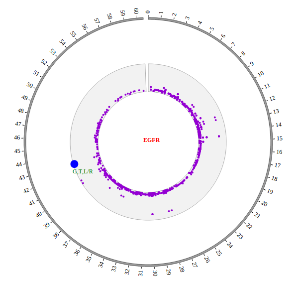
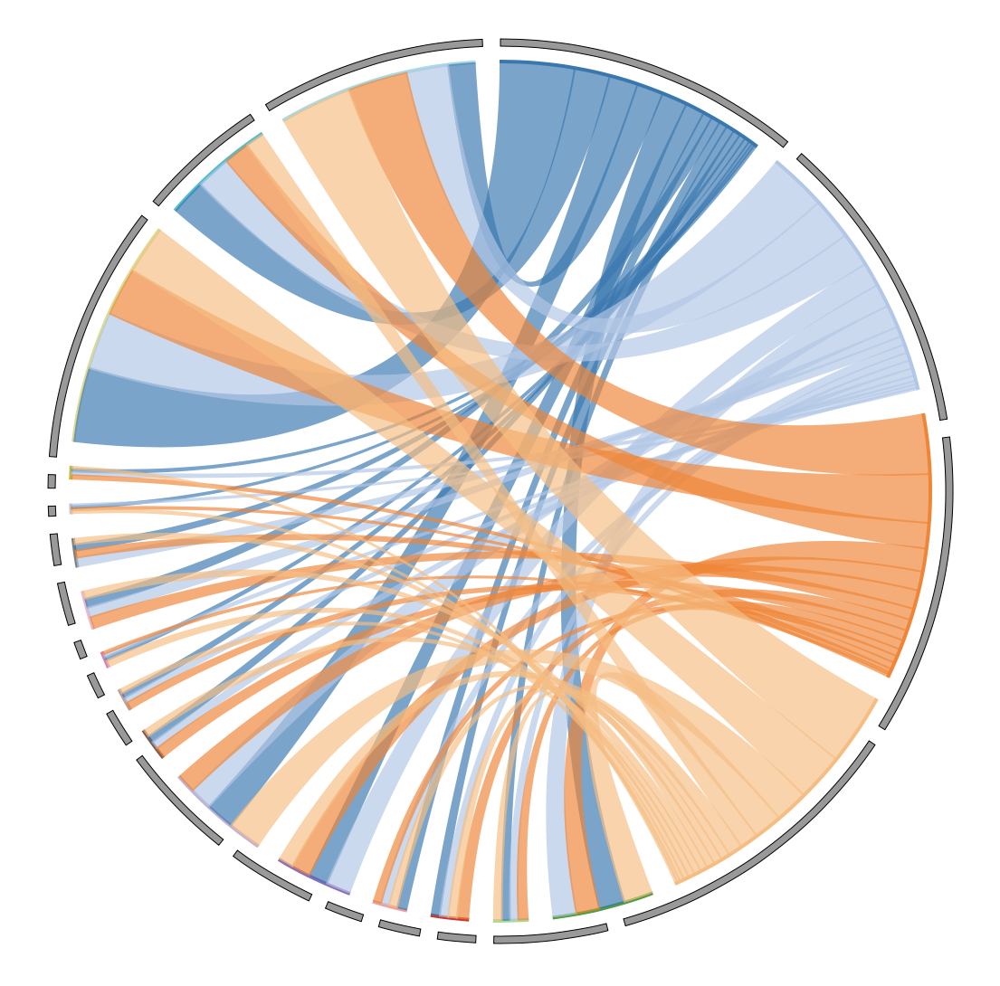
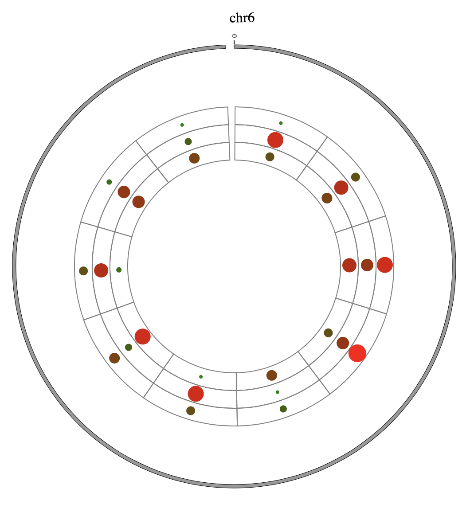

1. Introduction¶
1.1 About¶
NG-Circos is an interactive circular genome visualization tool to present and interpretate diverse types of genomic data based on web features.. It implements a raster-based SVG visualization using the open source Javascript framework jquery.js. NG-Circos is multiplatform and works in all major internet browsers (Internet Explorer, Mozilla Firefox, Google Chrome, Safari, Opera). Its speed is determined by the client’s hardware and internet browser. For smoothest user experience, we recommend Google Chrome.
NG-Circos can visualize popular genomic data format (such as WIG and GTF), construct various graphic elements (such as line, scatter, bubble and heatmap) and display/compare multiple genomic features, annotations and associations (such as genomic variations, expressions and gene fusions) in or between genomic intervals with 21 functional modules. NG-Circos also provides flexible interactive events and fascinating animations for each graphic element. Figures created by NG-Circos are publication-quality and downloadable.
NG-Circos provides SNP, CNV, HEATMAP, LINK, LINE, SCATTER, ARC, TEXT, WIG, LOLLIPOP, GENE, CHORD, AUXILIARYLINE, BUBBLE, HISTGRAM, BACKGROUND, LEGEND, COMPARE and COMBINATION, REDIRECT, DOWNLOAD totally.
Note
NG-Circos itself is not a web application, but a visualization tool that provides the functionality for bioinformatians to build Circos-like figure on bioinformatians’ own web applications. The NG-Circos users are supposed to be familiar with HTML, CSS and JavaScript.
1.2 NG-Circos & Circos¶
Though NG-Circos shares its name with Circos, NG-Circos is not exactly the same as Circos desktop. NG-Circos is a tool for programmers. It is not an app for end-users, and developers need to write code around NG-Circos to build graphcentric apps. The comparison between NG-Circos and Circos is as follow:
Comparison |
NG-Circos |
Circos |
|---|---|---|
Code |
JavaScript |
Perl |
Users |
For web developers / bioinformatians |
For end-users |
Interactive |
Yes |
No |
Used to |
Build Circos-like web applications / draw figures |
Draw figures |

3. Getting started¶
Step0. View demos in locale¶
There is a very easy and quick way to experience the power of NG-Circos. Do it step by step according to the following:
Download and extract demos file NGCircos_demos.
Open index.html file in NGCircos_demos folder with your local browser. Yes, everything is done! You will see the following. Click on the links, and you can see all of our demos locally.
“NGCircos_demos” contains three folders(“lib”, “pages”, “data”) and “index.html”. “lib” contains all JavaScript library files needed. “pages” contains configurations for demos. “data” contains the input data from users. The file structure of “NGCircos_demos”:
---NGCircos_demos
---lib
---NGCircos.js
---d3.js
---jquery.js
---saveSvgAsPng.js
---svg-crowbar.js
---pages
---gallery01.html
---gallery02.html
......
---data
---Figure_ARC_DELETION.js
---Figure_SNP01.js
......
---index.html
Step1. Including NGCircos.js¶
This section will familiarise you with the basic steps necessarily to start using NG-Circos. Here we will visualize the GWAS data in GWAS Catalog with NG-Circos step by step.
After Step0, you will have a “pages” folder in “NGCircos_demos” folder. Now create a new file “gwas.html” in “pages” folder, then include NGCircos.js in a <script> tag. Now, “gwas.html” is as follows:
<!DOCTYPE html>
<html>
<head>
<meta charset="utf-8">
<title>NGCircos.js</title>
</head>
<body>
<!-- NGCircos.js, Jquery.js and D3.js import -->
<script src="../lib/jquery.js"></script>
<script src="../lib/d3.js"></script>
<script src="../lib/NGCircos.js"></script>
</body>
</html>
Note
NG-Circos is based on Jquery.js and D3.js(v3), so they should be included before NGCircos.js. Jquery.js, D3.js and NGCircos.js can be found in the lib folder of NGCircos_demo.zip.
Step2. <div> tag to set picture position in html¶
After Step1, prepare a <div> tag with “NG-Circos” id to set the picture position you will draw in html. Now, “gwas.html” is as follows:
<!DOCTYPE html>
<html>
<head>
<meta charset="utf-8">
<title>NGCircos.js</title>
</head>
<body>
<!-- NGCircos.js, Jquery.js and D3.js import -->
<script src="../lib/jquery.js"></script>
<script src="../lib/d3.js"></script>
<script src="../lib/NGCircos.js"></script>
<!-- Prepare a <div> tag with "NGCircos" id to set the picture position your will draw in html -->
<div id="NGCircos"></div>
</body>
</html>
Step3. Genome configuration¶
“Genome configuration” defines the number and size of chromosomes.
After Step2, We will configure “Genome configuration”. Genome configuration is set in a <script> tag. Here we configure the most used human genome - hg19, its data tag are defined as NGCircosGenome. Now, “gwas.html” is as follows:
<!DOCTYPE html>
<html>
<head>
<meta charset="utf-8">
<title>NGCircos.js</title>
</head>
<body>
<!-- NGCircos.js, Jquery.js and D3.js import -->
<script src="../lib/jquery.js"></script>
<script src="../lib/d3.js"></script>
<script src="../lib/NGCircos.js"></script>
<!-- Prepare a <div> tag with "NGCircos" id to set the picture position your will draw in html -->
<div id="NGCircos"></div>
<!-- Genome configuration -->
<script>
var NGCircosGenome = [ // human hg19, data tag is NGCircosGenome
[
["1" , 249250621],
["2" , 243199373],
["3" , 198022430],
["4" , 191154276],
["5" , 180915260],
["6" , 171115067],
["7" , 159138663],
["8" , 146364022],
["9" , 141213431],
["10" , 135534747],
["11" , 135006516],
["12" , 133851895],
["13" , 115169878],
["14" , 107349540],
["15" , 102531392],
["16" , 90354753],
["17" , 81195210],
["18" , 78077248],
["19" , 59128983],
["20" , 63025520],
["21" , 48129895],
["22" , 51304566],
["X" , 155270560],
["Y" , 59373566]
]
];
</script>
</body>
</html>
Note
Here we configure hg19 human genome with data tag as NGCircosGenome.
Step4. Initialization and Main configuration¶
“Main configuration” is the main configuration file of NG-Circos and mainly divided into four classes: “Customize SVG”, “Customize genome”, “Customize Events” and “Customize Tooltips”.
After Step3, We will initialize NG-Circos and configure “Main configuration”. Here are three changes:
Initialize NG-Circos
All of the data tags that is defined in “Genome configuration” and “Data configuration” must be initialized here. We initialize data tag - NGCircosGenome as below:
NGCircos01 = new NGCircos(NGCircosGenome,{
Danger
All of the data tags that is defined in “Genome configuration” and “Data configuration” must be initialized here.
Main configuration
Here we configure 7 attributes in “Main configuration”, other attributes are used their default values. More attributes can be found in “Main configuration” part of this document.
Main configuration |
Default value |
Class |
Description |
|---|---|---|---|
|
“NGCircos” |
Customize SVG |
SVG position in html, where <div> id is “NGCircos” |
|
900 |
Customize SVG |
SVG width |
|
600 |
Customize SVG |
SVG height |
|
NGCircos |
Customize genome |
class name of SVG |
|
0.04 |
Customize genome |
distance between chromosomes |
|
246 |
Customize genome |
inner radius of chromosome |
|
270 |
Customize genome |
outer radius of chromosome |
NG-Circos callback
Callback is necessary, Cause we add a compare module for NG-Circos, users need to call back twice, but it is usually the same, so don’t need to be too concerned about it.
Now, “gwas.html” is as follows:
<!DOCTYPE html>
<html>
<head>
<meta charset="utf-8">
<title>NGCircos.js</title>
</head>
<body>
<!-- NGCircos.js, Jquery.js and D3.js import -->
<script src="../lib/jquery.js"></script>
<script src="../lib/d3.js"></script>
<script src="../lib/NGCircos.js"></script>
<!-- Prepare a <div> tag with "NGCircos" id to set the picture position your will draw in html -->
<div id="NGCircos"></div>
<!-- Genome configuration -->
<script>
var NGCircosGenome = [
[
["1" , 249250621],
["2" , 243199373],
["3" , 198022430],
["4" , 191154276],
["5" , 180915260],
["6" , 171115067],
["7" , 159138663],
["8" , 146364022],
["9" , 141213431],
["10" , 135534747],
["11" , 135006516],
["12" , 133851895],
["13" , 115169878],
["14" , 107349540],
["15" , 102531392],
["16" , 90354753],
["17" , 81195210],
["18" , 78077248],
["19" , 59128983],
["20" , 63025520],
["21" , 48129895],
["22" , 51304566],
["X" , 155270560],
["Y" , 59373566]
]
];
NGCircos01 = new NGCircos(NGCircosGenome,{ // Initialize NG-Circos with "NGCircosGenome" and Main configuration
//Main configuration
target : "NGCircos", // Main configuration "target"
svgWidth : 900, // Main configuration "svgWidth"
svgHeight : 600, // Main configuration "svgHeight"
svgClassName: "NGCircos", // Main configuration "svgClassName"
chrPad : 0.04, // Main configuration "chrPad"
innerRadius: 246, // Main configuration "innerRadius"
outerRadius: 270, // Main configuration "outerRadius"
});
NGCircos01.draw_genome(NGCircos01.genomeLength); // NG-Circos callback
NGCircos01.draw_genome(NGCircos01.genomeLength2); // NG-Circos callback second time
</script>
</body>
</html>
Great! You have drawn a simple genome! Is it so easy? Open “gwas.html” file with your local browser and view it as below:
Step5. Add Data configuration¶
“Data configuration” is designed for “Function Modules” in NG-Circos. According to “Function Modules” division, “Data configuration” includes the parts below:
Data Configuration Class |
For Biological Data |
Need “Data Preparation Tools” |
|---|---|---|
SNP module |
SNP with value; GWAS data… |
Yes |
SCATTER module |
SNP without value; Genes data… |
Yes |
LINK module |
Gene fusions; Interaction; SV… |
Yes |
CNV module |
CNV with value… |
Yes |
ARC module |
CNV without value; Gene domain; Chromosome band… |
Yes |
HEATMAP module |
Gene expression… |
Yes |
BUBBLE module |
Gene expression and classification… |
Yes |
HISTOGRAM module |
Gene expression… |
Yes |
LINE module |
Gene expression… |
Yes |
BACKGROUND module |
Display background and axis circles |
No |
TEXT module |
Assigning annotation text |
No |
WIG module |
.wig file;Read depth; Gene expression… |
Yes |
LOLLIPOP module |
Muation… |
Yes |
GENE module |
Gene profile… |
Yes |
CHORD module |
Relationship between gene, exon, protein… |
Yes |
REDIRECT module |
Redirect from module to image, website… |
No |
DOWNLOAD module |
Download as SVG, PNG |
No |
AUXILIARYLINE module |
Curve, broken, straight line with 4 kinds of marker |
No |
LEGEND module |
Customize legend in circle, line, rectangle |
No |
COMPARE module |
Advanced module, display two comparable datasets in circle… |
No |
COMBINATION module |
Advanced module, display more biology details with mouse event… |
No |
We have provided “Data Preparation Tools” to prepare the data for almost all “Function Modules” except 6 auxiliary modules(BAKCGROUND, TEXT, REDIRECT, DOWNLOAD, AUXILIARYLINE, LEGEND, and 2 advanced modules(COMPARE COMBINATION),which don’t require a data input.
Step5.1 Display GWAS data using SNP module¶
Input GWAS data
We download GWAS data from GWAS Catalog. Then we filtered the data and just left the items which their P-value less than 1E-18. We saved the data in SNP04_gwascatalog.txt, as below:
10 100315722 20.2218 rs603424
10 101219450 19 rs11190870
10 103086421 25.1549 rs11191548
10 112998590 74.0969 rs7903146
......
X 5266661 24.699 rs6638512
X 67343176 90.699 rs2497938
X 69578860 18.1549 rs11796357
X 79241621 32.699 rs5912838
The first column is the name of the chromosome.
The second column is the position of the SNP
The third column is the value of -log10(P-value)
The fourth column is the dbSNP id
Use “Data Preparation Tools” to prepare data
Note
You need to install the python 2, before running NGCircos_PrepareData.py. You can skip this step, just download SNP04_gwascatalog.js for the next step.
We provide a python program NGCircos_PrepareData.py to help users prepare the input data for each module of NG-Circos
python NGCircos_PrepareData.py SNP SNP04_gwascatalog.txt > SNP04_gwascatalog.js
Move SNP04_gwascatalog.js to ./NGCircos_demos/data/get_started_gwas/ in your local.
Output GWAS data used in NG-Circos
var SNP04_gwascatalog = [ "SNP04_gwascatalog" , {
maxRadius: 205,
minRadius: 153,
SNPFillColor: "#9400D3",
PointType: "circle",
circleSize: 2,
rectWidth: 2,
rectHeight: 2
} , [
{chr: "10", pos: "100315722", value: "20.2218", des: "rs603424", color: "rgb(153,102,0)"},
{chr: "10", pos: "101219450", value: "19", des: "rs11190870", color: "rgb(153,102,0)"},
{chr: "10", pos: "103086421", value: "25.1549", des: "rs11191548", color: "rgb(153,102,0)"},
{chr: "10", pos: "112998590", value: "74.0969", des: "rs7903146", color: "rgb(153,102,0)"},
......
{chr: "X", pos: "5266661", value: "24.699", des: "rs6638512", color: "rgb(153,153,153)"},
{chr: "X", pos: "67343176", value: "90.699", des: "rs2497938", color: "rgb(153,153,153)"},
{chr: "X", pos: "69578860", value: "18.1549", des: "rs11796357", color: "rgb(153,153,153)"},
{chr: "X", pos: "79241621", value: "32.699", des: "rs5912838", color: "rgb(153,153,153)"},
]];
Including GWAS data SNP04_gwascatalog.js
Use <script> tag to include GWAS data SNP04_gwascatalog.js. And add the following code to gwas.html.
<!-- Data configuration -->
<script src="../data/get_started_gwas/SNP04_gwascatalog.js"></script>
Initialize GWAS data in NG-Circos with data tag : SNP04_gwascatalog
Here GWAS data’s data tag is defined as SNP04_gwascatalog. So add the following code to gwas.html.
NGCircos01 = new NGCircos(SNP04_gwascatalog,NGCircosGenome,{
Now, “gwas.html” is as follows:
<!DOCTYPE html>
<html>
<head>
<meta charset="utf-8">
<title>NGCircos.js</title>
</head>
<body>
<!-- NGCircos.js, Jquery.js and D3.js import -->
<script src="../lib/jquery.js"></script>
<script src="../lib/d3.js"></script>
<script src="../lib/NGCircos.js"></script>
<!-- Prepare a <div> tag with "NGCircos" id to set the picture position your will draw in html -->
<div id="NGCircos"></div>
<!-- Data configuration -->
<script src="../data/get_started_gwas/SNP04_gwascatalog.js"></script>
<!-- Genome configuration -->
<script>
var NGCircosGenome = [
[
["1" , 249250621],
["2" , 243199373],
["3" , 198022430],
["4" , 191154276],
["5" , 180915260],
["6" , 171115067],
["7" , 159138663],
["8" , 146364022],
["9" , 141213431],
["10" , 135534747],
["11" , 135006516],
["12" , 133851895],
["13" , 115169878],
["14" , 107349540],
["15" , 102531392],
["16" , 90354753],
["17" , 81195210],
["18" , 78077248],
["19" , 59128983],
["20" , 63025520],
["21" , 48129895],
["22" , 51304566],
["X" , 155270560],
["Y" , 59373566]
]
];
NGCircos01 = new NGCircos(SNP04_gwascatalog,NGCircosGenome,{ // Initialize NG-Circos with "NGCircosGenome" and Main configuration
//Main configuration
target : "NGCircos", // Main configuration "target"
svgWidth : 900, // Main configuration "svgWidth"
svgHeight : 600, // Main configuration "svgHeight"
svgClassName: "NGCircos", // Main configuration "svgClassName"
chrPad : 0.04, // Main configuration "chrPad"
innerRadius: 246, // Main configuration "innerRadius"
outerRadius: 270, // Main configuration "outerRadius"
});
NGCircos01.draw_genome(NGCircos01.genomeLength); // NG-Circos callback
NGCircos01.draw_genome(NGCircos01.genomeLength2); // NG-Circos callback second time
</script>
</body>
</html>
Open “gwas.html” file with your local browser and view it as below:
Step5.2 Display Background using BACKGROUND module¶
Including BACKGROUND module configuration
BACKGROUND module’s configuration is short. So we can also include BACKGROUND module as the way below.
Note
if your data in other module, such as SNP module, is not too much and the file is short, you can also include it as the way below.
<script>
var BACKGROUND01 = [ "BACKGROUND01" , {
BginnerRadius: 205,
BgouterRadius: 153,
BgFillColor: "#F2F2F2",
BgborderColor : "#000",
BgborderSize : 0.3
}];
</script>
Initialize BACKGROUND module with data tag : BACKGROUND01
Here the data tag is defined as BACKGROUND01. So add the following code to gwas.html.
NGCircos01 = new NGCircos(BACKGROUND01,SNP04_gwascatalog,NGCircosGenome,{
Now, “gwas.html” is as follows:
<!DOCTYPE html>
<html>
<head>
<meta charset="utf-8">
<title>NGCircos.js</title>
</head>
<body>
<!-- NGCircos.js, Jquery.js and D3.js import -->
<script src="../lib/jquery.js"></script>
<script src="../lib/d3.js"></script>
<script src="../lib/NGCircos.js"></script>
<!-- Prepare a <div> tag with "NGCircos" id to set the picture position your will draw in html -->
<div id="NGCircos"></div>
<!-- Data configuration -->
<script src="../data/get_started_gwas/SNP04_gwascatalog.js"></script>
<script>
var BACKGROUND01 = [ "BACKGROUND01" , {
BginnerRadius: 205,
BgouterRadius: 153,
BgFillColor: "#F2F2F2",
BgborderColor : "#000",
BgborderSize : 0.3
}];
</script>
<!-- Genome configuration -->
<script>
var NGCircosGenome = [
[
["1" , 249250621],
["2" , 243199373],
["3" , 198022430],
["4" , 191154276],
["5" , 180915260],
["6" , 171115067],
["7" , 159138663],
["8" , 146364022],
["9" , 141213431],
["10" , 135534747],
["11" , 135006516],
["12" , 133851895],
["13" , 115169878],
["14" , 107349540],
["15" , 102531392],
["16" , 90354753],
["17" , 81195210],
["18" , 78077248],
["19" , 59128983],
["20" , 63025520],
["21" , 48129895],
["22" , 51304566],
["X" , 155270560],
["Y" , 59373566]
]
];
NGCircos01 = new NGCircos(BACKGROUND01,SNP04_gwascatalog,NGCircosGenome,{ // Initialize NG-Circos with "NGCircosGenome" and Main configuration
//Main configuration
target : "NGCircos", // Main configuration "target"
svgWidth : 900, // Main configuration "svgWidth"
svgHeight : 600, // Main configuration "svgHeight"
svgClassName: "NGCircos", // Main configuration "svgClassName"
chrPad : 0.04, // Main configuration "chrPad"
innerRadius: 246, // Main configuration "innerRadius"
outerRadius: 270, // Main configuration "outerRadius"
});
NGCircos01.draw_genome(NGCircos01.genomeLength); // NG-Circos callback
NGCircos01.draw_genome(NGCircos01.genomeLength2); // NG-Circos callback second time
</script>
</body>
</html>
Open “gwas.html” file with your local browser and view it as below:
Step5.3 Open MouseOver and MouseOut events of SNP module in “Main configuration”¶
Here we configure “Customize Events” and “Customize Tooltips” two classes in “Main configuration” to open MouseOver and MouseOut events. More attributes can be found in “Main configuration” part of this document. Attributes used here are below:
Main configuration |
Value |
Class |
Description |
|---|---|---|---|
|
true |
Customize Events |
default false, [true/false], open/not open mouse mouse Over event of SNP module |
|
“red” |
Customize Events |
default “red”, “none” means no change, element change color after mouse Over the element |
|
5 |
Customize Events |
default 2, “none” means no change, element change circle size after mouse Over the element |
|
1.0 |
Customize Events |
default 1.0, “none” means no change, element change opacity after mouse Over the element |
|
“#F26223” |
Customize Events |
default “#F26223”, “none” means no change, element change stroke color after mouse Over the element |
|
3 |
Customize Events |
default 3, “none” means no change, element change stroke width after mouse Over the element |
|
“style” |
Built in styles or customize tooltips |
default “chr : “ |
|
” “ |
Customize Tooltips |
default ” “ |
|
1 |
Customize Tooltips |
default 0 |
|
true |
Customize Events |
default false, [true/false], open/not open mouse mouse out event of SNP module |
|
700 |
Customize Events |
default 500, animation time after mouse out the element |
|
“none” |
Customize Events |
default “red”, “none” means no change, element change color after mouse out the element |
|
“none” |
Customize Events |
default 2, “none” means no change, element change circle size after mouse out the element |
|
1.0 |
Customize Events |
default 1.0, “none” means no change, element change opacity after mouse out the element |
|
0 |
Customize Events |
default 0, “none” means no change, element change stroke width after mouse out the element |
NGCircos01 = new NGCircos(BACKGROUND01,SNP04_gwascatalog,NGCircosGenome,{
//Main configuration
target : "NGCircos",
svgWidth : 900,
svgHeight : 600,
svgClassName: "NGCircos",
chrPad : 0.04,
innerRadius: 246,
outerRadius: 270,
SNPMouseOverDisplay : true,
SNPMouseOverColor : "red",
SNPMouseOverCircleSize : 5,
SNPMouseOverCircleOpacity : 1.0,
SNPMouseOverCircleStrokeColor : "#F26223",
SNPMouseOverCircleStrokeWidth : 3,
SNPMouseOverTooltipsSetting :"style1",
SNPMouseOverTooltipsHtml : " ",
SNPMouseOverTooltipsBorderWidth : 1,
SNPMouseOutDisplay : true,
SNPMouseOutAnimationTime : 700,
SNPMouseOutColor : "none",
SNPMouseOutCircleSize : "none",
SNPMouseOutCircleOpacity : 1.0,
SNPMouseOutCircleStrokeWidth : 0,
});
Now, “gwas.html” is as follows:
<!DOCTYPE html>
<html>
<head>
<meta charset="utf-8">
<title>NGCircos.js</title>
</head>
<body>
<!-- NGCircos.js, Jquery.js and D3.js import -->
<script src="../lib/jquery.js"></script>
<script src="../lib/d3.js"></script>
<script src="../lib/NGCircos.js"></script>
<!-- Prepare a <div> tag with "NGCircos" id to set the picture position your will draw in html -->
<div id="NGCircos"></div>
<!-- Data configuration -->
<script src="../data/get_started_gwas/SNP04_gwascatalog.js"></script>
<script>
var BACKGROUND01 = [ "BACKGROUND01" , {
BginnerRadius: 205,
BgouterRadius: 153,
BgFillColor: "#F2F2F2",
BgborderColor : "#000",
BgborderSize : 0.3
}];
</script>
<!-- Genome configuration -->
<script>
var NGCircosGenome = [
[
["1" , 249250621],
["2" , 243199373],
["3" , 198022430],
["4" , 191154276],
["5" , 180915260],
["6" , 171115067],
["7" , 159138663],
["8" , 146364022],
["9" , 141213431],
["10" , 135534747],
["11" , 135006516],
["12" , 133851895],
["13" , 115169878],
["14" , 107349540],
["15" , 102531392],
["16" , 90354753],
["17" , 81195210],
["18" , 78077248],
["19" , 59128983],
["20" , 63025520],
["21" , 48129895],
["22" , 51304566],
["X" , 155270560],
["Y" , 59373566]
]
];
NGCircos01 = new NGCircos(BACKGROUND01,SNP04_gwascatalog,NGCircosGenome,{
//Main configuration
target : "NGCircos",
svgWidth : 900,
svgHeight : 600,
svgClassName: "NGCircos",
chrPad : 0.04,
innerRadius: 246,
outerRadius: 270,
SNPMouseOverDisplay : true,
SNPMouseOverColor : "red",
SNPMouseOverCircleSize : 5,
SNPMouseOverCircleOpacity : 1.0,
SNPMouseOverCircleStrokeColor : "#F26223",
SNPMouseOverCircleStrokeWidth : 3,
SNPMouseOverTooltipsSetting :"style1",
SNPMouseOverTooltipsHtml : " ",
SNPMouseOverTooltipsBorderWidth : 1,
SNPMouseOutDisplay : true,
SNPMouseOutAnimationTime : 700,
SNPMouseOutColor : "none",
SNPMouseOutCircleSize : "none",
SNPMouseOutCircleOpacity : 1.0,
SNPMouseOutCircleStrokeWidth : 0,
});
NGCircos01.draw_genome(NGCircos01.genomeLength);
NGCircos01.draw_genome(NGCircos01.genomeLength2);
</script>
</body>
</html>
Open “gwas.html” file with your local browser and view it as below:
Step5.4 Dispaly Chromosome band using ARC module¶
The chromosome band represents the approximate location of bands seen on Giemsa-stained chromosomes. We have provided some commonly used genomes as below. The color of chromosome band is the same as Circos.
Species |
Genome version |
Data name |
Genome |
cytoBand in UCSC |
|---|---|---|---|---|
Human |
grch38 |
ARC_grch38 |
||
Human |
hg19 |
ARC_hg19 |
||
human |
hg18 |
ARC_hg18 |
||
Mouse |
mm10 |
ARC_mm10 |
||
Mouse |
mm9 |
ARC_mm9 |
Here we take hg19 as an example to explain how to build these files.
Input chromosome band data
We download chromosome band data from UCSC. Then we follow Circos’s color settings on chromosome band to add the color column. We saved the data in karyotype.human.hg19.txt, as below:
1 0 2300000 rgb(255,255,255)
1 2300000 5400000 rgb(200,200,200)
1 5400000 7200000 rgb(255,255,255)
1 7200000 9200000 rgb(200,200,200)
......
Y 19800000 22100000 rgb(255,255,255)
Y 22100000 26200000 rgb(200,200,200)
Y 26200000 28800000 rgb(255,255,255)
Y 28800000 59373566 rgb(220,220,220)
Use “Data Preparation Tools” to prepare data
Note
You need to install the python 2, before running NGCircos_PrepareData.py. You can skip this step, just download karyotype.human.hg19.js for the next step.
We provide a python program NGCircos_PrepareData.py to help users prepare the input data for each module of NG-Circos
python NGCircos_PrepareData.py ARC karyotype.human.hg19.txt > karyotype.human.hg19.js
Move karyotype.human.hg19.js to ./NGCircos_demos/data/ in your local.
Output chromosome band data used in NG-Circos
ARC_hg19 = [ "ARC_hg19" , {
innerRadius: -0,
outerRadius: -0,
} , [
{chr: "1", start: "0" , end: "2300000", color: "rgb(255,255,255)"},
{chr: "1", start: "2300000" , end: "5400000", color: "rgb(200,200,200)"},
{chr: "1", start: "5400000" , end: "7200000", color: "rgb(255,255,255)"},
{chr: "1", start: "7200000" , end: "9200000", color: "rgb(200,200,200)"},
......
{chr: "Y", start: "19800000" , end: "22100000", color: "rgb(255,255,255)"},
{chr: "Y", start: "22100000" , end: "26200000", color: "rgb(200,200,200)"},
{chr: "Y", start: "26200000" , end: "28800000", color: "rgb(255,255,255)"},
{chr: "Y", start: "28800000" , end: "59373566", color: "rgb(220,220,220)"},
]];
Including chromosome band data karyotype.human.hg19.js
Use <script> tag to include chromosome band data karyotype.human.hg19.js. And add the following code to gwas.html.
<!-- Data configuration -->
<script src="../data/get_started_gwas/karyotype.human.hg19.js"></script>
Initialize chromosome band data in NG-Circos with data tag : ARC_hg19
Here chromosome band data’s data tag is defined as ARC_hg19. So add the following code to gwas.html.
NGCircos01 = new NGCircos(ARC_hg19,SNP04_gwascatalog,NGCircosGenome,{
Now, “gwas.html” is as follows:
<!DOCTYPE html>
<html>
<head>
<meta charset="utf-8">
<title>NGCircos.js</title>
</head>
<body>
<!-- NGCircos.js, Jquery.js and D3.js import -->
<script src="../lib/jquery.js"></script>
<script src="../lib/d3.js"></script>
<script src="../lib/NGCircos.js"></script>
<!-- Prepare a <div> tag with "NGCircos" id to set the picture position your will draw in html -->
<div id="NGCircos"></div>
<!-- Data configuration -->
<script src="../data/karyotype.human.hg19.js"></script>
<script src="../data/get_started_gwas/SNP04_gwascatalog.js"></script>
<script>
var BACKGROUND01 = [ "BACKGROUND01" , {
BginnerRadius: 205,
BgouterRadius: 153,
BgFillColor: "#F2F2F2",
BgborderColor : "#000",
BgborderSize : 0.3
}];
</script>
<!-- Genome configuration -->
<script>
var NGCircosGenome = [
[
["1" , 249250621],
["2" , 243199373],
["3" , 198022430],
["4" , 191154276],
["5" , 180915260],
["6" , 171115067],
["7" , 159138663],
["8" , 146364022],
["9" , 141213431],
["10" , 135534747],
["11" , 135006516],
["12" , 133851895],
["13" , 115169878],
["14" , 107349540],
["15" , 102531392],
["16" , 90354753],
["17" , 81195210],
["18" , 78077248],
["19" , 59128983],
["20" , 63025520],
["21" , 48129895],
["22" , 51304566],
["X" , 155270560],
["Y" , 59373566]
]
];
NGCircos01 = new NGCircos(ARC_hg19,BACKGROUND01,SNP04_gwascatalog,NGCircosGenome,{
//Main configuration
target : "NGCircos",
svgWidth : 900,
svgHeight : 600,
svgClassName: "NGCircos",
chrPad : 0.04,
innerRadius: 246,
outerRadius: 270,
SNPMouseOverDisplay : true,
SNPMouseOverColor : "red",
SNPMouseOverCircleSize : 5,
SNPMouseOverCircleOpacity : 1.0,
SNPMouseOverCircleStrokeColor : "#F26223",
SNPMouseOverCircleStrokeWidth : 3,
SNPMouseOverTooltipsSetting :"style1",
SNPMouseOverTooltipsHtml : " ",
SNPMouseOverTooltipsBorderWidth : 1,
SNPMouseOutDisplay : true,
SNPMouseOutAnimationTime : 700,
SNPMouseOutColor : "none",
SNPMouseOutCircleSize : "none",
SNPMouseOutCircleOpacity : 1.0,
SNPMouseOutCircleStrokeWidth : 0,
});
NGCircos01.draw_genome(NGCircos01.genomeLength);
NGCircos01.draw_genome(NGCircos01.genomeLength2); // NG-Circos callback second time
</script>
</body>
</html>
Open “gwas.html” file with your local browser and view it as below:
4. Function Modules and Data Preparation Tools¶
“Function Modules” are designed for specific biological data and graphic elements, which currently contains 20 modules, and later will be expanded according to the needs.
“Data configuration” is designed for “Function Modules” in NG-Circos. According to “Function Modules” division, “Data configuration” includes ten parts.
Function Modules |
For Biological Data |
Need “Data Preparation Tools” |
|---|---|---|
SNP module |
SNP with value; GWAS data… |
Yes |
SCATTER module |
SNP without value; Genes data… |
Yes |
LINK module |
Gene fusions; Interaction; SV… |
Yes |
CNV module |
CNV with value… |
Yes |
ARC module |
CNV without value; Gene domain; Chromosome band… |
Yes |
HEATMAP module |
Gene expression… |
Yes |
BUBBLE module |
Gene expression and classification… |
Yes |
HISTOGRAM module |
Gene expression… |
Yes |
LINE module |
Gene expression… |
Yes |
BACKGROUND module |
Display background and axis circles |
No |
TEXT module |
Assigning annotation text |
No |
WIG module |
.wig file;Read depth; Gene expression… |
Yes |
LOLLIPOP module |
Muation… |
Yes |
GENE module |
Gene profile… |
Yes |
CHORD module |
Relationship between gene, exon, protein… |
Yes |
REDIRECT module |
Redirect from module to image, website… |
No |
DOWNLOAD module |
Download as SVG, PNG |
No |
AUXILIARYLINE module |
Curve, broken, straight line with 4 kinds of marker |
No |
LEGEND module |
Customize legend in circle, line, rectangle |
No |
COMPARE module |
Advanced module, display two comparable datasets in circle… |
No |
COMBINATION module |
Advanced module, display more biology details with mouse event… |
No |
We also have provided a python program NGCircos_PrepareData.py as “Data Preparation Tools” to prepare the input data for almost all “Function Modules” except 6 auxiliary modules(**BAKCGROUND, TEXT, REDIRECT, DOWNLOAD, AUXILIARYLINE, LEGEND, **and 2 advanced modules(**COMPARE COMBINATION). Below will use this tool to introduce how to prepare the data for each module.
4.1 Data Preparation Tools¶
(1) NGCircos_PrepareData.py¶
We provide a python program NGCircos_PrepareData.py to help users prepare the input data for each module of NG-Circos.
Note
If you are familiar with a script language such as Python, Perl, Shell, you can also convert the data format by yourself. Data format is defined in “6. API: Data configuration”.
You need to install Python 2* before running NGCircos_PrepareData.py. The usage of NGCircos_PrepareData.py is as below:
Python Version: Python 2.7.3
Usage:
python NGCircos_PrepareData.py <module: SNP|SCATTER|LINK|CNV|ARC|HEATMAP|HISTOGRAM|LINE|WIG|LOLLIPOP|GENE|CHORD|COMBINATION_SNP> <input: input.txt> > <output:output.js>
Arguments:
module: Specify the module name of NG-Circos, including SNP,SCATTER,LINK,CNV,ARC,HEATMAP,HISTOGRAM,LINE,WIG,LOLLIPOP,GENE,CHORD and COMBINATION_SNP
input : input data input.txt
output: output data output.js
Example:
python NGCircos_PrepareData.py SNP SNP01.txt > SNP01.js
Note
If you open the COMBINATION event, you may need to select the specific module, like COMBINATION_SNP. Since the graph for COMBINATION is highly customizable, this python script may not work if you change the column number of the graph, which originally is 5 in COMBINATION_SNP01.txt.
(2) NGCircos_LocusZoomData.py¶
We provide a python program NGCircos_LocusZoomData.py to help users prepare the LocusZoom data for NG-Circos automatically.
Note
If you are familiar with a script language such as Python, Perl, Shell, you can also convert the data format by yourself. Data format is defined in “6. API: Data configuration”.
You need to install Python 2* before running NGCircos_LocusZoomData.py. The usage of NGCircos_LocusZoomData.py is as below:
Python Version: Python 2.7.3
Usage:
python NGCircos_LocusZoomData.py <--snp> <--out> <--bfile> <--ld-snp> <--ld-window-kb> <--ld-window> <--ld-window-r2> <--recombRate> <--gene_annotation>
Arguments:
--snp: The file address of SNP file, each row with such structure: <chromosome position p-value chr:pos ....>. First 4 columns are required!
--out: The output address of output file(postfix with .js)
--bfile: The ped file address, same parameter as plink
--ld-snp: SNP(chr:pos),same parameter as plink
--ld-window-kb: ,default b200, same parameter as plink
--ld-window: default 99999, same parameter as plink
--ld-window-r2: 0, same parameter as plink
--recombRate: The file address for hapmap data which store the recombination rate of each SNP
--gene_annotation: The file address for gene annotation data from gencode
We apply a `project package <script/NGCircos_LocusZoom.zip>` here including a shell script, by executing which with a given SNP(chr:pos), a javascript file for circos-locusZoom plot will be generated automatically.
Usage:
./run.sh chr:pos
Example:
./run.sh chr10:94097048
The output .js file will be stored at result/chr_pos
4.2 SNP module¶
“SNP module” is used to display the SNP density data, GWAS data, etc. Of course, other data have similar structure can also be displayed by SNP module.
Note
We will use four steps to illustrate the input data preparation and how to use SNP module, below is an example.
(1) SNP data preparation¶
Input data¶
Users should prepare the input data in the following format (separated by tabs).
#chr pos value des
10 100315722 20.2218 rs603424
10 101219450 19 rs11190870
10 103086421 25.1549 rs11191548
10 112998590 74.0969 rs7903146
......
X 5266661 24.699 rs6638512
X 67343176 90.699 rs2497938
X 69578860 18.1549 rs11796357
X 79241621 32.699 rs5912838
The 1 column(
chr) is the name of the chromosome.The 2 column(
pos) is the position of the SNP.The 3 column(
value) is the value(density, P-value, etc.) of the SNP.The 4 column(
des) is the description of the SNP.
Save the input data to “SNP01.txt”, Use “NGCircos_PrepareData.py” to prepare data¶
python NGCircos_PrepareData.py SNP SNP01.txt > SNP01.js
Output data used in NG-Circos¶
Change the default configuration, such as minRadius, and finally SNP01.js is in the following:
var SNP01 = [ "SNP01" , {
maxRadius: 205,
minRadius: 153,
SNPFillColor: "#9400D3",
PointType: "circle",
circleSize: 2,
rectWidth: 2,
rectHeight: 2
} , [
{chr: "10", pos: "100315722", value: "20.2218", des: "rs603424", color: "rgb(153,102,0)"},
{chr: "10", pos: "101219450", value: "19", des: "rs11190870", color: "rgb(153,102,0)"},
{chr: "10", pos: "103086421", value: "25.1549", des: "rs11191548", color: "rgb(153,102,0)"},
{chr: "10", pos: "112998590", value: "74.0969", des: "rs7903146", color: "rgb(153,102,0)"},
{chr: "10", pos: "121577821", value: "169.699", des: "rs2981579", color: "rgb(153,102,0)"},
......
{chr: "X", pos: "5266661", value: "24.699", des: "rs6638512", color: "rgb(153,153,153)"},
{chr: "X", pos: "67343176", value: "90.699", des: "rs2497938", color: "rgb(153,153,153)"},
{chr: "X", pos: "69578860", value: "18.1549", des: "rs11796357", color: "rgb(153,153,153)"},
{chr: "X", pos: "79241621", value: "32.699", des: "rs5912838", color: "rgb(153,153,153)"},
]];
(2) Including SNP data¶
Use <script> tag to include SNP01.js.
<script src="../data/data_prepare/SNP01.js"></script>
(3) Initialize SNP data with data tag : SNP01¶
Here the data’s data tag is defined as SNP01.
NGCircos01 = new NGCircos(SNP01,NGCircosGenome,{ // Initialize with "SNP01" data tag
(4) Visualization of SNP module using NG-Circos¶
4.3 SCATTER module¶
“SCATTER module” is used to display the SNP without value, Genes data, etc. Of course, other data have similar structure can also be displayed by SCATTER module.
Note
We will use four steps to illustrate the input data preparation and how to use SCATTER module, below is an example.
Input data: SCATTER01.txt
Input data used in NG-Circos: SCATTER01.js
(1) SCATTER data preparation¶
Input data¶
Users should prepare the input data in the following format (separated by tabs).
#chr start end name des
1 1102484 1102578 hsa-mir-200b breast cancer
11 122017230 122017301 hsa-let-7a-2 ovarian cancer
22 46508629 46508702 hsa-let-7a-3 leukemia cancer
14 101349316 101349412 hsa-mir-127 breast cancer
Five fields are required:
The 1 column(
chr) is the name of the chromosome.The 2 column(
start) is the start position of the scatter.The 3 column(
end) is the end position of the scatter.The 4 column(
name) is the name of the scatter.The 5 column(
des) is the description of the scatter.
Save the input data to “SCATTER01.txt”, Use “NGCircos_PrepareData.py” to prepare data¶
python NGCircos_PrepareData.py SCATTER SCATTER01.txt > SCATTER01.js
Output data used in NG-Circos¶
Change the default configuration, and finally SCATTER01.js is in the following:
var SCATTER01 = [ "SCATTER01" , {
SCATTERRadius: 220,
innerCircleSize: 1,
outerCircleSize: 7,
innerCircleColor: "red",
outerCircleColor: "#CC3399",
innerPointType: "circle", //circle,rect
outerPointType: "circle", //circle,rect
innerrectWidth: 2,
innerrectHeight: 2,
outerrectWidth: 10,
outerrectHeight: 10,
outerCircleOpacity: 1,
random_data: 0
} , [
{chr: "1", start: "1102484", end: "1102578", name: "hsa-mir-200b", des: "breast cancer"},
{chr: "11", start: "122017230", end: "122017301", name: "hsa-let-7a-2", des: "ovarian cancer"},
{chr: "22", start: "46508629", end: "46508702", name: "hsa-let-7a-3", des: "leukemia cancer"},
{chr: "14", start: "101349316", end: "101349412", name: "hsa-mir-127", des: "breast cancer"},
]];
(2) Including SCATTER data¶
Use <script> tag to include SCATTER01.js.
<script src="../data/data_prepare/SCATTER01.js"></script>
(3) Initialize SCATTER data with data tag : SCATTER01¶
Here the data’s data tag is defined as SCATTER01.
NGCircos01 = new NGCircos(SCATTER01,NGCircosGenome,{ // Initialize with "SCATTER01" data tag
(4) Visualization of SCATTER data using NG-Circos¶
4.4 LINK module¶
“LINK module” is used to display the Gene fusions data, Interaction data, “SV data” etc. Of course, other data have similar structure can also be displayed by LINK module.
Note
We will use four steps to illustrate the input data preparation and how to use LINK module, below is an example.
Input data: LINK01.txt
Input data used in NG-Circos: LINK01.js
(1) LINK data preparation¶
Input data¶
Users should prepare the input data in the following format (separated by tabs).
#name g1chr g1start g1end g1name g2chr g2start g2end g2name
FGFR3--TACC3 4 1795662 1808986 FGFR3 4 1723217 1746905 TACC3
CCDC6--RET 10 43595894 43623714 RET 10 61552678 61666182 TACC3
ETV6--NTRK3 12 11905384 12043977 ETV6 15 88420169 88799384 NTRK3
EGFR--SEPT14 7 55086971 55273307 EGFR 7 55861237 55930482 SEPT14
EML4--ALK 2 42472644 42557344 EML4 2 29416093 30143525 ALK
ABL1--BCR 9 133589707 133761067 ABL1 22 23523148 23657706 BCR
Nine fields are required:
The 1 column(
name) is the name of the link.The 2 column(
g1chr) is the chromosome of gene 1.The 3 column(
g1start) is the start of gene 1.The 4 column(
g1end) is the end of gene 1.The 5 column(
g1name) is the name of gene 1.The 6 column(
g2chr) is the chromosome of gene 2.The 7 column(
g2start) is the start of gene 2.The 8 column(
g2end) is the end of gene 2.The 9 column(
g2name) is the name of gene 2.
Save the input data to “LINK01.txt”, Use “NGCircos_PrepareData.py” to prepare data¶
python NGCircos_PrepareData.py LINK LINK01.txt > LINK01.js
Output data used in NG-Circos¶
Change the default configuration, and finally LINK01.js is in the following:
var LINK01 = [ "LINK01" , {
LinkRadius: 140,
LinkFillColor: "#F26223",
LinkWidth: 3,
LinkType:"Q",
displayLinkAxis: true,
LinkAxisColor: "#B8B8B8",
LinkAxisWidth: 0.5,
LinkAxisPad: 3,
displayLinkLabel: true,
LinkLabelColor: "red",
LinkLabelSize: 13,
LinkLabelPad: 8,
} , [
{fusion: "FGFR3--TACC3", g1chr: "4", g1start: "1795662", g1end: "1808986", g1name: "FGFR3", g2chr: "4", g2start: "1723217", g2end: "1746905", g2name: "TACC3"},
{fusion: "CCDC6--RET", g1chr: "10", g1start: "43595894", g1end: "43623714", g1name: "RET", g2chr: "10", g2start: "61552678", g2end: "61666182", g2name: "TACC3"},
{fusion: "ETV6--NTRK3", g1chr: "12", g1start: "11905384", g1end: "12043977", g1name: "ETV6", g2chr: "15", g2start: "88420169", g2end: "88799384", g2name: "NTRK3"},
{fusion: "EGFR--SEPT14", g1chr: "7", g1start: "55086971", g1end: "55273307", g1name: "EGFR", g2chr: "7", g2start: "55861237", g2end: "55930482", g2name: "SEPT14"},
{fusion: "EML4--ALK", g1chr: "2", g1start: "42472644", g1end: "42557344", g1name: "EML4", g2chr: "2", g2start: "29416093", g2end: "30143525", g2name: "ALK"},
{fusion: "ABL1--BCR", g1chr: "9", g1start: "133589707", g1end: "133761067", g1name: "ABL1", g2chr: "22", g2start: "23523148", g2end: "23657706", g2name: "BCR"},
]];
(2) Including LINK data¶
Use <script> tag to include LINK01.js.
<script src="../data/LINK01.js"></script>
(3) Initialize NG-Circos with LINK data¶
Prepare a <div> tag with “example” id to set the picture position your will draw in html, e.g.:
NGCircos01 = new NGCircos(LINK01,NGCircosGenome,{ // Initialize with "LINK01" data tag
(4) Visualization of LINK data using NG-Circos¶
4.5 CNV module¶
“CNV module” is used to display the CNV data, etc. Of course, other data have similar structure can also be displayed by CNV module.
Note
We will use four steps to illustrate the input data preparation and how to use CNV module, below is an example.
(1) CNV data preparation¶
Input data¶
Users should prepare the input data in the following format (separated by tabs).
#chr start end value
1 764788 87109267 2.5
1 87109268 120217058 2
1 144101324 222713034 4
1 222713035 222867750 6
......
9 30330084 140139368 3.5
X 105073 114046817 1
X 114112404 114299959 2
X 114376344 154884814 1
Four fields are required:
The 1 column(
chr) is the name of the chromosome.The 2 column(
start) is the start of the CNV region.The 3 column(
end) is the end of the CNV region.The 4 column(
value) is the copy number of CNV region.
Save the input data to “CNV01.txt”, Use “NGCircos_PrepareData.py” to prepare data¶
python NGCircos_PrepareData.py CNV CNV01.txt > CNV01.js
Output data used in NG-Circos¶
Change the default configuration, and finally CNV01.js is in the following:
var CNV01 = [ "CNV01" , {
maxRadius: 175,
minRadius: 116,
CNVwidth: 2,
CNVColor: "#4876FF",
} , [
{chr: "1", start: "764788", end: "87109267", value: "2.5"},
{chr: "1", start: "87109268", end: "120217058", value: "2"},
{chr: "1", start: "144101324", end: "222713034", value: "4"},
{chr: "1", start: "222713035", end: "222867750", value: "6"},
......
{chr: "9", start: "30330084", end: "140139368", value: "3.5"},
{chr: "X", start: "105073", end: "114046817", value: "1"},
{chr: "X", start: "114112404", end: "114299959", value: "2"},
{chr: "X", start: "114376344", end: "154884814", value: "1"},
]];
(2) Including CNV data¶
Use <script> tag to include CNV01.js.
<script src="../data/data_prepare/CNV01.js"></script>
(3) Initialize CNV data with data tag : CNV01¶
Here the data’s data tag is defined as CNV01.
NGCircos01 = new NGCircos(BACKGROUND01,CNV01,NGCircosGenome,{ // Initialize with "CNV01" data tag
(4) Visualization of CNV data using NG-Circos¶
4.6 ARC module¶
“ARC module” is used to display the CNV without value, Gene domain, Chromosome band, etc. Of course, other data have similar structure can also be displayed by ARC module.
Note
We will use four steps to illustrate the input data preparation and how to use ARC module, below is an example.
(1) ARC data preparation¶
Input data¶
Users should prepare the input data in the following format (separated by tabs).
#chr start end color des
EGFR 57 167 #CD8500 Recep_L domain
EGFR 185 338 blue Furin-like domain
EGFR 361 480 #CD8500 Recep_L domain
EGFR 505 636 yellow GF_recep_IV domain
EGFR 713 965 red Pkinase Tyr domain
Five fields are required:
The 1 column(
chr) is the name of the chromosome. In this example, this field specify the protein name.The 2 column(
start) is the start of the arc.The 3 column(
end) is the end of the arc.The 4 column(
color) is the color of the arc.The 5 column(
des) is the description of the arc.
Save the input data to “ARC01.txt”, Use “NGCircos_PrepareData.py” to prepare data¶
python NGCircos_PrepareData.py ARC ARC01.txt > ARC01.js
Output data used in NG-Circos¶
Change the default configuration, and finally ARC01.js is in the following:
var ARC01 = [ "ARC01" , {
innerRadius: -55,
outerRadius: -45,
} , [
{chr: "EGFR", start: "57", end: "167", color: "#CD8500", des: "Recep_L domain"},
{chr: "EGFR", start: "185", end: "338", color: "blue", des: "Furin-like domain"},
{chr: "EGFR", start: "361", end: "480", color: "#CD8500", des: "Recep_L domain"},
{chr: "EGFR", start: "505", end: "636", color: "yellow", des: "GF_recep_IV domain"},
{chr: "EGFR", start: "713", end: "965", color: "red", des: "Pkinase Tyr domain"},
]];
(2) Including ARC data¶
Use <script> tag to include ARC01.js.
<script src="../data/data_prepare/ARC01.js"></script>
(3) Initialize ARC data with data tag : ARC01¶
Here the data’s data tag is defined as ARC01.
NGCircos01 = new NGCircos(TEXT01,ARC01,NGCircosGenome,{ // Initialize with "ARC01" data tag
(4) Visualization of ARC module using NG-Circos¶
4.7 HEATMAP module¶
“HEATMAP module” is used to display the Gene expression data, etc. Of course, other data have similar structure can also be displayed by HEATMAP module.
Note
We will use four steps to illustrate the input data preparation and how to use HEATMAP module, below is an example.
Input data: HEATMAP01.txt
Input data used in NG-Circos: HEATMAP01.js
(1) HEATMAP data preparation¶
Input data¶
Users should prepare the input data in the following format (separated by tabs).
#chr start end name value
2L 1 1011544 test heatmap 0.8
2L 1011548 2011544 test heatmap 0.3
2L 2011548 3011544 test heatmap 0.1
2L 2011545 2011546 test heatmap 0.01
......
X 18011548 19011544 test heatmap 0.83
X 19011548 20011544 test heatmap 0.39
X 20011548 21146708 test heatmap 0.49
X 21011548 22422827 test heatmap 0.83
Five fields are required:
The 1 column(
chr) is the name of the chromosome.The 2 column(
start) is the start of the region.The 3 column(
end) is the end of the region.The 4 column(
name) is the name of the region.The 5 column(
value) is the value of the region.
Save the input data to “HEATMAP01.txt”, Use “NGCircos_PrepareData.py” to prepare data¶
python NGCircos_PrepareData.py HEATMAP HEATMAP01.txt > HEATMAP01.js
Output data used in NG-Circos¶
Change the default configuration, and finally HEATMAP01.js is in the following:
var HEATMAP01 = [ "HEATMAP01" , {
innerRadius: -25,
outerRadius: -65,
maxColor: "red",
minColor: "yellow"
} , [
{chr: "2L", start: "1", end: "1011544", name: "test heatmap", value: "0.8"},
{chr: "2L", start: "1011548", end: "2011544", name: "test heatmap", value: "0.3"},
{chr: "2L", start: "2011548", end: "3011544", name: "test heatmap", value: "0.1"},
{chr: "2L", start: "2011545", end: "2011546", name: "test heatmap", value: "0.01"},
......
{chr: "X", start: "18011548", end: "19011544", name: "test heatmap", value: "0.83"},
{chr: "X", start: "19011548", end: "20011544", name: "test heatmap", value: "0.39"},
{chr: "X", start: "20011548", end: "21146708", name: "test heatmap", value: "0.49"},
{chr: "X", start: "21011548", end: "22422827", name: "test heatmap", value: "0.83"},
]];
(2) Including HEATMAP data¶
Use <script> tag to include HEATMAP01.js.
<script src="../data/data_prepare/HEATMAP01.js"></script>
(3) Initialize HEATMAP data with data tag : HEATMAP01¶
Here the data’s data tag is defined as HEATMAP01.
NGCircos01 = new NGCircos(HEATMAP01,NGCircosGenome,{ // Initialize with "HEATMAP01" data tag
(4) Visualization of HEATMAP data using NG-Circos¶
4.8 HISTOGRAM module¶
“HISTOGRAM module” is used to display the Gene expression data, etc. Of course, other data have similar structure can also be displayed by HISTOGRAM module.
Note
We will use four steps to illustrate the input data preparation and how to use HISTOGRAM module, below is an example.
Input data: HISTOGRAM01.txt
Input data used in NGCircos: HISTOGRAM01.js
(1) HISTOGRAM data preparation¶
Input data¶
Users should prepare the input data in the following format (separated by tabs).
#chr start end name value
2L 1 1011544 test histogram 0.8
2L 1011548 2011544 test histogram 0.3
2L 2011548 3011544 test histogram 0.1
2L 2011545 2011546 test histogram 0.01
......
X 18011548 19011544 test histogram 0.83
X 19011548 20011544 test histogram 0.39
X 20011548 21146708 test histogram 0.49
X 21011548 22422827 test histogram 0.83
Five fields are required:
The 1 column(
chr) is the name of the chromosome.The 2 column(
start) is the start of the region.The 3 column(
end) is the end of the region.The 4 column(
name) is the name of the region.The 5 column(
value) is the value of the region.
Save the input data to “HISTOGRAM01.txt”, Use “NGCircos_PrepareData.py” to prepare data¶
python NGCircos_PrepareData.py HISTOGRAM HISTOGRAM01.txt > HISTOGRAM01.js
Output data used in NG-Circos¶
Change the default configuration, and finally HISTOGRAM01.js is in the following:
var HISTOGRAM01 = [ "HISTOGRAM01" , {
maxRadius: 220,
minRadius: 185,
histogramFillColor: "#FF6666",
} , [
{chr: "2L", start: "1", end: "1011544", name: "test histogram", value: "0.8"},
{chr: "2L", start: "1011548", end: "2011544", name: "test histogram", value: "0.3"},
{chr: "2L", start: "2011548", end: "3011544", name: "test histogram", value: "0.1"},
{chr: "2L", start: "2011545", end: "2011546", name: "test histogram", value: "0.01"},
......
{chr: "X", start: "18011548", end: "19011544", name: "test histogram", value: "0.83"},
{chr: "X", start: "19011548", end: "20011544", name: "test histogram", value: "0.39"},
{chr: "X", start: "20011548", end: "21146708", name: "test histogram", value: "0.49"},
{chr: "X", start: "21011548", end: "22422827", name: "test histogram", value: "0.83"},
]];
(2) Including HISTOGRAM data¶
Use <script> tag to include HISTOGRAM01.js.
<script src="../data/data_prepare/HISTOGRAM01.js"></script>
(3) Initialize HISTOGRAM data with data tag : HISTOGRAM01¶
Here the data’s data tag is defined as HISTOGRAM01.
NGCircos01 = new NGCircos(HISTOGRAM01,NGCircosGenome,{ // Initialize with "HISTOGRAM01" data tag
(4) Visualization of HISTOGRAM data using NG-Circos¶

4.9 LINE module¶
“LINE module” is used to display the Gene expression data, etc. Of course, other data have similar structure can also be displayed by LINE module.
Note
We will use four steps to illustrate the input data preparation and how to use LINE module, below is an example.
Input data: LINE01.txt
Input data used in NG-Circos: LINE01.js
(1) LINE data preparation¶
Input data¶
Users should prepare the input data in the following format (separated by tabs).
#chr pos value
1 813468 0.5
1 3383745 0.22385
1 6157646 0.238643
1 24793116 0.876947
......
X 136860114 0.267261
X 138413104 0.847613
X 149344414 0.830811
X 154203563 0.43466
Three fields are required:
The 1 column(
chr) is the name of the chromosome.The 2 column(
pos) is the position of the point.The 3 column(
value) is the value of the point.
Save the input data to “LINE01.txt”, Use “NGCircos_PrepareData.py” to prepare data¶
python NGCircos_PrepareData.py LINE LINE01.txt > LINE01.js
Output data used in NG-Circos¶
Change the default configuration, and finally LINE01.js is in the following:
var LINE01 = [ "LINE01" , {
maxRadius: 220,
minRadius: 170,
LineColor: "#EEAD0E",
LineWidth: 2,
} , [
{chr: "1", pos: "813468", value: "0.5"},
{chr: "1", pos: "3383745", value: "0.22385"},
{chr: "1", pos: "6157646", value: "0.238643"},
{chr: "1", pos: "24793116", value: "0.876947"},
......
{chr: "X", pos: "136860114", value: "0.267261"},
{chr: "X", pos: "138413104", value: "0.847613"},
{chr: "X", pos: "149344414", value: "0.830811"},
{chr: "X", pos: "154203563", value: "0.43466"},
]];
(2) Including LINE data¶
Use <script> tag to include LINE01.js.
<script src="../data/data_prepare/LINE01.js"></script>
(3) Initialize LINE data with data tag : LINE01¶
Here the data’s data tag is defined as LINE01.
NGCircos01 = new NGCircos(BACKGROUND01,LINE01,NGCircosGenome,{ // Initialize with "LINE01" data tag
(4) Visualization of LINE data using NG-Circos¶
4.10 BACKGROUND module¶
“BACKGROUND module” is used to display background and axis circles for other modules.
Note
“BACKGROUND module” has no data entry, only the configuration parameters. We will illustrate how to use BACKGROUND module, below is an example.
(1) Including BACKGROUND configuration¶
Use <script> tag to include BACKGROUND01, BACKGROUND02, BACKGROUND03.
<!-- Data configuration -->
<script>
var BACKGROUND01 = [ "BACKGROUND01" , {
BginnerRadius: 230,
BgouterRadius: 200,
BgFillColor: "#F2F2F2",
BgborderColor : "#000",
BgborderSize : 0.3,
axisShow: "true",
axisWidth: 0.1,
axisColor: "#000",
axisNum: 8
}];
var BACKGROUND02 = [ "BACKGROUND02" , {
BginnerRadius: 170,
BgouterRadius: 130,
BgFillColor: "#F2F2F2",
BgborderColor : "#000",
BgborderSize : 0.3,
axisShow: "true",
axisWidth: 0.1,
axisColor: "#000",
axisNum: 8
}];
var BACKGROUND03 = [ "BACKGROUND03" , {
BginnerRadius: 100,
BgouterRadius: 50,
BgFillColor: "#F2F2F2",
BgborderColor : "#000",
BgborderSize : 0.3,
axisShow: "false",
axisWidth: 0.1,
axisColor: "#000",
axisNum: 8
}];
</script>
(2) Initialize BACKGROUND configuration with data tag : BACKGROUND01, BACKGROUND02, BACKGROUND03¶
Here the data’s data tag is defined as BACKGROUND01, BACKGROUND02 and BACKGROUND03.
NGCircos01 = new NGCircos(BACKGROUND01,BACKGROUND02,BACKGROUND03,NGCircosGenome,{ // Initialize with data tag
(3) Visualization of BACKGROUND module using NG-Circos¶
4.11 TEXT module¶
“TEXT module” is used to display annotation text at specific elements.
Note
“TEXT module” has no data entry, only the configuration parameters. We will illustrate how to use TEXT module, below is an example.
(1) Including TEXT configuration¶
Use <script> tag to include TEXT01.
<!-- Data configuration -->
<script>
var TEXT01 = [ "TEXT01" , {
x: -20,
y: 0,
textSize: 20,
textWeight: "bold",
textColor: "red",
textOpacity: 1.0,
text: "EGFR"
}];
</script>
(2) Initialize TEXT configuration with data tag : TEXT01¶
Here the data’s data tag is defined as TEXT01.
NGCircos01 = new NGCircos(TEXT01,NGCircosGenome,{ // Initialize with "TEXT01" data tag
(3) Visualization of TEXT module using NG-Circos¶
4.12 WIG module¶
“WIG module” is used to display the Gene expression data, etc. Of course, other data have similar structure can also be displayed by WIG module.
Note
We will use four steps to illustrate the input data preparation and how to use WIG module, below is an example.
(1) WIG data preparation¶
Input data¶
Users should prepare the input data in the following format (separated by tabs).
#chr posStart posEnd value
1 813468 813470 6
1 3383745 3383747 3
1 6157646 6157648 3
1 24793116 24793118 9
......
X 136860114 136860116 3
X 138413104 138413106 9
X 149344414 149344416 9
X 154203563 154203565 5
Three fields are required:
The 1 column(
chr) is the name of the chromosome.The 2 column(
posStart) is the start position of the sequence.The 3 column(
posEnd) is the end position of the sequence.The 4 column(
value) is the value of the point.
Save the input data to “WIG01.txt”, Use “NGCircos_PrepareData.py” to prepare data¶
python NGCircos_PrepareData.py WIG WIG01.txt > WIG01.js
Output data used in NG-Circos¶
Change the default configuration, and finally WIG01.js is in the following:
var WIG01 = [ "WIG01" , {
maxRadius: 220,
minRadius: 170,
WIGStrokeColor: "#EEAD0E",
WIGColor: "red",
WIGWIGStrokeType: "cardinal",
} , [
{chr: "1", pos: "813468", value: "6"},
{chr: "1", pos: "813469", value: "6"},
{chr: "1", pos: "813470", value: "6"},
{chr: "1", pos: "3383745", value: "3"},
......
{chr: "X", pos: "136860114", value: "3"},
{chr: "X", pos: "136860115", value: "3"},
{chr: "X", pos: "136860116", value: "3"},
{chr: "X", pos: "138413104", value: "9"},
]];
(2) Including WIG data¶
Use <script> tag to include WIG01.js.
<script src="../data/data_prepare/WIG01.js"></script>
(3) Initialize WIG data with data tag : WIG01¶
Here the data’s data tag is defined as WIG01.
NGCircos01 = new NGCircos(BACKGROUND01,WIG01,NGCircosGenome,{ // Initialize with "WIG01" data tag
(4) Visualization of WIG data using NG-Circos¶
4.13 LOLLIPOP module¶
“LOLLIPOP module” is used to display the Mutation data, etc. Of course, other data have similar structure can also be displayed by LOLLIPOP module.
Note
We will use four steps to illustrate the input data preparation and how to use LOLLIPOP module, below is an example.
Input data: LOLLIPOP01.txt
Input data used in NG-Circos: LOLLIPOP01.js
(1) LOLLIPOP data preparation¶
Input data¶
Users should prepare the input data in the following format (separated by tabs).
#protein chr pos strand CancerTypeNumber AA_pos AA_change Consequence color type link
EGFR 7 101219410 + 2 AA_858 L/R missense_variant #FEFF00 Hetero https://www.intogen.org/search?gene=EGFR
EGFR 7 101219417 + 2 AA_858 L/R missense_variant #FEFF00 Homo https://www.intogen.org/search?gene=EGFR
EGFR 7 101219425 + 1 AA_858 L/R missense_variant #FEFF00 Homo https://www.intogen.org/search?gene=EGFR
EGFR 7 101219431 + 3 AA_858 L/R missense_variant #FEFF00 Homo https://www.intogen.org/search?gene=EGFR
......
EGFR 7 101220278 + 3 AA_858 L/R missense_variant #FEFF00 Hetero https://www.intogen.org/search?gene=EGFR
EGFR 7 101220281 + 2 AA_858 L/R missense_variant #FEFF00 Homo https://www.intogen.org/search?gene=EGFR
EGFR 7 101220288 + 1 AA_858 L/R missense_variant #FEFF00 Homo https://www.intogen.org/search?gene=EGFR
EGFR 7 101220295 + 1 AA_858 L/R missense_variant #FEFF00 Hetero https://www.intogen.org/search?gene=EGFR
Three fields are required:
The 1 column(
protein) is the name of the protein.The 2 column(
chr) is the name of the chromosome.The 3 column(
pos) is the position of the point.
Others are optional:
- The 4 column(strand) is the strand position of the point.
- The 5 column(CancerTypeNumber) is the number of cancer where the mutation is found.
- The 6 column(AA_pos) is the AA position of the point.
- The 7 column(AA_change) is the AA_change of the point.
- The 8 column(Consequence) is the consequence of the point.
- The 9 column(color) is the specific color of the point.
- The 10 column(type) is the mutation type of the point.
- The 11 column(link) is the hyperlink address of the point.
Save the input data to “LOLLIPOP01.txt”, Use “NGCircos_PrepareData.py” to prepare data¶
python NGCircos_PrepareData.py LOLLIPOP LOLLIPOP01.txt > LOLLIPOP01.js
Output data used in NG-Circos¶
Change the default configuration, and finally LOLLIPOP01.js is in the following:
var LOLLIPOP01 = [ "LOLLIPOP01" , {
LOLLIPOPFillColor:"#9400D3",
LOLLIPOPSecondColor: "#FFFFFFF",
PointType: "circle",
circleSize: 6,
stroke:true,
strokeColor: "#999999",
strokeWidth: "1px",
lineAutoHeight: true,
LOLLIPOPAnimationDisplay: false,
LOLLIPOPLineWidth: 1,
LOLLIPOPLineColor: "#000000",
realStart: 101219350,
} , [
{protein: "EGFR", chr: "7", pos: "101219410", strand: "+", CancerTypeNumber: "2", AA_pos: "AA_858", AA_change: "L/R", Consequence: "missense_variant", color: "#FEFF00", type: "Hetero"},
{protein: "EGFR", chr: "7", pos: "101219417", strand: "+", CancerTypeNumber: "2", AA_pos: "AA_858", AA_change: "L/R", Consequence: "missense_variant", color: "#FEFF00", type: "Homo"},
{protein: "EGFR", chr: "7", pos: "101219425", strand: "+", CancerTypeNumber: "1", AA_pos: "AA_858", AA_change: "L/R", Consequence: "missense_variant", color: "#FEFF00", type: "Homo"},
{protein: "EGFR", chr: "7", pos: "101219431", strand: "+", CancerTypeNumber: "3", AA_pos: "AA_858", AA_change: "L/R", Consequence: "missense_variant", color: "#FEFF00", type: "Homo"},
......
{protein: "EGFR", chr: "7", pos: "101220278", strand: "+", CancerTypeNumber: "3", AA_pos: "AA_858", AA_change: "L/R", Consequence: "missense_variant", color: "#FEFF00", type: "Hetero"},
{protein: "EGFR", chr: "7", pos: "101220281", strand: "+", CancerTypeNumber: "2", AA_pos: "AA_858", AA_change: "L/R", Consequence: "missense_variant", color: "#FEFF00", type: "Homo"},
{protein: "EGFR", chr: "7", pos: "101220288", strand: "+", CancerTypeNumber: "1", AA_pos: "AA_858", AA_change: "L/R", Consequence: "missense_variant", color: "#FEFF00", type: "Homo"},
{protein: "EGFR", chr: "7", pos: "101220295", strand: "+", CancerTypeNumber: "1", AA_pos: "AA_858", AA_change: "L/R", Consequence: "missense_variant", color: "#FEFF00", type: "Hetero"},
]];
(2) Including LOLLIPOP data¶
Use <script> tag to include LOLLIPOP01.js.
<script src="../data/data_prepare/LOLLIPOP01.js"></script>
(3) Initialize LOLLIPOP data with data tag : LOLLIPOP01¶
Here the data’s data tag is defined as LOLLIPOP01.
NGCircos01 = new NGCircos(LOLLIPOP01,ARC01,NGCircosGenome,{ // Initialize with "LOLLIPOP01" data tag
(4) Visualization of LOLLIPOP data using NG-Circos¶
4.14 GENE module¶
“GENE module” is used to display the Gene profile, etc. Of course, other data have similar structure can also be displayed by GENE module.
Note
We will use four steps to illustrate the input data preparation and how to use GENE module, below is an example.
Input data: GENE01.txt
Input data used in NG-Circos: GENE01.js
(1) GENE data preparation¶
Input data¶
Users should prepare the input data in the following format (separated by tabs).
#chr strand start end type name
EGFR + 57 965 gene EGFR
EGFR + 57 167 cds EGFR
EGFR + 185 338 cds EGFR
EGFR + 361 480 cds EGFR
EGFR + 505 636 cds EGFR
EGFR + 713 965 cds EGFR
Three fields are required:
The 1 column(
chr) is the name of the gene.The 2 column(
strand) is the strand of the gene.The 3 column(
start) is the start position of the gene.The 4 column(
end) is the end position of the point.The 5 column(
type) is the type of this fragment in gene.
Others are optional:
The 6 column(
name) is the neme of the fragment.
Save the input data to “GENE01.txt”, Use “NGCircos_PrepareData.py” to prepare data¶
python NGCircos_PrepareData.py GENE GENE01.txt > GENE01.js
Output data used in NG-Circos¶
Change the default configuration, and finally GENE01.js is in the following:
var GENE01 = [ "GENE01" , {
outerRadius: -25,
innerRadius: -10,
arrowGap: 2,
arrowColor: "blue",
arrowSize: "12px",
cdsColor: "blue",
cdsStrokeColor: "blue",
cdsStrokeWidth: 1,
utrWidth: -5,
utrColor: "blue",
utrStrokeColor: "blue",
utrStrokeWidth: 1,
} , [
{chr: "EGFR", strand: "+", start: "57", end: "965", type: "gene", name: "EGFR"},
{chr: "EGFR", strand: "+", start: "57", end: "167", type: "cds", name: "EGFR"},
{chr: "EGFR", strand: "+", start: "185", end: "338", type: "cds", name: "EGFR"},
{chr: "EGFR", strand: "+", start: "361", end: "480", type: "cds", name: "EGFR"},
{chr: "EGFR", strand: "+", start: "505", end: "636", type: "cds", name: "EGFR""},
{chr: "EGFR", strand: "+", start: "713", end: "965", type: "cds", name: "EGFR"},
]];
(2) Including GENE data¶
Use <script> tag to include GENE01.js.
<script src="../data/data_prepare/GENE01.js"></script>
(3) Initialize GENE data with data tag : GENE01¶
Here the data’s data tag is defined as GENE01.
NGCircos01 = new NGCircos(GENE01,NGCircosGenome,{ // Initialize with "GENE01" data tag
(4) Visualization of GENE data using NG-Circos¶
4.15 CHORD module¶
“CHORD module” is used to display the Relationship between gene, exon, protein…, etc. Of course, other data have similar structure can also be displayed by CHORD module.
Note
We will use four steps to illustrate the input data preparation and how to use CHORD module, below is an example.
Input data: CHORD01.txt
Input data used in NG-Circos: CHORD01.js
(1) CHORD data preparation¶
Input data¶
Users should prepare the input data in the following format (separated by tabs).
# Alphaproteobacteria Betaproteobacteria Gammaproteobacteria Deltaproteobacteria Acidobacteria Actinobacteria Bacteroidetes Chloroflexi Firmicutes Gemmatimonadetes Planctomycetes Thaumarchaeota Verrucomicrobia Ascomycota Basidiomycota Zygomycota
C.CK 18.01 5.72 5.74 6.55 13.38 20.04 5.01 3.63 2.37 6.34 4.35 1.51 1.9 51.72 24.75 18.49
C.NPK 16.12 5.75 5.85 5.67 16.88 15.95 5.24 3.74 2.34 6.97 6.15 1.21 2.37 40.28 24.18 29.3
GC.CK 16.16 6.51 7.82 5.13 13.29 13.11 7.32 4.81 1.52 7.92 4.95 1.52 2.57 33.85 17.93 41.7
GC.NPK 19.87 5.53 6.1 5.93 10.07 23.23 4.84 2.9 4.49 5.14 3.81 1.91 1.46 33.56 12.87 49.8
Three fields are required:
The 1 column is the name of each row.
The 2 column is the name of each column.
Save the input data to “CHORD01.txt”, Use “NGCircos_PrepareData.py” to prepare data¶
python NGCircos_PrepareData.py CHORD CHORD01.txt > CHORD01.js
Output data used in NG-Circos¶
Change the default configuration, and finally CHORD01.js is in the following:
var CHORD01 = [ "CHORD01" , {
CHORDinnerRadius: 237,
CHORDouterRadius: 238,
CHORDFillOpacity:0.67,
CHORDStrokeColor: "black",
CHORDStrokeWidth: 1,
CHORDPadding:0.06,
CHORDAutoFillColor: true,
CHORDouterARC:true,
CHORDouterARCAutoColor:true,
CHORDouterARCText:false,
} , [
['C.CK', 'C.NPK', 'GC.CK', 'GC.NPK', 'Alphaproteobacteria', 'Betaproteobacteria', 'Gammaproteobacteria', 'Deltaproteobacteria', 'Acidobacteria', 'Actinobacteria', 'Bacteroidetes', 'Chloroflexi', 'Firmicutes', 'Gemmatimonadetes', 'Planctomycetes', 'Thaumarchaeota', 'Verrucomicrobia', 'Ascomycota', 'Basidiomycota', 'Zygomycota']
[[0, 0, 0, 0, 18.01, 5.72, 5.74, 6.55, 13.38, 20.04, 5.01, 3.63, 2.37, 6.34, 4.35, 1.51, 1.9, 51.72, 24.75, 18.49], [0, 0, 0, 0, 16.12, 5.75, 5.85, 5.67, 16.88, 15.95, 5.24, 3.74, 2.34, 6.97, 6.15, 1.21, 2.37, 40.28, 24.18, 29.3], [0, 0, 0, 0, 16.16, 6.51, 7.82, 5.13, 13.29, 13.11, 7.32, 4.81, 1.52, 7.92, 4.95, 1.52, 2.57, 33.85, 17.93, 41.7], [0, 0, 0, 0, 19.87, 5.53, 6.1, 5.93, 10.07, 23.23, 4.84, 2.9, 4.49, 5.14, 3.81, 1.91, 1.46, 33.56, 12.87, 49.8], [18.01, 16.12, 16.16, 19.87, 0, 0, 0, 0, 0, 0, 0, 0, 0, 0, 0, 0, 0, 0, 0, 0], [5.72, 5.75, 6.51, 5.53, 0, 0, 0, 0, 0, 0, 0, 0, 0, 0, 0, 0, 0, 0, 0, 0], [5.74, 5.85, 7.82, 6.1, 0, 0, 0, 0, 0, 0, 0, 0, 0, 0, 0, 0, 0, 0, 0, 0], [6.55, 5.67, 5.13, 5.93, 0, 0, 0, 0, 0, 0, 0, 0, 0, 0, 0, 0, 0, 0, 0, 0], [13.38, 16.88, 13.29, 10.07, 0, 0, 0, 0, 0, 0, 0, 0, 0, 0, 0, 0, 0, 0, 0, 0], [20.04, 15.95, 13.11, 23.23, 0, 0, 0, 0, 0, 0, 0, 0, 0, 0, 0, 0, 0, 0, 0, 0], [5.01, 5.24, 7.32, 4.84, 0, 0, 0, 0, 0, 0, 0, 0, 0, 0, 0, 0, 0, 0, 0, 0], [3.63, 3.74, 4.81, 2.9, 0, 0, 0, 0, 0, 0, 0, 0, 0, 0, 0, 0, 0, 0, 0, 0], [2.37, 2.34, 1.52, 4.49, 0, 0, 0, 0, 0, 0, 0, 0, 0, 0, 0, 0, 0, 0, 0, 0], [6.34, 6.97, 7.92, 5.14, 0, 0, 0, 0, 0, 0, 0, 0, 0, 0, 0, 0, 0, 0, 0, 0], [4.35, 6.15, 4.95, 3.81, 0, 0, 0, 0, 0, 0, 0, 0, 0, 0, 0, 0, 0, 0, 0, 0], [1.51, 1.21, 1.52, 1.91, 0, 0, 0, 0, 0, 0, 0, 0, 0, 0, 0, 0, 0, 0, 0, 0], [1.9, 2.37, 2.57, 1.46, 0, 0, 0, 0, 0, 0, 0, 0, 0, 0, 0, 0, 0, 0, 0, 0], [51.72, 40.28, 33.85, 33.56, 0, 0, 0, 0, 0, 0, 0, 0, 0, 0, 0, 0, 0, 0, 0, 0], [24.75, 24.18, 17.93, 12.87, 0, 0, 0, 0, 0, 0, 0, 0, 0, 0, 0, 0, 0, 0, 0, 0], [18.49, 29.3, 41.7, 49.8, 0, 0, 0, 0, 0, 0, 0, 0, 0, 0, 0, 0, 0, 0, 0, 0]]
]];
(2) Including CHORD data¶
Use <script> tag to include CHORD01.js.
<script src="../data/data_prepare/CHORD01.js"></script>
(3) Initialize CHORD data with data tag : CHORD01¶
Here the data’s data tag is defined as CHORD01.
NGCircos01 = new NGCircos(CHORD01,NGCircosGenome,{ // Initialize with "CHORD01" data tag
(4) Visualization of CHORD data using NG-Circos¶

4.16 REDIRECT module¶
“REDIRECT module” is used to add hyperlink for selected module. Most modules in NG-Circos are supporting this module, including GENE HISTOGRAM CNV SCATTER SNP LOLLIPOP ARC BUBBLE.
(1) REDIRECT data preparation in LOLLIPOP¶
Modify the output file you got from NGCircos_PrepareData.py¶
Before, the LOLLIPOP01.js looks like this:
var LOLLIPOP01 = [ "LOLLIPOP01" , {
LOLLIPOPFillColor:"#9400D3",
LOLLIPOPSecondColor: "#FFFFFFF",
PointType: "circle",
circleSize: 6,
stroke:true,
strokeColor: "#999999",
strokeWidth: "1px",
lineAutoHeight: true,
LOLLIPOPAnimationDisplay: false,
LOLLIPOPLineWidth: 1,
LOLLIPOPLineColor: "#000000",
realStart: 101219350,
} , [
{protein: "EGFR", chr: "7", pos: "101219410", strand: "+", CancerTypeNumber: "2", AA_pos: "AA_858", AA_change: "L/R", Consequence: "missense_variant", color: "#FEFF00", type: "Hetero"},
{protein: "EGFR", chr: "7", pos: "101219417", strand: "+", CancerTypeNumber: "2", AA_pos: "AA_858", AA_change: "L/R", Consequence: "missense_variant", color: "#FEFF00", type: "Homo"},
{protein: "EGFR", chr: "7", pos: "101219425", strand: "+", CancerTypeNumber: "1", AA_pos: "AA_858", AA_change: "L/R", Consequence: "missense_variant", color: "#FEFF00", type: "Homo"},
{protein: "EGFR", chr: "7", pos: "101219431", strand: "+", CancerTypeNumber: "3", AA_pos: "AA_858", AA_change: "L/R", Consequence: "missense_variant", color: "#FEFF00", type: "Homo"},
......
{protein: "EGFR", chr: "7", pos: "101220278", strand: "+", CancerTypeNumber: "3", AA_pos: "AA_858", AA_change: "L/R", Consequence: "missense_variant", color: "#FEFF00", type: "Hetero"},
{protein: "EGFR", chr: "7", pos: "101220281", strand: "+", CancerTypeNumber: "2", AA_pos: "AA_858", AA_change: "L/R", Consequence: "missense_variant", color: "#FEFF00", type: "Homo"},
{protein: "EGFR", chr: "7", pos: "101220288", strand: "+", CancerTypeNumber: "1", AA_pos: "AA_858", AA_change: "L/R", Consequence: "missense_variant", color: "#FEFF00", type: "Homo"},
{protein: "EGFR", chr: "7", pos: "101220295", strand: "+", CancerTypeNumber: "1", AA_pos: "AA_858", AA_change: "L/R", Consequence: "missense_variant", color: "#FEFF00", type: "Hetero"},
]];
To start using REDIRECT module in LOLLIPOP, add a parameter called link for each mutation as the following:
var LOLLIPOP01 = [ "LOLLIPOP01" , {
LOLLIPOPFillColor:"#9400D3",
LOLLIPOPSecondColor: "#FFFFFFF",
PointType: "circle",
circleSize: 6,
stroke:true,
strokeColor: "#999999",
strokeWidth: "1px",
lineAutoHeight: true,
LOLLIPOPAnimationDisplay: false,
LOLLIPOPLineWidth: 1,
LOLLIPOPLineColor: "#000000",
realStart: 101219350,
} , [
{protein: "EGFR", chr: "7", pos: "101219410", strand: "+", CancerTypeNumber: "2", AA_pos: "AA_858", AA_change: "L/R", Consequence: "missense_variant", color: "#FEFF00", type: "Hetero", link: "https://www.intogen.org/search?gene=EGFR"},
{protein: "EGFR", chr: "7", pos: "101219417", strand: "+", CancerTypeNumber: "2", AA_pos: "AA_858", AA_change: "L/R", Consequence: "missense_variant", color: "#FEFF00", type: "Homo", link: "https://www.intogen.org/search?gene=EGFR"},
{protein: "EGFR", chr: "7", pos: "101219425", strand: "+", CancerTypeNumber: "1", AA_pos: "AA_858", AA_change: "L/R", Consequence: "missense_variant", color: "#FEFF00", type: "Homo", link: "https://www.intogen.org/search?gene=EGFR"},
{protein: "EGFR", chr: "7", pos: "101219431", strand: "+", CancerTypeNumber: "3", AA_pos: "AA_858", AA_change: "L/R", Consequence: "missense_variant", color: "#FEFF00", type: "Homo", link: "https://www.intogen.org/search?gene=EGFR"},
......
{protein: "EGFR", chr: "7", pos: "101220278", strand: "+", CancerTypeNumber: "3", AA_pos: "AA_858", AA_change: "L/R", Consequence: "missense_variant", color: "#FEFF00", type: "Hetero", link: "https://www.intogen.org/search?gene=EGFR"},
{protein: "EGFR", chr: "7", pos: "101220281", strand: "+", CancerTypeNumber: "2", AA_pos: "AA_858", AA_change: "L/R", Consequence: "missense_variant", color: "#FEFF00", type: "Homo", link: "https://www.intogen.org/search?gene=EGFR"},
{protein: "EGFR", chr: "7", pos: "101220288", strand: "+", CancerTypeNumber: "1", AA_pos: "AA_858", AA_change: "L/R", Consequence: "missense_variant", color: "#FEFF00", type: "Homo", link: "https://www.intogen.org/search?gene=EGFR"},
{protein: "EGFR", chr: "7", pos: "101220295", strand: "+", CancerTypeNumber: "1", AA_pos: "AA_858", AA_change: "L/R", Consequence: "missense_variant", color: "#FEFF00", type: "Hetero", link: "https://www.intogen.org/search?gene=EGFR"},
]];
See details: REDIRECT01.js
(2) Set LOLLIPOPxlink as true(default false) in NGCircos01¶
The code should looks like below:
NGCircos01 = new NGCircos(LOLLIPOP01,NGCircosGenome,{
target:"NGCircos",
svgWidth:900,
svgHeight:600,
svgClassName:"lollipop",
......
LOLLIPOPxlink:true,
......
(3) Try and see the REDIRECT in LOLLIPOP¶
4.17 DOWNLOAD module¶
“DOWNLOAD module” is used to add a download button for your SVG element. DOWNLOAD module provide 2 types of files for downloading(.png and .svg), users can customize the button style freely as well.
(1) Choose the file type for DOWNLOAD module¶
For .png file¶
For .png DOWNLOAD module, we need first to create a button with the code following.
<div class="svg-box img-container">
<button class="svg-action-btn download-img">Download png ↓</button>
</div>
If you are not familiar with the html language, don’t worry, normally you don’t need to change this code block, just add this to your website
The <div> tag here is to set the button position, you can add this code block up or below the main picture.
For .svg file¶
For .svg DOWNLOAD module, we need first to create a button with the code following.
<a href="javascript:(function () { var e = document.createElement('script');if (window.location.protocol === 'https:') { e.setAttribute('src', '../lib/svg-crowbar.js'); } else { e.setAttribute('src', '../lib/svg-crowbar.js'); } e.setAttribute('class', 'svg-crowbar'); document.body.appendChild(e); })();" class="DownButtonNormal" >Download svg ↓</a>
If you are not familiar with the html language, don’t worry, normally you don’t need to change this code block, just add this to your website
The <a> tag here is to set the button position, you can add this code block up or below the main picture.
(2) Essential code¶
For .png file¶
Add the code block below after the </script> tag of main picture and before the </body> tag:
<script src=../lib/saveSvgAsPng.js></script>
<script>
(function(){
var downloadImg = getEle(".download-img"),
imgName = getEle("."+NGCircos1.svgClassName);
// imgScale = getEle(".img-scale");
downloadImg.addEventListener("click",function(){
var mySvg = getEle("."+NGCircos1.svgClassName),
//iImgScale = parseInt(imgScale.value) || 1,
oImgName = imgName.value || NGCircos1.svgClassName;
// saveSvgAsPng(mySvg, oImgName+".png", iImgScale);
saveSvgAsPng(mySvg, oImgName+".png");
})
function getEle(obj){
var d = document;
return d.querySelector(obj);
}
})()
</script>
Actually, the DOWNLOAD module has already been working after this 2 steps, we still provide the third step for customizing button style.
(3) Customizing the style of button¶
You may notice both in the code block of .png and .svg DOWNLOAD module, we set a class for both button, which is DownButtonNormal.
You can freely customize these 2 buttons by the <style></style> tag as following:
<style>
.DownButtonNormal{
height: 18px;
line-height: 18px;
padding: 0 11px;
background: #FFFFFF;
border: 1px #D9D9D9 solid;
border-radius: 3px;
display: inline-block;
font-size: 12px;
outline: none;
}
</style>
Please add this before the <body> tag and after the </head> tag in your website.
(4) Try to click the DOWNLOAD button.¶
4.18 AUXILIARYLINE module¶
“AUXILIARYLINE module” is used to display Auxiliary line for better explain the relationship between modules.
Note
We will use 3 steps to illustrate how to use AUXILIARYLINE module, below is an example.
Data used in NG-Circos: AUXILIARYLINE01.js
(1) AUXILIARYLINE data preparation¶
Data used in NG-Circos¶
Change the default configuration, and finally AUXILIARYLINE01.js is in the following:
var AUXILIARYLINE01 = [ "AUXILIARYLINE01" , {
startX: -100,
startY: 0,
endX: 100,
endY: 0,
AUXILIARYLINEType:"curve",
AUXILIARYLINEControlPointX:0,
AUXILIARYLINEControlPointY:-100,
AUXILIARYLINELineType:"dot",
AUXILIARYLINEDashArray:4,
AUXILIARYLINEColor: "black",
AUXILIARYLINEWidth: 2,
AUXILIARYLINEMarker:true,
AUXILIARYLINEMarkerType:"arrow",
AUXILIARYLINEMarkerColor:"black",
AUXILIARYLINEMarkerPosition:2,
}];
(2) Including AUXILIARYLINE data¶
Use <script> tag to include AUXILIARYLINE01.js.
<script src="../data/data_prepare/AUXILIARYLINE01.js"></script>
(3) Initialize AUXILIARYLINE data with data tag : AUXILIARYLINE01¶
Here the data’s data tag is defined as AUXILIARYLINE01.
NGCircos01 = new NGCircos(AUXILIARYLINE01,NGCircosGenome,{ // Initialize with "AUXILIARYLINE01" data tag
(4) Visualization of AUXILIARYLINE data using NG-Circos¶
4.19 LEGEND module¶
“LEGEND module” is used to display Legend easily for better explain each element.
Note
We will use 3 steps to illustrate how to use LEGEND module, below is an example.
Data used in NG-Circos: LEGEND01.js
(1) LEGEND data preparation¶
Data used in NG-Circos¶
Change the default configuration, and finally LEGEND01.js is in the following:
var LEGEND1 = [ "LEGEND1" , {
x: 300,
y: -230,
title: " ",
titleSize: 16,
titleWeight: "bold",
GapBetweenGraphicText:5,
GapBetweenLines:20
} , [
{type: "circle", color:"#1E77B4",opacity:"1.0",circleSize:"8",text: "C.CK", textSize: "14",textWeight:"normal"},
{type: "circle", color:"#AEC7E8",opacity:"1.0",circleSize:"8",text: "C.NPK", textSize: "14",textWeight:"normal"},
{type: "circle", color:"#FF7F0B",opacity:"1.0",circleSize:"8",text: "GC.CK", textSize: "14",textWeight:"normal"},
{type: "circle", color:"#FFBB78",opacity:"1.0",circleSize:"8",text: "GC.NPK", textSize: "14",textWeight:"normal"},
.....
{type: "circle", color:"#BCBC22",opacity:"1.0",circleSize:"8",text: "Verrucomicrobia", textSize: "14",textWeight:"normal"},
{type: "circle", color:"#DADB8D",opacity:"1.0",circleSize:"8",text: "Ascomycota", textSize: "14",textWeight:"normal"},
{type: "circle", color:"#19BDCF",opacity:"1.0",circleSize:"8",text: "Basidiomycota", textSize: "14",textWeight:"normal"},
{type: "circle", color:"#9ED9E5",opacity:"1.0",circleSize:"8",text: "Zygomycota", textSize: "14",textWeight:"normal"},
]];
(2) Including LEGEND data¶
Use <script> tag to include LEGEND01.js.
<script src="../data/data_prepare/LEGEND01.js"></script>
(3) Initialize LEGEND data with data tag : LEGEND01¶
Here the data’s data tag is defined as LEGEND01.
NGCircos01 = new NGCircos(LEGEND01,NGCircosGenome,{ // Initialize with "LEGEND01" data tag
(4) Visualization of LEGEND data using NG-Circos¶
4.20 COMPARE module¶
“COMPARE module” can display two groups of chromosome in half circle as well as the modules in each chromosome.
(1) Add 2 groups of chromosome¶
Modify the genome configuration¶
Before add the COMPARE module, the genome configuration looks like this:
var NGCircosGenome = [
[
["chr8",1000],
]
];
To start using COMPARE module, we will add another group of chromosome as the following:
var NGCircosGenome = [
[
["chr8",1000],
],[
["chr8",1000],
]
];
(2) Set compareEvent as true(default false) in NGCircos01¶
The code should looks like below:
NGCircos01 = new NGCircos(LOLLIPOP01,NGCircosGenome,{
target:"NGCircos",
svgWidth:900,
svgHeight:600,
svgClassName:"lollipop",
......
compareEvent:true,
compareEventGroupGapRate:0.2, //Empty gap rate
compareEventGroupDistance:100, //Distance between 2 groups
......
(3) Assign group number in each module with compareGroup¶
Before add the COMPARE module, the COMPARE01.js looks like this:
var WIG01 = [ "WIG01" , {
maxRadius: 200,
minRadius: 150,
WIGStrokeColor: "#3D6390",
WIGColor: "#3D6390",
WIGStrokeType:"cardinal" //linear,cardinal,basis,monotone
} , [
{chr:"chr8",pos:"0.09827044025157233",value:"0.0199"},
{chr:"chr8",pos:"1.3266509433962264",value:"0.0199"},
{chr:"chr8",pos:"2.5550314465408803",value:"0.0199"},
{chr:"chr8",pos:"3.7834119496855347",value:"0.0498"},
......
{chr:"chr8",pos:"996.314858490566",value:"0.0299"},
{chr:"chr8",pos:"997.5432389937107",value:"0.0398"},
{chr:"chr8",pos:"998.7716194968554",value:"0.0896"},
{chr:"chr8",pos:"1000.0",value:"0.1195"},
]];
var WIG02 = [ "WIG02" , {
maxRadius: 200,
minRadius: 150,
WIGStrokeColor: "#3D6390",
WIGColor: "#3D6390",
WIGStrokeType:"cardinal" //linear,cardinal,basis,monotone
} , [
{chr:"chr8",pos:"0.024557353699565337",value:"5"},
{chr:"chr8",pos:"0.5157044276908721",value:"5"},
{chr:"chr8",pos:"1.0068515016821786",value:"4"},
{chr:"chr8",pos:"1.4979985756734855",value:"4"},
......
{chr:"chr8",pos:"998.5265587780261",value:"1"},
{chr:"chr8",pos:"999.0177058520175",value:"1"},
{chr:"chr8",pos:"999.5088529260087",value:"1"},
{chr:"chr8",pos:"1000.0",value:"1"},
]];
To start using COMPARE module, we will add compareGroup (default 1) of chromosome as the following:
var WIG01 = [ "WIG01" , {
compareGroup:2,
maxRadius: 200,
minRadius: 150,
WIGStrokeColor: "#3D6390",
WIGColor: "#3D6390",
WIGStrokeType:"cardinal" //linear,cardinal,basis,monotone
} , [
{chr:"chr8",pos:"0.09827044025157233",value:"0.0199"},
{chr:"chr8",pos:"1.3266509433962264",value:"0.0199"},
{chr:"chr8",pos:"2.5550314465408803",value:"0.0199"},
{chr:"chr8",pos:"3.7834119496855347",value:"0.0498"},
......
{chr:"chr8",pos:"996.314858490566",value:"0.0299"},
{chr:"chr8",pos:"997.5432389937107",value:"0.0398"},
{chr:"chr8",pos:"998.7716194968554",value:"0.0896"},
{chr:"chr8",pos:"1000.0",value:"0.1195"},
]];
var WIG02 = [ "WIG02" , {
compareGroup:1,
maxRadius: 200,
minRadius: 150,
WIGStrokeColor: "#3D6390",
WIGColor: "#3D6390",
WIGStrokeType:"cardinal" //linear,cardinal,basis,monotone
} , [
{chr:"chr8",pos:"0.024557353699565337",value:"5"},
{chr:"chr8",pos:"0.5157044276908721",value:"5"},
{chr:"chr8",pos:"1.0068515016821786",value:"4"},
{chr:"chr8",pos:"1.4979985756734855",value:"4"},
......
{chr:"chr8",pos:"998.5265587780261",value:"1"},
{chr:"chr8",pos:"999.0177058520175",value:"1"},
{chr:"chr8",pos:"999.5088529260087",value:"1"},
{chr:"chr8",pos:"1000.0",value:"1"},
]];
See details: COMPARE01.js
(4) Try and see the COMPARE¶
4.21 COMBINATION module¶
“COMBINATION module” can display image and graph with mouse event, currently we only supply SNP module for COMBINATION module, more modules will be adapted and updated in the future.
Note
We will use four steps to illustrate the input data preparation and how to use COMBINATION module, below is an example.
Input data: COMBINATION_SNP01.txt
Input data used in NG-Circos: COMBINATION_SNP01.js
(1) Data preparation¶
Input data¶
Users should prepare the input data in the following format (separated by tabs).
Notice that this data has more column than in SNP01.txt, which contains the information needed in COMBINATION. For graph, we provide columns(For example, here called eas, sas, afr, eur, amr, which is the five poplation from 1000 genome project) to store the necessary information needed for 3 kinds of graph. For image, there is a column called image to store the url address.
#chr pos value des color eas sas afr eur amr image
10 100315722 20.2218 rs603424
10 101219450 19 rs11190870
10 103086421 25.1549 rs11191548
10 121577821 169.699 rs2981579 #991ECC 0.551 0.61 0.339 0.549 0.57 https://raw.githubusercontent.com/mrcuizhe/Image_NGCircos/master/combination_snp/EUR.rs2981579.400kb-1.png
......
X 5266661 24.699 rs6638512
X 67343176 90.699 rs2497938
8 19986711 149 rs12678919 #991ECC 0.12 0.08 0.116 0.13 0.06 https://raw.githubusercontent.com/mrcuizhe/Image_NGCircos/master/combination_snp/EUR.rs12678919.400kb-1.png
X 79241621 32.699 rs5912838
The 1 column(
chr) is the name of the chromosome.The 2 column(
pos) is the position of the SNP.The 3 column(
value) is the value(density, P-value, etc.) of the SNP.The 4 column(
des) is the description of the SNP.
Save the input data to “COMBINATION_SNP01.txt”, Use “NGCircos_PrepareData.py” to prepare data¶
python NGCircos_PrepareData.py COMBINATION_SNP COMBINATION_SNP01.txt > COMBINATION_SNP01.js
Output data used in NG-Circos¶
Change the default configuration, such as minRadius, and finally COMBINATION_SNP01.js is in the following:
var SNP01 = [ "SNP01" , {
maxRadius: 205,
minRadius: 153,
SNPFillColor: "#9400D3",
PointType: "circle",
circleSize: 2,
rectWidth: 2,
rectHeight: 2
} , [
{chr: "10", pos: "100315722", value: "20.2218", des: "rs603424", color: "rgb(153,102,0)"},
{chr: "10", pos: "101219450", value: "19", des: "rs11190870", color: "rgb(153,102,0)"},
{chr: "10", pos: "103086421", value: "25.1549", des: "rs11191548", color: "rgb(153,102,0)"},
{chr: "10", pos: "112998590", value: "74.0969", des: "rs7903146", color: "rgb(153,102,0)"},
{chr: "10", pos: "121577821", value: "169.699", des: "rs2981579", color: "rgb(153,102,0)", index: "1", image: "https://raw.githubusercontent.com/mrcuizhe/Image_NGCircos/master/combination_snp/EUR.rs2981579.400kb-1.png"},
......
{chr: "8", pos: "19986711", value: "149", des: "rs12678919", color: "rgb(102,102,102)", index: "66", image: "https://raw.githubusercontent.com/mrcuizhe/Image_NGCircos/master/combination_snp/EUR.rs12678919.400kb-1.png"},
{chr: "X", pos: "67343176", value: "90.699", des: "rs2497938", color: "rgb(153,153,153)"},
{chr: "X", pos: "69578860", value: "18.1549", des: "rs11796357", color: "rgb(153,153,153)"},
{chr: "X", pos: "79241621", value: "32.699", des: "rs5912838", color: "rgb(153,153,153)"},
],[
["eas","sas","afr","eur"],
["0.551","0.61","0.339","0.549"],
["0.583","0.54","0.875","0.348"],
["0.953","0.74","0.601","0.786"],
["0.759","0.81","0.94","0.907"],
["0.296","0.12","0.09","0.365"],
["0.97","0.82","0.963","0.847"],
["0.941","0.85","0.181","0.726"],
["0.565","0.33","0.183","0.311"],
["0.567","0.16","0.697","0.363"],
["0.951","0.71","0.638","0.638"],
["0.204","0.29","0.411","0.346"],
["0.216","0.0","0.001","0.0"],
["0.063","0.24","0.239","0.263"],
["0.123","0.04","0.014","0.161"],
["0.189","0.35","0.424","0.409"],
["0.002","0.07","0.028","0.636"],
["0.0","0.0","0.004","0.014"],
["0.168","0.29","0.411","0.414"],
["0.0","0.01","0.003","0.062"],
["0.34","0.44","0.213","0.441"],
["0.001","0.06","0.135","0.241"],
["0.025","0.2","0.16","0.304"],
["0.001","0.07","0.04","0.242"],
["0.001","0.02","0.006","0.121"],
["0.012","0.08","0.147","0.110"],
["0.98","0.89","0.733","0.85"],
["0.614","0.36","0.66","0.31"],
["0.877","0.63","0.62","0.767"],
["0.211","0.28","0.077","0.328"],
["0.115","0.13","0.078","0.298"],
["0.154","0.28","0.173","0.291"],
["0.28","0.44","0.281","0.5"],
["0.375","0.22","0.205","0.367"],
["0.13","0.44","0.493","0.298"],
["0.13","0.44","0.486","0.298"],
["0.009","0.16","0.867","0.23"],
["0.005","0.15","0.628","0.216"],
["0.005","0.14","0.617","0.21"],
["0.006","0.14","0.618","0.208"],
["0.572","0.46","0.628","0.327"],
["0.297","0.36","0.52","0.417"],
["0.441","0.24","0.3","0.232"],
["0.3","0.54","0.094","0.583"],
["0.013","0.2","0.48","0.214"],
["0.041","0.05","0.161","0.031"],
["0.959","0.87","0.816","0.89"],
["0.864","0.87","0.815","0.89"],
["0.052","0.2","0.084","0.143"],
["0.315","0.31","0.36","0.273"],
["0.001","0.01","0.002","0.047"],
["0.001","0.01","0.002","0.047"],
["0.052","0.07","0.042","0.187"],
["0.52","0.46","0.344","0.382"],
["0.994","0.98","0.973","0.88"],
["0.354","0.38","0.236","0.451"],
["0.365","0.31","0.28","0.393"],
["0.003","0.23","0.268","0.305"],
["0.002","0.09","0.164","0.242"],
["0.676","0.34","0.475","0.422"],
["0.794","0.39","0.326","0.403"],
["0.365","0.31","0.28","0.393"],
["0.455","0.41","0.08","0.54"],
["0.005","0.02","0.449","0.082"],
["0.006","0.06","0.277","0.104"],
["0.299","0.34","0.851","0.057"],
["0.999","0.97","0.688","0.912"],
["0.12","0.08","0.116","0.13"]
]
];
(2) Including data¶
Use <script> tag to include SNP02.js.
<script src="../data/data_prepare/SNP02.js"></script>
(3) Initialize data with data tag : SNP02 and set SNPMouseEvent and SNPMouseCombinationEvent to true¶
Here the data’s data tag is defined as SNP02 and the parameters is below.
NGCircos01 = new NGCircos(SNP02,NGCircosGenome,{ // Initialize with "SNP02" data tag
target:"NGCircos",
svgWidth:900,
svgHeight:600,
svgClassName:"lollipop",
......
SNPMouseEvent:true,
SNPMouseCombinationEvent:true,
SNPMouseCombinationImageDisplay:true,
SNPMouseCombinationImageTitle:"LD",
SNPMouseCombinationImageTitleSize:20,
SNPMouseCombinationImageTitleWeight:"bold",
SNPMouseCombinationImageTitleColor:"black",
SNPMouseCombinationImagePositionX:300,
SNPMouseCombinationImagePositionY:-242,
SNPMouseCombinationImageHeight:200,
SNPMouseCombinationImageWidth:400,
SNPMouseCombinationGraphDisplay:true,
SNPMouseCombinationGraphTitle:"Mutation in population",
SNPMouseCombinationGraphTitleSize:20,
SNPMouseCombinationGraphTitleWeight:"bold",
SNPMouseCombinationGraphTitleColor:"black",
SNPMouseCombinationGraphType:"histogram", //histogram,pie,line
SNPMouseCombinationGraphPositionX:350,
SNPMouseCombinationGraphPositionY:200,
SNPMouseCombinationGraphHeight:200,
SNPMouseCombinationGraphWidth:300,
SNPMouseCombinationGraphHistogramBarColor:"#99CCFE",
SNPMouseCombinationGraphHistogramPadding:30,
SNPMouseCombinationGraphHistogramPositionCorrectX:10,
SNPMouseCombinationGraphPieAutoColor:true,
SNPMouseCombinationGraphPieColor:["black","blue","orange","red","green"],
SNPMouseCombinationGraphPieSize:100,
SNPMouseCombinationGraphPieStroke:true,
SNPMouseCombinationGraphPieStrokeColor:"black",
SNPMouseCombinationGraphPieStrokeWidth:1,
SNPMouseCombinationGraphPieOpacity:1.0,
SNPMouseCombinationGraphLineType:"linear",
SNPMouseCombinationGraphLineColor:"black",
SNPMouseCombinationGraphLineWidth:1,
SNPMouseCombinationGraphLinePoint:true,
SNPMouseCombinationGraphLinePointSize:5,
SNPMouseCombinationGraphLinePointAutoColor:true,
SNPMouseCombinationGraphLinePointColor:["black","blue","orange","red","green"],
SNPMouseCombinationGraphLinePointStroke:true,
SNPMouseCombinationGraphLinePointStrokeColor:"black",
SNPMouseCombinationGraphLinePointStrokeWidth:1,
SNPMouseCombinationGraphLinePointOpacity:1,
SNPMouseCombinationGraphLinePositionCorrectX:45,
SNPMouseCombinationTextDisplay:true,
SNPMouseCombinationTextColor:"#666666",
SNPMouseCombinationTextSize:13,
SNPMouseCombinationTextWeight:"bold",
SNPMouseCombinationTextPositionCorrectX:45,
SNPMouseCombinationTextPositionCorrectY:40,
......
}
(4) Visualization of COMBINATION with SNP module using NG-Circos¶
4.22 BUBBLE module¶
“BUBBLE module” is used to display the Gene expression data as well as its classification, etc. Of course, other data have similar structure can also be displayed by BUBBLE module.
Note
We will use four steps to illustrate the input data preparation and how to use BUBBLE module, below is an example.
Input data: BUBBLE01.txt
Input data used in NG-Circos: BUBBLE01.js
(1) BUBBLE data preparation¶
Input data¶
Users should prepare the input data in the following format (separated by tabs).
#chr start end name value color layer
chr6 1 100 TP53 0.1 red 3
chr6 100 200 TP53 0.4 blue 3
chr6 200 300 TP53 0.8 green 3
chr6 300 400 TP53 0.9 red 3
......
chr6 600 700 TP53 0.8 red 1
chr6 700 800 TP53 0.2 blue 1
chr6 800 900 TP53 0.6 green 1
chr6 900 1000 TP53 0.5 green 1
Five fields are required:
The 1 column(
chr) is the name of the chromosome.The 2 column(
start) is the start of the region.The 3 column(
end) is the end of the region.The 4 column(
name) is the name of the bubble.The 5 column(
value) is the value of the bubble.The 6 column(
color) is the specific color of the bubble.The 7 column(
layer) is the layer of the bubble.
Save the input data to “BUBBLE01.txt”, Use “NGCircos_PrepareData.py” to prepare data¶
python NGCircos_PrepareData.py BUBBLE BUBBLE01.txt > BUBBLE01.js
Output data used in NG-Circos¶
Change the default configuration, and finally BUBBLE01.js is in the following:
var BUBBLE01 = [ "BUBBLE01" , {
minRadius: 20,
maxRadius: 80,
blockStroke:true,
blockStrokeColor:"grey",
blockFill:false,
blockFillColor:"white",
bubbleMaxSize:10,
bubbleMinSize:2,
maxColor: "red",
minColor: "yellow",
totalLayer:3,
} , [
{chr: "chr6", start: "1", end: "100", name: "TP53", value: "0.1", color: "red", layer: "3"},
{chr: "chr6", start: "100", end: "200", name: "TP53", value: "0.4", color: "blue", layer: "3"},
{chr: "chr6", start: "200", end: "300", name: "TP53", value: "0.8", color: "green", layer: "3"},
{chr: "chr6", start: "300", end: "400", name: "TP53", value: "0.9", color: "red", layer: "3"},
......
{chr: "chr6", start: "600", end: "700", name: "TP53", value: "0.8", color: "red", layer: "1"},
{chr: "chr6", start: "700", end: "800", name: "TP53", value: "0.2", color: "blue", layer: "1"},
{chr: "chr6", start: "800", end: "900", name: "TP53", value: "0.6", color: "green", layer: "1"},
{chr: "chr6", start: "900", end: "1000", name: "TP53", value: "0.5", color: "green", layer: "1"},
]];
(2) Including BUBBLE data¶
Use <script> tag to include BUBBLE01.js.
<script src="../data/data_prepare/BUBBLE01.js"></script>
(3) Initialize BUBBLE data with data tag : BUBBLE01¶
Here the data’s data tag is defined as BUBBLE01.
NGCircos01 = new NGCircos(BUBBLE01,NGCircosGenome,{ // Initialize with "BUBBLE01" data tag
(4) Visualization of BUBBLE data using NG-Circos¶
5. API: Main configuration¶
“Main configuration” is the main configuration part of NG-Circos and mainly divided into four classes: “Customize SVG”, “Customize genome”, “Customize Events” and “Customize Tooltips”.
Class of Main configuration |
Major function |
|---|---|
Customize SVG |
Customize the length, width and position of the canvas(SVG)… |
Customize genome |
Customize the wtidth and color of the genome; Customize the attributes of the ticks; Customize the attributes of the genome labels… |
Customize Events |
Customize text drag event, zoom translation event and mouse binding event… |
Customize Tooltips |
Customize content and style of tooltips… |
5.1 Customize SVG¶
Customize SVG class is used to customize the length, width and position of the canvas(SVG).
(1)All configuration parameters¶
Here we show all the configuration parameters in Customize SVG class.
NGCircos01 = new NGCircos(NGCircosGenome,{
// Main configuration - Customize SVG
target : "NGCircos",
svgWidth : 900,
svgHeight : 600,
svgClassName: "NGCircos",
});
(2)Configuration and examples¶
targetdefault “NGCircos”, SVG position in html, where <div> id is “NGCircos”
svgWidthdefault 900, SVG width
svgHeightdefault 600, SVG height
svgClassNamedefault NGCircos, SVG class name
Example: change the size of SVG
Example |
Before |
After |
|---|---|---|
Code change |
svgWidth : 900,
svgHeight : 600,
|
svgWidth : 600,
svgHeight : 400,
|
Image change |
5.2 Customize genome¶
Customize genome class is used to customize the width and color of the genome, the attributes of the ticks and the attributes of the genome labels.
(1)All configuration parameters¶
Here we show all the configuration parameters in Customize genome class.
NGCircos01 = new NGCircos(NGCircosGenome,{
// Main configuration - Customize genome
chrPad : 0.04,
innerRadius : 246,
outerRadius : 270,
genomeFillColor : ["rgb(153,102,0)", "rgb(102,102,0)", "rgb(153,153,30)", "rgb(204,0,0)","rgb(255,0,0)", "rgb(255,0,204)", "rgb(255,204,204)", "rgb(255,153,0)", "rgb(255,204,0)", "rgb(255,255,0)", "rgb(204,255,0)", "rgb(0,255,0)","rgb(53,128,0)", "rgb(0,0,204)", "rgb(102,153,255)", "rgb(153,204,255)", "rgb(0,255,255)", "rgb(204,255,255)", "rgb(153,0,204)", "rgb(204,51,255)","rgb(204,153,255)", "rgb(102,102,102)", "rgb(153,153,153)", "rgb(204,204,204)"],
genomeBorder : {
"display" : true,
"borderColor" : "#000",
"borderSize" : 0.5
},
ticks : {
"display" : true,
"len" : 5,
"color" : "#000",
"textSize" : 10,
"textColor" : "#000",
"scale" : 30000000
},
genomeLabel : {
"display" : true,
"textSize" : 15,
"textColor" : "#000",
"dx" : 0.028,
"dy" : "-0.55em"
},
});
(2)Configuration and examples¶
chrPaddefault 0.04, distance between chromosomes
innerRadiusdefault 246, inner radius of chromosome
outerRadiusdefault 270, outer radius of chromosome
genomeFillColordefault [“rgb(153,102,0)”, “rgb(102,102,0)”, “rgb(153,153,30)”, “rgb(204,0,0)”,”rgb(255,0,0)”, “rgb(255,0,204)”, “rgb(255,204,204)”, “rgb(255,153,0)”, “rgb(255,204,0)”, “rgb(255,255,0)”, “rgb(204,255,0)”, “rgb(0,255,0)”,”rgb(53,128,0)”, “rgb(0,0,204)”, “rgb(102,153,255)”, “rgb(153,204,255)”, “rgb(0,255,255)”, “rgb(204,255,255)”, “rgb(153,0,204)”, “rgb(204,51,255)”,”rgb(204,153,255)”, “rgb(102,102,102)”, “rgb(153,153,153)”, “rgb(204,204,204)”] , an array of UCSC chromosome color
Example: change the width of genome; change distance between chromosomes; change color of chromosomes.
genomeBorder¶
genomeBorder : {
"display" : true,
"borderColor" : "#000",
"borderSize" : 0.5
},
displaydefault true, [true/false], dispaly/not dispaly genome border
borderColordefault “#000”, genome border color
borderSizedefault 0.5, genome border size
Example: change the width and color of genome border
ticks¶
ticks : {
"display" : true,
"len" : 5,
"color" : "#000",
"textSize" : 10,
"textColor" : "#000",
"scale" : 30000000,
"realLength":false,
"offset": 0 ,
},
displaydefault true, [true/false], dispaly/not dispaly genome ticks
lendefault 5, length of genome ticks
colordefault “#000”, color of genome ticks
textSizedefault 10, size of genome ticks text
textColordefault “#000”, color of genome ticks text
scaledefault 30000000, unit scale of genome ticks
realLengthdefault false, whether ticks display the real length of genome or not
offsetdefault 0, the offset from the real length of genome, which can help users display the realistic ticks of genome.
Example: change the length and color of ticks; change the size and color of tick texts
genomeLabel¶
genomeLabel : {
"display" : true,
"textSize" : 15,
"textColor" : "#000",
"dx" : 0.028,
"dy" : "-0.55em"
}
displaydefault true, [true/false], dispaly/not dispaly genome label
textSizedefault 15, size of genome label text
textColordefault “#000”, color of genome label text
dxdefault 0.028, rotation value of genome label text
dydefault “-0.55em”, distance between center and genome label text
Example: change the color and size of genome label
5.3 Customize Events¶
Customize Events class is used to customize text drag event, zoom translation event and mouse binding event.
zoom event¶
Here we show how to customize the zoom event.
NGCircos01 = new NGCircos(NGCircosGenome,{
zoom : false,
});
zoomdefault false, [true/false], enable/disable SVG zoom and translation
Example: open the zoom event to make SVG enable to zoom and translation
Example |
Before |
After |
|---|---|---|
Code change |
zoom : false,
|
zoom : true,
|
Image change |
TEXT module¶
Here we show how to customize the TEXTModuleDragEvent event.
NGCircos01 = new NGCircos(NGCircosGenome,{
TEXTModuleDragEvent : true,
});
TEXTModuleDragEventdefault true, [true/false], open/not open TEXT module label drag event
Example: open TEXT module label drag event
Example |
Before |
After |
|---|---|---|
Code change |
TEXTModuleDragEvent : false,
|
TEXTModuleDragEvent : true,
|
Image change |
SNP module¶
(1)All configuration parameters¶
Here we show all the configuration parameters in SNP module of Customize Events class.
NGCircos01 = new NGCircos(NGCircosGenome,{
// Main configuration - Customize events -SNP module
SNPMouseEvent : true,
SNPMouseClickDisplay : false,
SNPMouseClickColor : "red",
SNPMouseClickCircleSize : 4,
SNPMouseClickCircleOpacity : 1.0,
SNPMouseClickCircleStrokeColor : "#F26223",
SNPMouseClickCircleStrokeWidth : 0,
SNPMouseClickTextFromData : "fourth",
SNPMouseClickTextOpacity : 1.0,
SNPMouseClickTextColor : "red",
SNPMouseClickTextSize : 8,
SNPMouseClickTextPostionX : 1.0,
SNPMouseClickTextPostionY : 10.0,
SNPMouseClickTextDrag : true,
SNPMouseDownDisplay : false,
SNPMouseDownColor : "green",
SNPMouseDownCircleSize : 4,
SNPMouseDownCircleOpacity : 1.0,
SNPMouseDownCircleStrokeColor : "#F26223",
SNPMouseDownCircleStrokeWidth : 0,
SNPMouseEnterDisplay : false,
SNPMouseEnterColor : "yellow",
SNPMouseEnterCircleSize : 4,
SNPMouseEnterCircleOpacity : 1.0,
SNPMouseEnterCircleStrokeColor : "#F26223",
SNPMouseEnterCircleStrokeWidth : 0,
SNPMouseLeaveDisplay : false,
SNPMouseLeaveColor : "pink",
SNPMouseLeaveCircleSize : 4,
SNPMouseLeaveCircleOpacity : 1.0,
SNPMouseLeaveCircleStrokeColor : "#F26223",
SNPMouseLeaveCircleStrokeWidth : 0,
SNPMouseMoveDisplay : false,
SNPMouseMoveColor : "red",
SNPMouseMoveCircleSize : 2,
SNPMouseMoveCircleOpacity : 1.0,
SNPMouseMoveCircleStrokeColor : "#F26223",
SNPMouseMoveCircleStrokeWidth : 0,
SNPMouseOutDisplay : false,
SNPMouseOutAnimationTime : 500,
SNPMouseOutColor : "red",
SNPMouseOutCircleSize : 2,
SNPMouseOutCircleOpacity : 1.0,
SNPMouseOutCircleStrokeColor : "red",
SNPMouseOutCircleStrokeWidth : 0,
SNPMouseUpDisplay : false,
SNPMouseUpColor : "grey",
SNPMouseUpCircleSize : 4,
SNPMouseUpCircleOpacity : 1.0,
SNPMouseUpCircleStrokeColor : "#F26223",
SNPMouseUpCircleStrokeWidth : 0,
SNPMouseOverDisplay : false,
SNPMouseOverColor : "red",
SNPMouseOverCircleSize : 2,
SNPMouseOverCircleOpacity : 1.0,
SNPMouseOverCircleStrokeColor : "#F26223",
SNPMouseOverCircleStrokeWidth : 3,
});
(2)Configuration and examples¶
SNPMouseEventdefault true, [true/false], open/not open mouse event of SNP module
Mouse click¶
SNPMouseClickDisplaydefault true, [true/false], open/not open mouse click event of SNP module
SNPMouseClickColordefault “red”, “none” means no change, element change color after click the element
SNPMouseClickCircleSizedefault 4, “none” means no change, element change circle size after click the element.
SNPMouseClickCircleOpacitydefault 1.0, “none” means no change, element change opacity after click the element
SNPMouseClickCircleStrokeColordefault “#F26223”, “none” means no change, element change stroke color after click the element.
SNPMouseClickCircleStrokeWidthdefault 0, “none” means no change, element change stroke width after click the element.
SNPMouseClickTextFromDatadefault “fourth”, first,second,third,fourth column data click to show
SNPMouseClickTextOpacitydefault 1.0, text opacity after click the element
SNPMouseClickTextColordefault “red”, text color after click the element
SNPMouseClickTextSizedefault 8, text size after click the element
SNPMouseClickTextPostionXdefault 1.0, text x position after click the element
SNPMouseClickTextPostionYdefault 10.0, text y position after click the element
SNPMouseClickTextDragdefault true, [true/false], open/not open text drag function
Example: change the circle size and color when mouse click; change the annotated text content when mouse click;
Example |
Before |
After |
|---|---|---|
Code change |
SNPMouseClickColor : "red",
SNPMouseClickCircleSize : 4,
SNPMouseClickTextFromData : "second",
|
SNPMouseClickColor : "blue",
SNPMouseClickCircleSize : 8,
SNPMouseClickTextFromData : "fourth",
|
Image change |
 |
Mouse down¶
SNPMouseDownDisplaydefault false, [true/false], open/not open mouse mouse down event of SNP module
SNPMouseDownColordefault “green”, “none” means no change, element change color after mouse down the element
SNPMouseDownCircleSizedefault 4, “none” means no change, element change circle size after mouse down the element.
SNPMouseDownCircleOpacitydefault 1.0, “none” means no change, element change opacity after mouse down the element
SNPMouseDownCircleStrokeColordefault “#F26223”, “none” means no change, element change stroke color after mouse down the element.
SNPMouseDownCircleStrokeWidthdefault 0, “none” means no change, element change stroke width after mouse down the element.
Example: change the color, size, opacity and stroke color of the circle when mouse down.
Mouse enter¶
SNPMouseEnterDisplaydefault false, [true/false], open/not open mouse mouse enter event of SNP module
SNPMouseEnterColordefault “yellow”, “none” means no change, element change color after mouse enter the element
SNPMouseEnterCircleSizedefault 4, “none” means no change, element change circle size after mouse enter the element.
SNPMouseEnterCircleOpacitydefault 1.0, “none” means no change, element change opacity after mouse enter the element
SNPMouseEnterCircleStrokeColordefault “#F26223”, “none” means no change, element change stroke color after mouse enter the element.
SNPMouseEnterCircleStrokeWidthdefault 0, “none” means no change, element change stroke width after mouse enter the element.
Example: change color, stroke color and opacity of the circle when mouse enter the element;

Mouse leave¶
SNPMouseLeaveDisplaydefault false, [true/false], open/not open mouse mouse leave event of SNP module
SNPMouseLeaveColordefault “pink”, “none” means no change, element change color after mouse leave the element
SNPMouseLeaveCircleSizedefault 4, “none” means no change, element change circle size after mouse leave the element.
SNPMouseLeaveCircleOpacitydefault 1.0, “none” means no change, element change opacity after mouse leave the element
SNPMouseLeaveCircleStrokeColordefault “#F26223”, “none” means no change, element change stroke color after mouse leave the element.
SNPMouseLeaveCircleStrokeWidthdefault 0, “none” means no change, element change stroke width after mouse leave the element.
Example: change color, size, stroke color and stroke width of the circle when mouse leave the element;
Mouse move¶
SNPMouseMoveDisplaydefault false, [true/false], open/not open mouse mouse move event of SNP module
SNPMouseMoveColordefault “red”, “none” means no change, element change color after mouse move the element
SNPMouseMoveCircleSizedefault 2, “none” means no change, element change circle size after mouse move the element.
SNPMouseMoveCircleOpacitydefault 1.0, “none” means no change, element change opacity after mouse move the element
SNPMouseMoveCircleStrokeColordefault “#F26223”, “none” means no change, element change stroke color after mouse move the element.
SNPMouseMoveCircleStrokeWidthdefault 0, “none” means no change, element change stroke width after mouse move the element.
Example: mouse move event and mouse out event

Mouse out¶
SNPMouseOutDisplaydefault false, [true/false], open/not open mouse mouse out event of SNP module
SNPMouseOutAnimationTimedefault 500, animation time after mouse out the element
SNPMouseOutColordefault “red”, “none” means no change, element change color after mouse out the element
SNPMouseOutCircleSizedefault 2, “none” means no change, element change circle size after mouse out the element.
SNPMouseOutCircleOpacitydefault 1.0, “none” means no change, element change opacity after mouse out the element
SNPMouseOutCircleStrokeColordefault “red”, “none” means no change, element change stroke color after mouse out the element.
SNPMouseOutCircleStrokeWidthdefault 0, “none” means no change, element change stroke width after mouse out the element.
Example: change animation time, size, stroke color and stroke width of the circle when mouse out the element;
Mouse up¶
SNPMouseUpDisplaydefault false, [true/false], open/not open mouse mouse up event of SNP module
SNPMouseUpColordefault “grey”, “none” means no change, element change color after mouse up the element
SNPMouseUpCircleSizedefault 4, “none” means no change, element change circle size after mouse up the element.
SNPMouseUpCircleOpacitydefault 1.0, “none” means no change, element change opacity after mouse up the element
SNPMouseUpCircleStrokeColordefault “#F26223”, “none” means no change, element change stroke color after mouse up the element.
SNPMouseUpCircleStrokeWidthdefault 0, “none” means no change, element change stroke width after mouse up the element.
Example: change size and color of the circle when mouse up the element;
Example |
Before |
After |
|---|---|---|
Code change |
SNPMouseUpColor : "grey",
SNPMouseUpCircleSize : 4,
|
SNPMouseUpColor : "red",
SNPMouseUpCircleSize : 6,
|
Image change |
Mouse over¶
SNPMouseOverDisplaydefault false, [true/false], open/not open mouse mouse Over event of SNP module
SNPMouseOverColordefault “red”, “none” means no change, element change color after mouse Over the element
SNPMouseOverCircleSizedefault 2, “none” means no change, element change circle size after mouse Over the element.
SNPMouseOverCircleOpacitydefault 1.0, “none” means no change, element change opacity after mouse Over the element
SNPMouseOverCircleStrokeColordefault “#F26223”, “none” means no change, element change stroke color after mouse Over the element.
SNPMouseOverCircleStrokeWidthdefault 3, “none” means no change, element change stroke width after mouse Over the element.
Example: change size and color of the circle when mouse over the element;
Example |
Before |
After |
|---|---|---|
Code change |
SNPMouseOverColor : "red",
SNPMouseOverCircleSize : 4,
|
SNPMouseOverColor : "none",
SNPMouseOverCircleSize : "none",
|
Image change |
SCATTER module¶
(1)All configuration parameters¶
Here we show all the configuration parameters in SCATTER module of Customize Events class.
NGCircos01 = new NGCircos(NGCircosGenome,{
// Main configuration - Customize events - SCATTER module
SCATTERMouseEvent : true,
SCATTERMouseClickDisplay : false,
SCATTERMouseClickColor : "red",
SCATTERMouseClickCircleSize : 4,
SCATTERMouseClickCircleOpacity : 1.0,
SCATTERMouseClickCircleStrokeColor : "#F26223",
SCATTERMouseClickCircleStrokeWidth : 0,
SCATTERMouseClickTextFromData : "fourth",
SCATTERMouseClickTextOpacity : 1,
SCATTERMouseClickTextColor : "red",
SCATTERMouseClickTextSize : 8,
SCATTERMouseClickTextPostionX : 1.0,
SCATTERMouseClickTextPostionY : 10.0,
SCATTERMouseClickTextDrag : true,
SCATTERMouseDownDisplay : false,
SCATTERMouseDownColor : "green",
SCATTERMouseDownCircleSize : 4,
SCATTERMouseDownCircleOpacity : 1.0,
SCATTERMouseDownCircleStrokeColor : "#F26223",
SCATTERMouseDownCircleStrokeWidth : 0,
SCATTERMouseEnterDisplay : false,
SCATTERMouseEnterColor : "yellow",
SCATTERMouseEnterCircleSize : 4,
SCATTERMouseEnterCircleOpacity : 1.0,
SCATTERMouseEnterCircleStrokeColor : "#F26223",
SCATTERMouseEnterCircleStrokeWidth : 0,
SCATTERMouseLeaveDisplay : false,
SCATTERMouseLeaveColor : "pink",
SCATTERMouseLeaveCircleSize : 4,
SCATTERMouseLeaveCircleOpacity : 1.0,
SCATTERMouseLeaveCircleStrokeColor : "#F26223",
SCATTERMouseLeaveCircleStrokeWidth : 0,
SCATTERMouseMoveDisplay : false,
SCATTERMouseMoveColor : "red",
SCATTERMouseMoveCircleSize : 2,
SCATTERMouseMoveCircleOpacity : 1.0,
SCATTERMouseMoveCircleStrokeColor : "#F26223",
SCATTERMouseMoveCircleStrokeWidth : 0,
SCATTERMouseOutDisplay : false,
SCATTERMouseOutAnimationTime : 500,
SCATTERMouseOutColor : "red",
SCATTERMouseOutCircleSize : 2,
SCATTERMouseOutCircleOpacity : 1.0,
SCATTERMouseOutCircleStrokeColor : "red",
SCATTERMouseOutCircleStrokeWidth : 0,
SCATTERMouseUpDisplay : false,
SCATTERMouseUpColor : "grey",
SCATTERMouseUpCircleSize : 4,
SCATTERMouseUpCircleOpacity : 1.0,
SCATTERMouseUpCircleStrokeColor : "#F26223",
SCATTERMouseUpCircleStrokeWidth : 0,
SCATTERMouseOverDisplay : false,
SCATTERMouseOverColor : "red",
SCATTERMouseOverCircleSize : 2,
SCATTERMouseOverCircleOpacity : 1.0,
SCATTERMouseOverCircleStrokeColor : "#F26223",
SCATTERMouseOverCircleStrokeWidth : 3,
});
(2)Configuration and examples¶
SCATTERMouseEventdefault true, [true/false], open/not open mouse event of SCATTER module
Mouse click¶
SCATTERMouseClickDisplaydefault true, [true/false], open/not open mouse click event of SCATTER module
SCATTERMouseClickColordefault “red”, “none” means no change, element change color after click the element
SCATTERMouseClickCircleSizedefault 4, “none” means no change, element change circle size after click the element.
SCATTERMouseClickCircleOpacitydefault 1.0, “none” means no change, element change opacity after click the element
SCATTERMouseClickCircleStrokeColordefault “#F26223”, “none” means no change, element change stroke color after click the element.
SCATTERMouseClickCircleStrokeWidthdefault 0, “none” means no change, element change stroke width after click the element.
SCATTERMouseClickTextFromDatadefault “fourth”, first,second,third,fourth column data click to show
SCATTERMouseClickTextOpacitydefault 1.0, text opacity after click the element
SCATTERMouseClickTextColordefault “red”, text color after click the element
SCATTERMouseClickTextSizedefault 8, text size after click the element
SCATTERMouseClickTextPostionXdefault 1.0, text x position after click the element
SCATTERMouseClickTextPostionYdefault 10.0, text y position after click the element
SCATTERMouseClickTextDragdefault true, [true/false], open/not open text drag function
Mouse down¶
SCATTERMouseDownDisplaydefault false, [true/false], open/not open mouse mouse down event of SCATTER module
SCATTERMouseDownColordefault “green”, “none” means no change, element change color after mouse down the element
SCATTERMouseDownCircleSizedefault 4, “none” means no change, element change circle size after mouse down the element.
SCATTERMouseDownCircleOpacitydefault 1.0, “none” means no change, element change opacity after mouse down the element
SCATTERMouseDownCircleStrokeColordefault “#F26223”, “none” means no change, element change stroke color after mouse down the element.
SCATTERMouseDownCircleStrokeWidthdefault 0, “none” means no change, element change stroke width after mouse down the element.
Mouse enter¶
SCATTERMouseEnterDisplaydefault false, [true/false], open/not open mouse mouse enter event of SCATTER module
SCATTERMouseEnterColordefault “yellow”, “none” means no change, element change color after mouse enter the element
SCATTERMouseEnterCircleSizedefault 4, “none” means no change, element change circle size after mouse enter the element.
SCATTERMouseEnterCircleOpacitydefault 1.0, “none” means no change, element change opacity after mouse enter the element
SCATTERMouseEnterCircleStrokeColordefault “#F26223”, “none” means no change, element change stroke color after mouse enter the element.
SCATTERMouseEnterCircleStrokeWidthdefault 0, “none” means no change, element change stroke width after mouse enter the element.
Mouse leave¶
SCATTERMouseLeaveDisplaydefault false, [true/false], open/not open mouse mouse leave event of SCATTER module
SCATTERMouseLeaveColordefault “pink”, “none” means no change, element change color after mouse leave the element
SCATTERMouseLeaveCircleSizedefault 4, “none” means no change, element change circle size after mouse leave the element.
SCATTERMouseLeaveCircleOpacitydefault 1.0, “none” means no change, element change opacity after mouse leave the element
SCATTERMouseLeaveCircleStrokeColordefault “#F26223”, “none” means no change, element change stroke color after mouse leave the element.
SCATTERMouseLeaveCircleStrokeWidthdefault 0, “none” means no change, element change stroke width after mouse leave the element.
Mouse move¶
SCATTERMouseMoveDisplaydefault false, [true/false], open/not open mouse mouse move event of SCATTER module
SCATTERMouseMoveColordefault “red”, “none” means no change, element change color after mouse move the element
SCATTERMouseMoveCircleSizedefault 2, “none” means no change, element change circle size after mouse move the element.
SCATTERMouseMoveCircleOpacitydefault 1.0, “none” means no change, element change opacity after mouse move the element
SCATTERMouseMoveCircleStrokeColordefault “#F26223”, “none” means no change, element change stroke color after mouse move the element.
SCATTERMouseMoveCircleStrokeWidthdefault 0, “none” means no change, element change stroke width after mouse move the element.
Mouse out¶
SCATTERMouseOutDisplaydefault false, [true/false], open/not open mouse mouse out event of SCATTER module
SCATTERMouseOutAnimationTimedefault 500, animation time after mouse out the element
SCATTERMouseOutColordefault “red”, “none” means no change, element change color after mouse out the element
SCATTERMouseOutCircleSizedefault 2, “none” means no change, element change circle size after mouse out the element.
SCATTERMouseOutCircleOpacitydefault 1.0, “none” means no change, element change opacity after mouse out the element
SCATTERMouseOutCircleStrokeColordefault “red”, “none” means no change, element change stroke color after mouse out the element.
SCATTERMouseOutCircleStrokeWidthdefault 0, “none” means no change, element change stroke width after mouse out the element.
Mouse up¶
SCATTERMouseUpDisplaydefault false, [true/false], open/not open mouse mouse up event of SCATTER module
SCATTERMouseUpColordefault “grey”, “none” means no change, element change color after mouse up the element
SCATTERMouseUpCircleSizedefault 4, “none” means no change, element change circle size after mouse up the element.
SCATTERMouseUpCircleOpacitydefault 1.0, “none” means no change, element change opacity after mouse up the element
SCATTERMouseUpCircleStrokeColordefault “#F26223”, “none” means no change, element change stroke color after mouse up the element.
SCATTERMouseUpCircleStrokeWidthdefault 0, “none” means no change, element change stroke width after mouse up the element.
Mouse over¶
SCATTERMouseOverDisplaydefault false, [true/false], open/not open mouse mouse Over event of SCATTER module
SCATTERMouseOverColordefault “red”, “none” means no change, element change color after mouse Over the element
SCATTERMouseOverCircleSizedefault 2, “none” means no change, element change circle size after mouse Over the element.
SCATTERMouseOverCircleOpacitydefault 1.0, “none” means no change, element change opacity after mouse Over the element
SCATTERMouseOverCircleStrokeColordefault “#F26223”, “none” means no change, element change stroke color after mouse Over the element.
SCATTERMouseOverCircleStrokeWidthdefault 3, “none” means no change, element change stroke width after mouse Over the element.
LINK module¶
(1)All configuration parameters¶
Here we show all the configuration parameters in LINK module of Customize Events class.
NGCircos01 = new NGCircos(NGCircosGenome,{
// Main configuration - Customize events - LINK module
LINKMouseEvent : true,
LINKMouseClickDisplay : false,
LINKMouseClickOpacity : 1.0,
LINKMouseClickStrokeColor : "green",
LINKMouseClickStrokeWidth : 4,
LINKMouseDownDisplay : false,
LINKMouseDownOpacity : 1.0,
LINKMouseDownStrokeColor : "#F26223",
LINKMouseDownStrokeWidth : 4,
LINKMouseEnterDisplay : false,
LINKMouseEnterOpacity : 1.0,
LINKMouseEnterStrokeColor : "#F26223",
LINKMouseEnterStrokeWidth : 4,
LINKMouseLeaveDisplay : false,
LINKMouseLeaveOpacity : 1.0,
LINKMouseLeaveStrokeColor : "#F26223",
LINKMouseLeaveStrokeWidth : 4,
LINKMouseMoveDisplay : false,
LINKMouseMoveOpacity : 1.0,
LINKMouseMoveStrokeColor : "#F26223",
LINKMouseMoveStrokeWidth : 4,
LINKMouseOutDisplay : false,
LINKMouseOutAnimationTime : 500,
LINKMouseOutOpacity : 1.0,
LINKMouseOutStrokeColor : "red",
LINKMouseOutStrokeWidth : 4,
LINKMouseUpDisplay : false,
LINKMouseUpOpacity : 1.0,
LINKMouseUpStrokeColor : "#F26223",
LINKMouseUpStrokeWidth : 4,
LINKMouseOverDisplay : false,
LINKMouseOverOpacity : 1.0,
LINKMouseOverStrokeColor : "#F26223",
LINKMouseOverStrokeWidth : 3,
LINKLabelDragEvent : false,
});
(2)Configuration and examples¶
LINKMouseEventdefault true, [true/false], open/not open mouse event of LINK module
Mouse click¶
LINKMouseClickDisplaydefault true, [true/false], open/not open mouse click event of LINK module
LINKMouseClickOpacitydefault 1.0, “none” means no change, element change opacity after click the element
LINKMouseClickStrokeColordefault “green”, “none” means no change, element change color after click the element
LINKMouseClickStrokeWidthdefault 4, “none” means no change, element change stroke width after click the element.
Mouse down¶
LINKMouseDownDisplaydefault false, [true/false], open/not open mouse mouse down event of LINK module
LINKMouseDownOpacitydefault 1.0, “none” means no change, element change opacity after mouse down the element
LINKMouseDownStrokeColordefault “#F26223”, “none” means no change, element change color after mouse down the element
LINKMouseDownStrokeWidthdefault 4, “none” means no change, element change stroke width after mouse down the element.
Mouse enter¶
LINKMouseEnterDisplaydefault false, [true/false], open/not open mouse mouse enter event of LINK module
LINKMouseEnterOpacitydefault 1.0, “none” means no change, element change opacity after mouse enter the element
LINKMouseEnterStrokeColordefault “#F26223”, “none” means no change, element change color after mouse enter the element
LINKMouseEnterStrokeWidthdefault 4, “none” means no change, element change stroke width after mouse enter the element.
Mouse leave¶
LINKMouseLeaveDisplaydefault false, [true/false], open/not open mouse mouse leave event of LINK module
LINKMouseLeaveOpacitydefault 1.0, “none” means no change, element change opacity after mouse leave the element
LINKMouseLeaveStrokeColordefault “#F26223”, “none” means no change, element change color after mouse leave the element
LINKMouseLeaveStrokeWidthdefault 4, “none” means no change, element change stroke width after mouse leave the element.
Mouse move¶
LINKMouseMoveDisplaydefault false, [true/false], open/not open mouse mouse move event of LINK module
LINKMouseMoveOpacitydefault 1.0, “none” means no change, element change opacity after mouse move the element
LINKMouseMoveStrokeColordefault “#F26223”, “none” means no change, element change color after mouse move the element
LINKMouseMoveStrokeWidthdefault 4, “none” means no change, element change stroke width after mouse move the element.
Mouse out¶
LINKMouseOutDisplaydefault false, [true/false], open/not open mouse mouse out event of LINK module
LINKMouseOutAnimationTimedefault 500, animation time after mouse out the element
LINKMouseOutOpacitydefault 1.0, “none” means no change, element change opacity after mouse out the element
LINKMouseOutStrokeColordefault “red”, “none” means no change, element change color after mouse out the element
LINKMouseOutStrokeWidthdefault 4, “none” means no change, element change stroke width after mouse out the element.
Mouse up¶
LINKMouseUpDisplaydefault false, [true/false], open/not open mouse mouse up event of LINK module
LINKMouseUpOpacitydefault 1.0, “none” means no change, element change opacity after mouse up the element
LINKMouseUpStrokeColordefault “#F26223”, “none” means no change, element change color after mouse up the element
LINKMouseUpStrokeWidthdefault 4, “none” means no change, element change stroke width after mouse up the element.
Mouse over¶
LINKMouseOverDisplaydefault true, [true/false], open/not open mouse mouse over event of LINK module
LINKMouseOverOpacitydefault 1.0, “none” means no change, element change opacity after mouse over the element
LINKMouseOverStrokeColordefault “#F26223”, “none” means no change, element change color after mouse over the element
LINKMouseOverStrokeWidthdefault 3, “none” means no change, element change stroke width after mouse over the element.
LINK Label Drag Event¶
LINKLabelDragEventdefault false, [true/false], open/not open lINK label drag event
CNV module¶
(1)All configuration parameters¶
Here we show all the configuration parameters in CNV module of Customize Events class.
NGCircos01 = new NGCircos(NGCircosGenome,{
// Main configuration - Customize events - CNV module
CNVMouseEvent : true,
CNVMouseClickDisplay : false,
CNVMouseClickColor : "red",
CNVMouseClickArcOpacity : 1.0,
CNVMouseClickArcStrokeColor : "#F26223",
CNVMouseClickArcStrokeWidth : 0,
CNVMouseClickTextFromData : "fourth", //first,second,third,fourth column
CNVMouseClickTextOpacity : 1,
CNVMouseClickTextColor : "red",
CNVMouseClickTextSize : 8,
CNVMouseClickTextPostionX : 0,
CNVMouseClickTextPostionY : 0,
CNVMouseClickTextDrag : true,
CNVMouseDownDisplay : false,
CNVMouseDownColor : "green",
CNVMouseDownArcOpacity : 1.0,
CNVMouseDownArcStrokeColor : "#F26223",
CNVMouseDownArcStrokeWidth : 0,
CNVMouseEnterDisplay : false,
CNVMouseEnterColor : "yellow",
CNVMouseEnterArcOpacity : 1.0,
CNVMouseEnterArcStrokeColor : "#F26223",
CNVMouseEnterArcStrokeWidth : 0,
CNVMouseLeaveDisplay : false,
CNVMouseLeaveColor : "pink",
CNVMouseLeaveArcOpacity : 1.0,
CNVMouseLeaveArcStrokeColor : "#F26223",
CNVMouseLeaveArcStrokeWidth : 0,
CNVMouseMoveDisplay : false,
CNVMouseMoveColor : "red",
CNVMouseMoveArcOpacity : 1.0,
CNVMouseMoveArcStrokeColor : "#F26223",
CNVMouseMoveArcStrokeWidth : 0,
CNVMouseOutDisplay : false,
CNVMouseOutAnimationTime : 500,
CNVMouseOutColor : "red",
CNVMouseOutArcOpacity : 1.0,
CNVMouseOutArcStrokeColor : "red",
CNVMouseOutArcStrokeWidth : 0,
CNVMouseUpDisplay : false,
CNVMouseUpColor : "grey",
CNVMouseUpArcOpacity : 1.0,
CNVMouseUpArcStrokeColor : "#F26223",
CNVMouseUpArcStrokeWidth : 0,
CNVMouseOverDisplay : false,
CNVMouseOverColor : "red",
CNVMouseOverArcOpacity : 1.0,
CNVMouseOverArcStrokeColor : "#F26223",
CNVMouseOverArcStrokeWidth : 3,
CNVMouseOverTooltipsSetting :"style1",
CNVMouseOverTooltipsHtml : " ",
CNVMouseOverTooltipsPosition : "absolute",
CNVMouseOverTooltipsBackgroundColor : "white",
CNVMouseOverTooltipsBorderStyle : "solid",
CNVMouseOverTooltipsBorderWidth : 0,
CNVMouseOverTooltipsPadding : "3px",
CNVMouseOverTooltipsBorderRadius : "3px",
CNVMouseOverTooltipsOpacity : 0.8,
});
(2)Configuration and examples¶
CNVMouseEventdefault true, [true/false], open/not open mouse event of CNV module
Mouse click¶
CNVMouseClickDisplaydefault true, [true/false], open/not open mouse click event of CNV module
CNVMouseClickColordefault “red”, “none” means no change, element change color after click the element
CNVMouseClickArcOpacitydefault 1.0, “none” means no change, element change opacity after click the element
CNVMouseClickArcStrokeColordefault “#F26223”, “none” means no change, element change stroke color after click the element.
CNVMouseClickArcStrokeWidthdefault 0, “none” means no change, element change stroke width after click the element.
CNVMouseClickTextFromDatadefault “fourth”, first,second,third,fourth column data click to show
CNVMouseClickTextOpacitydefault 1.0, text opacity after click the element
CNVMouseClickTextColordefault “red”, text color after click the element
CNVMouseClickTextSizedefault 8, text size after click the element
CNVMouseClickTextPostionXdefault 0, text x position after click the element
CNVMouseClickTextPostionYdefault 0, text y position after click the element
CNVMouseClickTextDragdefault true, [true/false], open/not open text drag function
Mouse down¶
CNVMouseDownDisplaydefault false, [true/false], open/not open mouse mouse down event of CNV module
CNVMouseDownColordefault “green”, “none” means no change, element change color after mouse down the element
CNVMouseDownArcOpacitydefault 1.0, “none” means no change, element change opacity after mouse down the element
CNVMouseDownArcStrokeColordefault “#F26223”, “none” means no change, element change stroke color after mouse down the element.
CNVMouseDownArcStrokeWidthdefault 0, “none” means no change, element change stroke width after mouse down the element.
Mouse enter¶
CNVMouseEnterDisplaydefault false, [true/false], open/not open mouse mouse enter event of CNV module
CNVMouseEnterColordefault “yellow”, “none” means no change, element change color after mouse enter the element
CNVMouseEnterArcOpacitydefault 1.0, “none” means no change, element change opacity after mouse enter the element
CNVMouseEnterArcStrokeColordefault “#F26223”, “none” means no change, element change stroke color after mouse enter the element.
CNVMouseEnterArcStrokeWidthdefault 0, “none” means no change, element change stroke width after mouse enter the element.
Mouse leave¶
CNVMouseLeaveDisplaydefault false, [true/false], open/not open mouse mouse leave event of CNV module
CNVMouseLeaveColordefault “pink”, “none” means no change, element change color after mouse leave the element
CNVMouseLeaveArcOpacitydefault 1.0, “none” means no change, element change opacity after mouse leave the element
CNVMouseLeaveArcStrokeColordefault “#F26223”, “none” means no change, element change stroke color after mouse leave the element.
CNVMouseLeaveArcStrokeWidthdefault 0, “none” means no change, element change stroke width after mouse leave the element.
Mouse move¶
CNVMouseMoveDisplaydefault false, [true/false], open/not open mouse mouse move event of CNV module
CNVMouseMoveColordefault “red”, “none” means no change, element change color after mouse move the element
CNVMouseMoveArcOpacitydefault 1.0, “none” means no change, element change opacity after mouse move the element
CNVMouseMoveArcStrokeColordefault “#F26223”, “none” means no change, element change stroke color after mouse move the element.
CNVMouseMoveArcStrokeWidthdefault 0, “none” means no change, element change stroke width after mouse move the element.
Mouse out¶
CNVMouseOutDisplaydefault false, [true/false], open/not open mouse mouse out event of CNV module
CNVMouseOutAnimationTimedefault 500, animation time after mouse out the element
CNVMouseOutColordefault “red”, “none” means no change, element change color after mouse out the element
CNVMouseOutArcOpacitydefault 1.0, “none” means no change, element change opacity after mouse out the element
CNVMouseOutArcStrokeColordefault “red”, “none” means no change, element change stroke color after mouse out the element.
CNVMouseOutArcStrokeWidthdefault 0, “none” means no change, element change stroke width after mouse out the element.
Mouse up¶
CNVMouseUpDisplaydefault false, [true/false], open/not open mouse mouse up event of CNV module
CNVMouseUpColordefault “grey”, “none” means no change, element change color after mouse up the element
CNVMouseUpArcOpacitydefault 1.0, “none” means no change, element change opacity after mouse up the element
CNVMouseUpArcStrokeColordefault “#F26223”, “none” means no change, element change stroke color after mouse up the element.
CNVMouseUpArcStrokeWidthdefault 0, “none” means no change, element change stroke width after mouse up the element.
Mouse over¶
CNVMouseOverDisplaydefault false, [true/false], open/not open mouse mouse Over event of CNV module
CNVMouseOverColordefault “red”, “none” means no change, element change color after mouse Over the element
CNVMouseOverArcOpacitydefault 1.0, “none” means no change, element change opacity after mouse Over the element
CNVMouseOverArcStrokeColordefault “#F26223”, “none” means no change, element change stroke color after mouse Over the element.
CNVMouseOverArcStrokeWidthdefault 3, “none” means no change, element change stroke width after mouse Over the element.
ARC module¶
(1)All configuration parameters¶
Here we show all the configuration parameters in ARC module of Customize Events class.
NGCircos01 = new NGCircos(NGCircosGenome,{
// Main configuration - Customize events - ARC module
ARCMouseEvent : true,
ARCMouseClickDisplay : false,
ARCMouseClickColor : "red",
ARCMouseClickArcOpacity : 1.0,
ARCMouseClickArcStrokeColor : "#F26223",
ARCMouseClickArcStrokeWidth : 1,
ARCMouseClickTextFromData : "fourth",
ARCMouseClickTextOpacity : 1,
ARCMouseClickTextColor : "red",
ARCMouseClickTextSize : 8,
ARCMouseClickTextPostionX : 0,
ARCMouseClickTextPostionY : 0,
ARCMouseClickTextDrag : true,
ARCMouseDownDisplay : false,
ARCMouseDownColor : "green",
ARCMouseDownArcOpacity : 1.0,
ARCMouseDownArcStrokeColor : "#F26223",
ARCMouseDownArcStrokeWidth : 0,
ARCMouseEnterDisplay : false,
ARCMouseEnterColor : "yellow",
ARCMouseEnterArcOpacity : 1.0,
ARCMouseEnterArcStrokeColor : "#F26223",
ARCMouseEnterArcStrokeWidth : 0,
ARCMouseLeaveDisplay : false,
ARCMouseLeaveColor : "pink",
ARCMouseLeaveArcOpacity : 1.0,
ARCMouseLeaveArcStrokeColor : "#F26223",
ARCMouseLeaveArcStrokeWidth : 0,
ARCMouseMoveDisplay : false,
ARCMouseMoveColor : "red",
ARCMouseMoveArcOpacity : 1.0,
ARCMouseMoveArcStrokeColor : "#F26223",
ARCMouseMoveArcStrokeWidth : 0,
ARCMouseOutDisplay : false,
ARCMouseOutAnimationTime : 500,
ARCMouseOutColor : "red",
ARCMouseOutArcOpacity : 1.0,
ARCMouseOutArcStrokeColor : "red",
ARCMouseOutArcStrokeWidth : 0,
ARCMouseUpDisplay : false,
ARCMouseUpColor : "grey",
ARCMouseUpArcOpacity : 1.0,
ARCMouseUpArcStrokeColor : "#F26223",
ARCMouseUpArcStrokeWidth : 0,
ARCMouseOverDisplay : false,
ARCMouseOverColor : "red",
ARCMouseOverArcOpacity : 1.0,
ARCMouseOverArcStrokeColor : "#F26223",
ARCMouseOverArcStrokeWidth : 3,
});
(2)Configuration and examples¶
ARCMouseEventdefault false, [true/false], open/not open mouse event of ARC module
Mouse click¶
ARCMouseClickDisplaydefault true, [true/false], open/not open mouse click event of ARC module
ARCMouseClickColordefault “red”, “none” means no change, element change color after click the element
ARCMouseClickArcOpacitydefault 1.0, “none” means no change, element change opacity after click the element
ARCMouseClickArcStrokeColordefault “#F26223”, “none” means no change, element change stroke color after click the element.
ARCMouseClickArcStrokeWidthdefault 1, “none” means no change, element change stroke width after click the element.
ARCMouseClickTextFromDatadefault “fourth”, first,second,third,fourth column data click to show
ARCMouseClickTextOpacitydefault 1.0, text opacity after click the element
ARCMouseClickTextColordefault “red”, text color after click the element
ARCMouseClickTextSizedefault 8, text size after click the element
ARCMouseClickTextPostionXdefault 0, text x position after click the element
ARCMouseClickTextPostionYdefault 0, text y position after click the element
ARCMouseClickTextDragdefault true, [true/false], open/not open text drag function
Mouse down¶
ARCMouseDownDisplaydefault false, [true/false], open/not open mouse mouse down event of ARC module
ARCMouseDownColordefault “green”, “none” means no change, element change color after mouse down the element
ARCMouseDownArcOpacitydefault 1.0, “none” means no change, element change opacity after mouse down the element
ARCMouseDownArcStrokeColordefault “#F26223”, “none” means no change, element change stroke color after mouse down the element.
ARCMouseDownArcStrokeWidthdefault 0, “none” means no change, element change stroke width after mouse down the element.
Mouse enter¶
ARCMouseEnterDisplaydefault false, [true/false], open/not open mouse mouse enter event of ARC module
ARCMouseEnterColordefault “yellow”, “none” means no change, element change color after mouse enter the element
ARCMouseEnterArcOpacitydefault 1.0, “none” means no change, element change opacity after mouse enter the element
ARCMouseEnterArcStrokeColordefault “#F26223”, “none” means no change, element change stroke color after mouse enter the element.
ARCMouseEnterArcStrokeWidthdefault 0, “none” means no change, element change stroke width after mouse enter the element.
Mouse leave¶
ARCMouseLeaveDisplaydefault false, [true/false], open/not open mouse mouse leave event of ARC module
ARCMouseLeaveColordefault “pink”, “none” means no change, element change color after mouse leave the element
ARCMouseLeaveArcOpacitydefault 1.0, “none” means no change, element change opacity after mouse leave the element
ARCMouseLeaveArcStrokeColordefault “#F26223”, “none” means no change, element change stroke color after mouse leave the element.
ARCMouseLeaveArcStrokeWidthdefault 0, “none” means no change, element change stroke width after mouse leave the element.
Mouse move¶
ARCMouseMoveDisplaydefault false, [true/false], open/not open mouse mouse move event of ARC module
ARCMouseMoveColordefault “red”, “none” means no change, element change color after mouse move the element
ARCMouseMoveArcOpacitydefault 1.0, “none” means no change, element change opacity after mouse move the element
ARCMouseMoveArcStrokeColordefault “#F26223”, “none” means no change, element change stroke color after mouse move the element.
ARCMouseMoveArcStrokeWidthdefault 0, “none” means no change, element change stroke width after mouse move the element.
Mouse out¶
ARCMouseOutDisplaydefault false, [true/false], open/not open mouse mouse out event of ARC module
ARCMouseOutAnimationTimedefault 500, animation time after mouse out the element
ARCMouseOutColordefault “red”, “none” means no change, element change color after mouse out the element
ARCMouseOutArcOpacitydefault 1.0, “none” means no change, element change opacity after mouse out the element
ARCMouseOutArcStrokeColordefault “red”, “none” means no change, element change stroke color after mouse out the element.
ARCMouseOutArcStrokeWidthdefault 0, “none” means no change, element change stroke width after mouse out the element.
Mouse up¶
ARCMouseUpDisplaydefault false, [true/false], open/not open mouse mouse up event of ARC module
ARCMouseUpColordefault “grey”, “none” means no change, element change color after mouse up the element
ARCMouseUpArcOpacitydefault 1.0, “none” means no change, element change opacity after mouse up the element
ARCMouseUpArcStrokeColordefault “#F26223”, “none” means no change, element change stroke color after mouse up the element.
ARCMouseUpArcStrokeWidthdefault 0, “none” means no change, element change stroke width after mouse up the element.
Mouse over¶
ARCMouseOverDisplaydefault false, [true/false], open/not open mouse mouse Over event of ARC module
ARCMouseOverColordefault “red”, “none” means no change, element change color after mouse Over the element
ARCMouseOverArcOpacitydefault 1.0, “none” means no change, element change opacity after mouse Over the element
ARCMouseOverArcStrokeColordefault “#F26223”, “none” means no change, element change stroke color after mouse Over the element.
ARCMouseOverArcStrokeWidthdefault 3, “none” means no change, element change stroke width after mouse Over the element.
HEATMAP module¶
(1)All configuration parameters¶
Here we show all the configuration parameters in HEATMAP module of Customize Events class.
NGCircos01 = new NGCircos(NGCircosGenome,{
// Main configuration - Customize events - HEATMAP module
HEATMAPMouseEvent : true,
HEATMAPMouseClickDisplay : false,
HEATMAPMouseClickColor : "green", //"none","red"
HEATMAPMouseClickOpacity : 1.0, //"none",1.0
HEATMAPMouseClickStrokeColor : "non e", //"none","#F26223"
HEATMAPMouseClickStrokeWidth : "none", //"none",3
HEATMAPMouseDownDisplay : false,
HEATMAPMouseDownColor : "green", //"none","red"
HEATMAPMouseDownOpacity : 1.0, //"none",1.0
HEATMAPMouseDownStrokeColor : "none", //"none","#F26223"
HEATMAPMouseDownStrokeWidth : "none", //"none",3
HEATMAPMouseEnterDisplay : false,
HEATMAPMouseEnterColor : "green", //"none","red"
HEATMAPMouseEnterOpacity : 1.0, //"none",1.0
HEATMAPMouseEnterStrokeColor : "none", //"none","#F26223"
HEATMAPMouseEnterStrokeWidth : "none", //"none",3
HEATMAPMouseLeaveDisplay : false,
HEATMAPMouseLeaveColor : "green", //"none","red"
HEATMAPMouseLeaveOpacity : 1.0, //"none",1.0
HEATMAPMouseLeaveStrokeColor : "none", //"none","#F26223"
HEATMAPMouseLeaveStrokeWidth : "none", //"none",3
HEATMAPMouseMoveDisplay : false,
HEATMAPMouseMoveColor : "green", //"none","red"
HEATMAPMouseMoveOpacity : 1.0, //"none",1.0
HEATMAPMouseMoveStrokeColor : "none", //"none","#F26223"
HEATMAPMouseMoveStrokeWidth : "none", //"none",3
HEATMAPMouseOutDisplay : false,
HEATMAPMouseOutAnimationTime : 500,
HEATMAPMouseOutColor : "green", //"none","red"
HEATMAPMouseOutOpacity : 1.0, //"none",1.0
HEATMAPMouseOutStrokeColor : "none", //"none","#F26223"
HEATMAPMouseOutStrokeWidth : "none", //"none",3
HEATMAPMouseUpDisplay : false,
HEATMAPMouseUpColor : "green", //"none","red"
HEATMAPMouseUpOpacity : 1.0, //"none",1.0
HEATMAPMouseUpStrokeColor : "none", //"none","#F26223"
HEATMAPMouseUpStrokeWidth : "none", //"none",3
HEATMAPMouseOverDisplay : false,
HEATMAPMouseOverColor : "none", //"none","red"
HEATMAPMouseOverOpacity : 1.0, //"none",1.0
HEATMAPMouseOverStrokeColor : "none", //"none","#F26223"
HEATMAPMouseOverStrokeWidth : "none", //"none",3
});
(2)Configuration and examples¶
HEATMAPMouseEventdefault true, [true/false], open/not open mouse event of HEATMAP module
Mouse click¶
HEATMAPMouseClickDisplaydefault false, [true/false], open/not open mouse click event of HEATMAP module
HEATMAPMouseClickColordefault “green”, “none” means no change, element change color after click the element
HEATMAPMouseClickOpacitydefault 1.0, “none” means no change, element change opacity after click the element
HEATMAPMouseClickStrokeColordefault “none”, “none” means no change, element change stroke color after click the element.
HEATMAPMouseClickStrokeWidthdefault “none”, “none” means no change, element change stroke width after click the element.
Mouse down¶
HEATMAPMouseDownDisplaydefault false, [true/false], open/not open mouse mouse down event of HEATMAP module
HEATMAPMouseDownColordefault “green”, “none” means no change, element change color after mouse down the element
HEATMAPMouseDownOpacitydefault 1.0, “none” means no change, element change opacity after mouse down the element
HEATMAPMouseDownStrokeColordefault “none”, “none” means no change, element change stroke color after mouse down the element.
HEATMAPMouseDownStrokeWidthdefault “none”, “none” means no change, element change stroke width after mouse down the element.
Mouse enter¶
HEATMAPMouseEnterDisplaydefault false, [true/false], open/not open mouse mouse enter event of HEATMAP module
HEATMAPMouseEnterColordefault “green”, “none” means no change, element change color after mouse enter the element
HEATMAPMouseEnterOpacitydefault 1.0, “none” means no change, element change opacity after mouse enter the element
HEATMAPMouseEnterStrokeColordefault “none”, “none” means no change, element change stroke color after mouse enter the element.
HEATMAPMouseEnterStrokeWidthdefault “none”, “none” means no change, element change stroke width after mouse enter the element.
Mouse leave¶
HEATMAPMouseLeaveDisplaydefault false, [true/false], open/not open mouse mouse leave event of HEATMAP module
HEATMAPMouseLeaveColordefault “green”, “none” means no change, element change color after mouse leave the element
HEATMAPMouseLeaveOpacitydefault 1.0, “none” means no change, element change opacity after mouse leave the element
HEATMAPMouseLeaveStrokeColordefault “none”, “none” means no change, element change stroke color after mouse leave the element.
HEATMAPMouseLeaveStrokeWidthdefault “none”, “none” means no change, element change stroke width after mouse leave the element.
Mouse move¶
HEATMAPMouseMoveDisplaydefault false, [true/false], open/not open mouse mouse move event of HEATMAP module
HEATMAPMouseMoveColordefault “green”, “none” means no change, element change color after mouse move the element
HEATMAPMouseMoveOpacitydefault “none”, “none” means no change, element change opacity after mouse move the element
HEATMAPMouseMoveStrokeColordefault “none”, “none” means no change, element change stroke color after mouse move the element.
HEATMAPMouseMoveStrokeWidthdefault 0, “none” means no change, element change stroke width after mouse move the element.
Mouse out¶
HEATMAPMouseOutDisplaydefault false, [true/false], open/not open mouse mouse out event of HEATMAP module
HEATMAPMouseOutAnimationTimedefault 500, animation time after mouse out the element
HEATMAPMouseOutColordefault “green”, “none” means no change, element change color after mouse out the element
HEATMAPMouseOutOpacitydefault 1.0, “none” means no change, element change opacity after mouse out the element
HEATMAPMouseOutStrokeColordefault “none”, “none” means no change, element change stroke color after mouse out the element.
HEATMAPMouseOutStrokeWidthdefault “none”, “none” means no change, element change stroke width after mouse out the element.
Mouse up¶
HEATMAPMouseUpDisplaydefault false, [true/false], open/not open mouse mouse up event of HEATMAP module
HEATMAPMouseUpColordefault “green”, “none” means no change, element change color after mouse up the element
HEATMAPMouseUpOpacitydefault 1.0, “none” means no change, element change opacity after mouse up the element
HEATMAPMouseUpStrokeColordefault “none”, “none” means no change, element change stroke color after mouse up the element.
HEATMAPMouseUpStrokeWidthdefault “none”, “none” means no change, element change stroke width after mouse up the element.
Mouse over¶
HEATMAPMouseOverDisplaydefault true, [true/false], open/not open mouse mouse Over event of HEATMAP module
HEATMAPMouseOverColordefault “none”, “none” means no change, element change color after mouse Over the element
HEATMAPMouseOverOpacitydefault 1.0, “none” means no change, element change opacity after mouse Over the element
HEATMAPMouseOverStrokeColordefault “none”, “none” means no change, element change stroke color after mouse Over the element.
HEATMAPMouseOverStrokeWidthdefault “none”, “none” means no change, element change stroke width after mouse Over the element.
BUBBLE module¶
(1)All configuration parameters¶
Here we show all the configuration parameters in BUBBLE module of Customize Events class.
NGCircos01 = new NGCircos(NGCircosGenome,{
// Main configuration - Customize events - BUBBLE module
BUBBLEMouseEvent : true,
BUBBLEMouseClickDisplay : false,
BUBBLEMouseClickColor : "green", //"none","red"
BUBBLEMouseClickOpacity : 1.0, //"none",1.0
BUBBLEMouseClickStrokeColor : "non e", //"none","#F26223"
BUBBLEMouseClickStrokeWidth : "none", //"none",3
BUBBLEMouseDownDisplay : false,
BUBBLEMouseDownColor : "green", //"none","red"
BUBBLEMouseDownOpacity : 1.0, //"none",1.0
BUBBLEMouseDownStrokeColor : "none", //"none","#F26223"
BUBBLEMouseDownStrokeWidth : "none", //"none",3
BUBBLEMouseEnterDisplay : false,
BUBBLEMouseEnterColor : "green", //"none","red"
BUBBLEMouseEnterOpacity : 1.0, //"none",1.0
BUBBLEMouseEnterStrokeColor : "none", //"none","#F26223"
BUBBLEMouseEnterStrokeWidth : "none", //"none",3
BUBBLEMouseLeaveDisplay : false,
BUBBLEMouseLeaveColor : "green", //"none","red"
BUBBLEMouseLeaveOpacity : 1.0, //"none",1.0
BUBBLEMouseLeaveStrokeColor : "none", //"none","#F26223"
BUBBLEMouseLeaveStrokeWidth : "none", //"none",3
BUBBLEMouseMoveDisplay : false,
BUBBLEMouseMoveColor : "green", //"none","red"
BUBBLEMouseMoveOpacity : 1.0, //"none",1.0
BUBBLEMouseMoveStrokeColor : "none", //"none","#F26223"
BUBBLEMouseMoveStrokeWidth : "none", //"none",3
BUBBLEMouseOutDisplay : false,
BUBBLEMouseOutAnimationTime : 500,
BUBBLEMouseOutColor : "green", //"none","red"
BUBBLEMouseOutOpacity : 1.0, //"none",1.0
BUBBLEMouseOutStrokeColor : "none", //"none","#F26223"
BUBBLEMouseOutStrokeWidth : "none", //"none",3
BUBBLEMouseUpDisplay : false,
BUBBLEMouseUpColor : "green", //"none","red"
BUBBLEMouseUpOpacity : 1.0, //"none",1.0
BUBBLEMouseUpStrokeColor : "none", //"none","#F26223"
BUBBLEMouseUpStrokeWidth : "none", //"none",3
BUBBLEMouseOverDisplay : false,
BUBBLEMouseOverColor : "none", //"none","red"
BUBBLEMouseOverOpacity : 1.0, //"none",1.0
BUBBLEMouseOverStrokeColor : "none", //"none","#F26223"
BUBBLEMouseOverStrokeWidth : "none", //"none",3
});
(2)Configuration and examples¶
BUBBLEMouseEventdefault true, [true/false], open/not open mouse event of BUBBLE module
Mouse click¶
BUBBLEMouseClickDisplaydefault false, [true/false], open/not open mouse click event of BUBBLE module
BUBBLEMouseClickColordefault “green”, “none” means no change, element change color after click the element
BUBBLEMouseClickOpacitydefault 1.0, “none” means no change, element change opacity after click the element
BUBBLEMouseClickStrokeColordefault “none”, “none” means no change, element change stroke color after click the element.
BUBBLEMouseClickStrokeWidthdefault “none”, “none” means no change, element change stroke width after click the element.
Mouse down¶
BUBBLEMouseDownDisplaydefault false, [true/false], open/not open mouse mouse down event of BUBBLE module
BUBBLEMouseDownColordefault “green”, “none” means no change, element change color after mouse down the element
BUBBLEMouseDownOpacitydefault 1.0, “none” means no change, element change opacity after mouse down the element
BUBBLEMouseDownStrokeColordefault “none”, “none” means no change, element change stroke color after mouse down the element.
BUBBLEMouseDownStrokeWidthdefault “none”, “none” means no change, element change stroke width after mouse down the element.
Mouse enter¶
BUBBLEMouseEnterDisplaydefault false, [true/false], open/not open mouse mouse enter event of BUBBLE module
BUBBLEMouseEnterColordefault “green”, “none” means no change, element change color after mouse enter the element
BUBBLEMouseEnterOpacitydefault 1.0, “none” means no change, element change opacity after mouse enter the element
BUBBLEMouseEnterStrokeColordefault “none”, “none” means no change, element change stroke color after mouse enter the element.
BUBBLEMouseEnterStrokeWidthdefault “none”, “none” means no change, element change stroke width after mouse enter the element.
Mouse leave¶
BUBBLEMouseLeaveDisplaydefault false, [true/false], open/not open mouse mouse leave event of BUBBLE module
BUBBLEMouseLeaveColordefault “green”, “none” means no change, element change color after mouse leave the element
BUBBLEMouseLeaveOpacitydefault 1.0, “none” means no change, element change opacity after mouse leave the element
BUBBLEMouseLeaveStrokeColordefault “none”, “none” means no change, element change stroke color after mouse leave the element.
BUBBLEMouseLeaveStrokeWidthdefault “none”, “none” means no change, element change stroke width after mouse leave the element.
Mouse move¶
BUBBLEMouseMoveDisplaydefault false, [true/false], open/not open mouse mouse move event of BUBBLE module
BUBBLEMouseMoveColordefault “green”, “none” means no change, element change color after mouse move the element
BUBBLEMouseMoveOpacitydefault “none”, “none” means no change, element change opacity after mouse move the element
BUBBLEMouseMoveStrokeColordefault “none”, “none” means no change, element change stroke color after mouse move the element.
BUBBLEMouseMoveStrokeWidthdefault 0, “none” means no change, element change stroke width after mouse move the element.
Mouse out¶
BUBBLEMouseOutDisplaydefault false, [true/false], open/not open mouse mouse out event of BUBBLE module
BUBBLEMouseOutAnimationTimedefault 500, animation time after mouse out the element
BUBBLEMouseOutColordefault “green”, “none” means no change, element change color after mouse out the element
BUBBLEMouseOutOpacitydefault 1.0, “none” means no change, element change opacity after mouse out the element
BUBBLEMouseOutStrokeColordefault “none”, “none” means no change, element change stroke color after mouse out the element.
BUBBLEMouseOutStrokeWidthdefault “none”, “none” means no change, element change stroke width after mouse out the element.
Mouse up¶
BUBBLEMouseUpDisplaydefault false, [true/false], open/not open mouse mouse up event of BUBBLE module
BUBBLEMouseUpColordefault “green”, “none” means no change, element change color after mouse up the element
BUBBLEMouseUpOpacitydefault 1.0, “none” means no change, element change opacity after mouse up the element
BUBBLEMouseUpStrokeColordefault “none”, “none” means no change, element change stroke color after mouse up the element.
BUBBLEMouseUpStrokeWidthdefault “none”, “none” means no change, element change stroke width after mouse up the element.
Mouse over¶
BUBBLEMouseOverDisplaydefault true, [true/false], open/not open mouse mouse Over event of BUBBLE module
BUBBLEMouseOverColordefault “none”, “none” means no change, element change color after mouse Over the element
BUBBLEMouseOverOpacitydefault 1.0, “none” means no change, element change opacity after mouse Over the element
BUBBLEMouseOverStrokeColordefault “none”, “none” means no change, element change stroke color after mouse Over the element.
BUBBLEMouseOverStrokeWidthdefault “none”, “none” means no change, element change stroke width after mouse Over the element.
HISTOGRAM module¶
(1)All configuration parameters¶
Here we show all the configuration parameters in HISTOGRAM module of Customize Events class.
NGCircos01 = new NGCircos(NGCircosGenome,{
// Main configuration - Customize events - HISTOGRAM module
HISTOGRAMMouseEvent : true,
HISTOGRAMMouseClickDisplay : false,
HISTOGRAMMouseClickColor : "red", //"none","red"
HISTOGRAMMouseClickOpacity : 1.0, //"none",1.0
HISTOGRAMMouseClickStrokeColor : "none", //"none","#F26223"
HISTOGRAMMouseClickStrokeWidth : "none", //"none",3
HISTOGRAMMouseDownDisplay : false,
HISTOGRAMMouseDownColor : "red", //"none","red"
HISTOGRAMMouseDownOpacity : 1.0, //"none",1.0
HISTOGRAMMouseDownStrokeColor : "none", //"none","#F26223"
HISTOGRAMMouseDownStrokeWidth : "none", //"none",3
HISTOGRAMMouseEnterDisplay : false,
HISTOGRAMMouseEnterColor : "red", //"none","red"
HISTOGRAMMouseEnterOpacity : 1.0, //"none",1.0
HISTOGRAMMouseEnterStrokeColor : "none", //"none","#F26223"
HISTOGRAMMouseEnterStrokeWidth : "none", //"none",3
HISTOGRAMMouseLeaveDisplay : false,
HISTOGRAMMouseLeaveColor : "red", //"none","red"
HISTOGRAMMouseLeaveOpacity : 1.0, //"none",1.0
HISTOGRAMMouseLeaveStrokeColor : "none", //"none","#F26223"
HISTOGRAMMouseLeaveStrokeWidth : "none", //"none",3
HISTOGRAMMouseMoveDisplay : false,
HISTOGRAMMouseMoveColor : "red", //"none","red"
HISTOGRAMMouseMoveOpacity : 1.0, //"none",1.0
HISTOGRAMMouseMoveStrokeColor : "none", //"none","#F26223"
HISTOGRAMMouseMoveStrokeWidth : "none", //"none",3
HISTOGRAMMouseOutDisplay : false,
HISTOGRAMMouseOutAnimationTime : 500,
HISTOGRAMMouseOutColor : "red", //"none","red"
HISTOGRAMMouseOutOpacity : 1.0, //"none",1.0
HISTOGRAMMouseOutStrokeColor : "none", //"none","#F26223"
HISTOGRAMMouseOutStrokeWidth : "none", //"none",3
HISTOGRAMMouseUpDisplay : false,
HISTOGRAMMouseUpColor : "red", //"none","red"
HISTOGRAMMouseUpOpacity : 1.0, //"none",1.0
HISTOGRAMMouseUpStrokeColor : "none", //"none","#F26223"
HISTOGRAMMouseUpStrokeWidth : "none", //"none",3
HISTOGRAMMouseOverDisplay : false,
HISTOGRAMMouseOverColor : "red", //"none","red"
HISTOGRAMMouseOverOpacity : 1.0, //"none",1.0
HISTOGRAMMouseOverStrokeColor : "none", //"none","#F26223"
HISTOGRAMMouseOverStrokeWidth : "none", //"none",3
});
(2)Configuration and examples¶
HISTOGRAMMouseEventdefault true, [true/false], open/not open mouse event of HISTOGRAM module
Mouse click¶
HISTOGRAMMouseClickDisplaydefault false, [true/false], open/not open mouse click event of HISTOGRAM module
HISTOGRAMMouseClickColordefault “red”, “none” means no change, element change color after click the element
HISTOGRAMMouseClickOpacitydefault 1.0, “none” means no change, element change opacity after click the element
HISTOGRAMMouseClickStrokeColordefault “none”, “none” means no change, element change stroke color after click the element.
HISTOGRAMMouseClickStrokeWidthdefault “none”, “none” means no change, element change stroke width after click the element.
Mouse down¶
HISTOGRAMMouseDownDisplaydefault false, [true/false], open/not open mouse mouse down event of HISTOGRAM module
HISTOGRAMMouseDownColordefault “red”, “none” means no change, element change color after mouse down the element
HISTOGRAMMouseDownOpacitydefault 1.0, “none” means no change, element change opacity after mouse down the element
HISTOGRAMMouseDownStrokeColordefault “none”, “none” means no change, element change stroke color after mouse down the element.
HISTOGRAMMouseDownStrokeWidthdefault “none”, “none” means no change, element change stroke width after mouse down the element.
Mouse enter¶
HISTOGRAMMouseEnterDisplaydefault false, [true/false], open/not open mouse mouse enter event of HISTOGRAM module
HISTOGRAMMouseEnterColordefault “red”, “none” means no change, element change color after mouse enter the element
HISTOGRAMMouseEnterOpacitydefault 1.0, “none” means no change, element change opacity after mouse enter the element
HISTOGRAMMouseEnterStrokeColordefault “none”, “none” means no change, element change stroke color after mouse enter the element.
HISTOGRAMMouseEnterStrokeWidthdefault “none”, “none” means no change, element change stroke width after mouse enter the element.
Mouse leave¶
HISTOGRAMMouseLeaveDisplaydefault false, [true/false], open/not open mouse mouse leave event of HISTOGRAM module
HISTOGRAMMouseLeaveColordefault “red”, “none” means no change, element change color after mouse leave the element
HISTOGRAMMouseLeaveOpacitydefault 1.0, “none” means no change, element change opacity after mouse leave the element
HISTOGRAMMouseLeaveStrokeColordefault “none”, “none” means no change, element change stroke color after mouse leave the element.
HISTOGRAMMouseLeaveStrokeWidthdefault “none”, “none” means no change, element change stroke width after mouse leave the element.
Mouse move¶
HISTOGRAMMouseMoveDisplaydefault false, [true/false], open/not open mouse mouse move event of HISTOGRAM module
HISTOGRAMMouseMoveColordefault “red”, “none” means no change, element change color after mouse move the element
HISTOGRAMMouseMoveOpacitydefault 1.0, “none” means no change, element change opacity after mouse move the element
HISTOGRAMMouseMoveStrokeColordefault “none”, “none” means no change, element change stroke color after mouse move the element.
HISTOGRAMMouseMoveStrokeWidthdefault 0, “none” means no change, element change stroke width after mouse move the element.
Mouse out¶
HISTOGRAMMouseOutDisplaydefault false, [true/false], open/not open mouse mouse out event of HISTOGRAM module
HISTOGRAMMouseOutAnimationTimedefault 500, animation time after mouse out the element
HISTOGRAMMouseOutColordefault “red”, “none” means no change, element change color after mouse out the element
HISTOGRAMMouseOutOpacitydefault 1.0, “none” means no change, element change opacity after mouse out the element
HISTOGRAMMouseOutStrokeColordefault “none”, “none” means no change, element change stroke color after mouse out the element.
HISTOGRAMMouseOutStrokeWidthdefault “none”, “none” means no change, element change stroke width after mouse out the element.
Mouse up¶
HISTOGRAMMouseUpDisplaydefault false, [true/false], open/not open mouse mouse up event of HISTOGRAM module
HISTOGRAMMouseUpColordefault “red”, “none” means no change, element change color after mouse up the element
HISTOGRAMMouseUpOpacitydefault 1.0, “none” means no change, element change opacity after mouse up the element
HISTOGRAMMouseUpStrokeColordefault “none”, “none” means no change, element change stroke color after mouse up the element.
HISTOGRAMMouseUpStrokeWidthdefault “none”, “none” means no change, element change stroke width after mouse up the element.
Mouse over¶
HISTOGRAMMouseOverDisplaydefault true, [true/false], open/not open mouse mouse Over event of HISTOGRAM module
HISTOGRAMMouseOverColordefault “red”, “none” means no change, element change color after mouse Over the element
HISTOGRAMMouseOverOpacitydefault 1.0, “none” means no change, element change opacity after mouse Over the element
HISTOGRAMMouseOverStrokeColordefault “none”, “none” means no change, element change stroke color after mouse Over the element.
HISTOGRAMMouseOverStrokeWidthdefault “none”, “none” means no change, element change stroke width after mouse Over the element.
LINE module¶
(1)All configuration parameters¶
Here we show all the configuration parameters in LINE module of Customize Events class.
NGCircos01 = new NGCircos(NGCircosGenome,{
// Main configuration - Customize events - LINE module
LINEMouseEvent : true,
LINEMouseClickDisplay : false,
LINEMouseClickLineOpacity : 1, //"none"
LINEMouseClickLineStrokeColor : "red", //"none"
LINEMouseClickLineStrokeWidth : "none", //"none"
LINEMouseDownDisplay : false,
LINEMouseDownLineOpacity : 1, //"none"
LINEMouseDownLineStrokeColor : "red", //"none"
LINEMouseDownLineStrokeWidth : "none", //"none"
LINEMouseEnterDisplay : false,
LINEMouseEnterLineOpacity : 1, //"none"
LINEMouseEnterLineStrokeColor : "red", //"none"
LINEMouseEnterLineStrokeWidth : "none", //"none"
LINEMouseLeaveDisplay : false,
LINEMouseLeaveLineOpacity : 1, //"none"
LINEMouseLeaveLineStrokeColor : "red", //"none"
LINEMouseLeaveLineStrokeWidth : "none", //"none"
LINEMouseMoveDisplay : false,
LINEMouseMoveLineOpacity : 1, //"none"
LINEMouseMoveLineStrokeColor : "red", //"none"
LINEMouseMoveLineStrokeWidth : "none", //"none"
LINEMouseOutDisplay : false,
LINEMouseOutAnimationTime : 500,
LINEMouseOutLineOpacity : 1.0, //"none"
LINEMouseOutLineStrokeColor : "red", //"none"
LINEMouseOutLineStrokeWidth : "none", //"none"
LINEMouseUpDisplay : false,
LINEMouseUpLineOpacity : 1, //"none"
LINEMouseUpLineStrokeColor : "red", //"none"
LINEMouseUpLineStrokeWidth : "none", //"none"
LINEMouseOverDisplay : false,
LINEMouseOverLineOpacity : 1, //"none"
LINEMouseOverLineStrokeColor : "red", //"none"
LINEMouseOverLineStrokeWidth : "none", //"none"
});
(2)Configuration and examples¶
LINEMouseEventdefault true, [true/false], open/not open mouse event of LINE module
Mouse click¶
LINEMouseClickDisplaydefault false, [true/false], open/not open mouse click event of LINE module
LINEMouseClickLineOpacitydefault 1.0, “none” means no change, element change opacity after click the element
LINEMouseClickLineStrokeColordefault “red”, “none” means no change, element change stroke color after click the element.
LINEMouseClickLineStrokeWidthdefault “none”, “none” means no change, element change stroke width after click the element.
Mouse down¶
LINEMouseDownDisplaydefault false, [true/false], open/not open mouse mouse down event of LINE module
LINEMouseDownLineOpacitydefault 1.0, “none” means no change, element change opacity after mouse down the element
LINEMouseDownLineStrokeColordefault “red”, “none” means no change, element change stroke color after mouse down the element.
LINEMouseDownLineStrokeWidthdefault “none”, “none” means no change, element change stroke width after mouse down the element.
Mouse enter¶
LINEMouseEnterDisplaydefault false, [true/false], open/not open mouse mouse enter event of LINE module
LINEMouseEnterLineOpacitydefault 1.0, “none” means no change, element change opacity after mouse enter the element
LINEMouseEnterLineStrokeColordefault “red”, “none” means no change, element change stroke color after mouse enter the element.
LINEMouseEnterLineStrokeWidthdefault “none”, “none” means no change, element change stroke width after mouse enter the element.
Mouse leave¶
LINEMouseLeaveDisplaydefault false, [true/false], open/not open mouse mouse leave event of LINE module
LINEMouseLeaveLineOpacitydefault 1.0, “none” means no change, element change opacity after mouse leave the element
LINEMouseLeaveLineStrokeColordefault “red”, “none” means no change, element change stroke color after mouse leave the element.
LINEMouseLeaveLineStrokeWidthdefault “none”, “none” means no change, element change stroke width after mouse leave the element.
Mouse move¶
LINEMouseMoveDisplaydefault false, [true/false], open/not open mouse mouse move event of LINE module
LINEMouseMoveLineOpacitydefault 1.0, “none” means no change, element change opacity after mouse move the element
LINEMouseMoveLineStrokeColordefault “red”, “none” means no change, element change stroke color after mouse move the element.
LINEMouseMoveLineStrokeWidthdefault “none”, “none” means no change, element change stroke width after mouse move the element.
Mouse out¶
LINEMouseOutDisplaydefault false, [true/false], open/not open mouse mouse out event of LINE module
LINEMouseOutAnimationTimedefault 500, animation time after mouse out the element
LINEMouseOutLineOpacitydefault 1.0, “none” means no change, element change opacity after mouse out the element
LINEMouseOutLineStrokeColordefault “red”, “none” means no change, element change stroke color after mouse out the element.
LINEMouseOutLineStrokeWidthdefault “none”, “none” means no change, element change stroke width after mouse out the element.
Mouse up¶
LINEMouseUpDisplaydefault false, [true/false], open/not open mouse mouse up event of LINE module
LINEMouseUpLineOpacitydefault 1.0, “none” means no change, element change opacity after mouse up the element
LINEMouseUpLineStrokeColordefault “red”, “none” means no change, element change stroke color after mouse up the element.
LINEMouseUpLineStrokeWidthdefault “none”, “none” means no change, element change stroke width after mouse up the element.
Mouse over¶
LINEMouseOverDisplaydefault false, [true/false], open/not open mouse mouse Over event of LINE module
LINEMouseOverLineOpacitydefault 1.0, “none” means no change, element change opacity after mouse Over the element
LINEMouseOverLineStrokeColordefault “red”, “none” means no change, element change stroke color after mouse Over the element.
LINEMouseOverLineStrokeWidthdefault “none”, “none” means no change, element change stroke width after mouse Over the element.
WIG module¶
(1)All configuration parameters¶
Here we show all the configuration parameters in WIG module of Customize Events class.
NGCircos01 = new NGCircos(NGCircosGenome,{
// Main configuration - Customize events - WIG module
WIGMouseEvent : true,
WIGMouseClickDisplay : false,
WIGMouseClickLineOpacity : 1, //"none"
WIGMouseClickLineStrokeColor : "red", //"none"
WIGMouseClickLineStrokeWidth : "none", //"none"
WIGMouseClickFillColor :"none",
WIGMouseDownDisplay : false,
WIGMouseDownLineOpacity : 1, //"none"
WIGMouseDownLineStrokeColor : "red", //"none"
WIGMouseDownLineStrokeWidth : "none", //"none"
WIGMouseDownFillColor :"none",
WIGMouseEnterDisplay : false,
WIGMouseEnterLineOpacity : 1, //"none"
WIGMouseEnterLineStrokeColor : "red", //"none"
WIGMouseEnterLineStrokeWidth : "none", //"none"
WIGMouseEnterFillColor :"none",
WIGMouseLeaveDisplay : false,
WIGMouseLeaveLineOpacity : 1, //"none"
WIGMouseLeaveLineStrokeColor : "red", //"none"
WIGMouseLeaveLineStrokeWidth : "none", //"none"
WIGMouseLeaveFillColor :"none",
WIGMouseMoveDisplay : false,
WIGMouseMoveLineOpacity : 1, //"none"
WIGMouseMoveLineStrokeColor : "red", //"none"
WIGMouseMoveLineStrokeWidth : "none", //"none"
WIGMouseMoveFillColor :"none",
WIGMouseOutDisplay : false,
WIGMouseOutAnimationTime : 500,
WIGMouseOutLineOpacity : 1.0, //"none"
WIGMouseOutLineStrokeColor : "red", //"none"
WIGMouseOutLineStrokeWidth : "none", //"none"
WIGMouseOutFillColor :"none",
WIGMouseUpDisplay : false,
WIGMouseUpLineOpacity : 1, //"none"
WIGMouseUpLineStrokeColor : "red", //"none"
WIGMouseUpLineStrokeWidth : "none", //"none"
WIGMouseUpFillColor :"none",
WIGMouseOverDisplay : false,
WIGMouseOverLineOpacity : 1, //"none"
WIGMouseOverLineStrokeColor : "red", //"none"
WIGMouseOverLineStrokeWidth : "none", //"none"
WIGMouseOverFillColor :"none",
});
(2)Configuration and examples¶
WIGMouseEventdefault true, [true/false], open/not open mouse event of WIG module
Mouse click¶
WIGMouseClickDisplaydefault false, [true/false], open/not open mouse click event of WIG module
WIGMouseClickLineOpacitydefault 1.0, “none” means no change, element change opacity after click the element
WIGMouseClickLineStrokeColordefault “red”, “none” means no change, element change stroke color after click the element.
WIGMouseClickLineStrokeWidthdefault “none”, “none” means no change, element change stroke width after click the element.
WIGMouseClickFillColordefault “none”, “none” means no change, element change fill color after click the element.
Mouse down¶
WIGMouseDownDisplaydefault false, [true/false], open/not open mouse mouse down event of WIG module
WIGMouseDownLineOpacitydefault 1.0, “none” means no change, element change opacity after mouse down the element
WIGMouseDownLineStrokeColordefault “red”, “none” means no change, element change stroke color after mouse down the element.
WIGMouseDownLineStrokeWidthdefault “none”, “none” means no change, element change stroke width after mouse down the element.
WIGMouseDownFillColordefault “none”, “none” means no change, element change fill color after mouse down the element.
Mouse enter¶
WIGMouseEnterDisplaydefault false, [true/false], open/not open mouse mouse enter event of WIG module
WIGMouseEnterLineOpacitydefault 1.0, “none” means no change, element change opacity after mouse enter the element
WIGMouseEnterLineStrokeColordefault “red”, “none” means no change, element change stroke color after mouse enter the element.
WIGMouseEnterLineStrokeWidthdefault “none”, “none” means no change, element change stroke width after mouse enter the element.
WIGMouseEnterFillColordefault “none”, “none” means no change, element change fill color after mouse enter the element.
Mouse leave¶
WIGMouseLeaveDisplaydefault false, [true/false], open/not open mouse mouse leave event of WIG module
WIGMouseLeaveLineOpacitydefault 1.0, “none” means no change, element change opacity after mouse leave the element
WIGMouseLeaveLineStrokeColordefault “red”, “none” means no change, element change stroke color after mouse leave the element.
WIGMouseLeaveLineStrokeWidthdefault “none”, “none” means no change, element change stroke width after mouse leave the element.
WIGMouseLeaveFillColordefault “none”, “none” means no change, element change fill color after mouse leave the element.
Mouse move¶
WIGMouseMoveDisplaydefault false, [true/false], open/not open mouse mouse move event of WIG module
WIGMouseMoveLineOpacitydefault 1.0, “none” means no change, element change opacity after mouse move the element
WIGMouseMoveLineStrokeColordefault “red”, “none” means no change, element change stroke color after mouse move the element.
WIGMouseMoveLineStrokeWidthdefault “none”, “none” means no change, element change stroke width after mouse move the element.
WIGMouseMoveFillColordefault “none”, “none” means no change, element change fill color after mouse move the element.
Mouse out¶
WIGMouseOutDisplaydefault false, [true/false], open/not open mouse mouse out event of WIG module
WIGMouseOutAnimationTimedefault 500, animation time after mouse out the element
WIGMouseOutLineOpacitydefault 1.0, “none” means no change, element change opacity after mouse out the element
WIGMouseOutLineStrokeColordefault “red”, “none” means no change, element change stroke color after mouse out the element.
WIGMouseOutLineStrokeWidthdefault “none”, “none” means no change, element change stroke width after mouse out the element.
WIGMouseOutFillColordefault “none”, “none” means no change, element change fill color after mouse out the element.
Mouse up¶
WIGMouseUpDisplaydefault false, [true/false], open/not open mouse mouse up event of WIG module
WIGMouseUpLineOpacitydefault 1.0, “none” means no change, element change opacity after mouse up the element
WIGMouseUpLineStrokeColordefault “red”, “none” means no change, element change stroke color after mouse up the element.
WIGMouseUpLineStrokeWidthdefault “none”, “none” means no change, element change stroke width after mouse up the element.
WIGMouseUpFillColordefault “none”, “none” means no change, element change fill color after mouse up the element.
Mouse over¶
WIGMouseOverDisplaydefault false, [true/false], open/not open mouse mouse Over event of WIG module
WIGMouseOverLineOpacitydefault 1.0, “none” means no change, element change opacity after mouse Over the element
WIGMouseOverLineStrokeColordefault “red”, “none” means no change, element change stroke color after mouse Over the element.
WIGMouseOverLineStrokeWidthdefault “none”, “none” means no change, element change stroke width after mouse Over the element.
WIGMouseOverFillColordefault “none”, “none” means no change, element change fill color after mouse over the element.
LOLLIPOP module¶
(1)All configuration parameters¶
Here we show all the configuration parameters in LOLLIPOP module of Customize Events class.
NGCircos01 = new NGCircos(NGCircosGenome,{
// Main configuration - Customize events - LOLLIPOP module
LOLLIPOPMouseEvent : true,
LOLLIPOPMouseClickDisplay : false,
LOLLIPOPMouseClickColor : "red",
LOLLIPOPMouseClickCircleSize : 4,
LOLLIPOPMouseClickCircleOpacity : 1.0,
LOLLIPOPMouseClickCircleStrokeColor : "#F26223",
LOLLIPOPMouseClickCircleStrokeWidth : 0,
LOLLIPOPMouseClickTextFromData : "fourth",
LOLLIPOPMouseClickTextOpacity : 1,
LOLLIPOPMouseClickTextColor : "red",
LOLLIPOPMouseClickTextSize : 8,
LOLLIPOPMouseClickTextPostionX : 1.0,
LOLLIPOPMouseClickTextPostionY : 10.0,
LOLLIPOPMouseClickTextDrag : true,
LOLLIPOPMouseDownDisplay : false,
LOLLIPOPMouseDownColor : "green",
LOLLIPOPMouseDownCircleSize : 4,
LOLLIPOPMouseDownCircleOpacity : 1.0,
LOLLIPOPMouseDownCircleStrokeColor : "#F26223",
LOLLIPOPMouseDownCircleStrokeWidth : 0,
LOLLIPOPMouseEnterDisplay : false,
LOLLIPOPMouseEnterColor : "yellow",
LOLLIPOPMouseEnterCircleSize : 4,
LOLLIPOPMouseEnterCircleOpacity : 1.0,
LOLLIPOPMouseEnterCircleStrokeColor : "#F26223",
LOLLIPOPMouseEnterCircleStrokeWidth : 0,
LOLLIPOPMouseLeaveDisplay : false,
LOLLIPOPMouseLeaveColor : "pink",
LOLLIPOPMouseLeaveCircleSize : 4,
LOLLIPOPMouseLeaveCircleOpacity : 1.0,
LOLLIPOPMouseLeaveCircleStrokeColor : "#F26223",
LOLLIPOPMouseLeaveCircleStrokeWidth : 0,
LOLLIPOPMouseMoveDisplay : false,
LOLLIPOPMouseMoveColor : "red",
LOLLIPOPMouseMoveCircleSize : 2,
LOLLIPOPMouseMoveCircleOpacity : 1.0,
LOLLIPOPMouseMoveCircleStrokeColor : "#F26223",
LOLLIPOPMouseMoveCircleStrokeWidth : 0,
LOLLIPOPMouseOutDisplay : false,
LOLLIPOPMouseOutAnimationTime : 500,
LOLLIPOPMouseOutColor : "red",
LOLLIPOPMouseOutCircleSize : 2,
LOLLIPOPMouseOutCircleOpacity : 1.0,
LOLLIPOPMouseOutCircleStrokeColor : "red",
LOLLIPOPMouseOutCircleStrokeWidth : 0,
LOLLIPOPMouseUpDisplay : false,
LOLLIPOPMouseUpColor : "grey",
LOLLIPOPMouseUpCircleSize : 4,
LOLLIPOPMouseUpCircleOpacity : 1.0,
LOLLIPOPMouseUpCircleStrokeColor : "#F26223",
LOLLIPOPMouseUpCircleStrokeWidth : 0,
LOLLIPOPMouseOverDisplay : false,
LOLLIPOPMouseOverColor : "red",
LOLLIPOPMouseOverCircleSize : 2,
LOLLIPOPMouseOverCircleOpacity : 1.0,
LOLLIPOPMouseOverCircleStrokeColor : "#F26223",
LOLLIPOPMouseOverCircleStrokeWidth : 3,
});
(2)Configuration and examples¶
LOLLIPOPMouseEventdefault true, [true/false], open/not open mouse event of LOLLIPOP module
Mouse click¶
LOLLIPOPMouseClickDisplaydefault true, [true/false], open/not open mouse click event of LOLLIPOP module
LOLLIPOPMouseClickColordefault “red”, “none” means no change, element change color after click the element
LOLLIPOPMouseClickCircleSizedefault 4, “none” means no change, element change circle size after click the element.
LOLLIPOPMouseClickCircleOpacitydefault 1.0, “none” means no change, element change opacity after click the element
LOLLIPOPMouseClickCircleStrokeColordefault “#F26223”, “none” means no change, element change stroke color after click the element.
LOLLIPOPMouseClickCircleStrokeWidthdefault 0, “none” means no change, element change stroke width after click the element.
LOLLIPOPMouseClickTextFromDatadefault “fourth”, first,second,third,fourth column data click to show
LOLLIPOPMouseClickTextOpacitydefault 1.0, text opacity after click the element
LOLLIPOPMouseClickTextColordefault “red”, text color after click the element
LOLLIPOPMouseClickTextSizedefault 8, text size after click the element
LOLLIPOPMouseClickTextPostionXdefault 1.0, text x position after click the element
LOLLIPOPMouseClickTextPostionYdefault 10.0, text y position after click the element
LOLLIPOPMouseClickTextDragdefault true, [true/false], open/not open text drag function
Mouse down¶
LOLLIPOPMouseDownDisplaydefault false, [true/false], open/not open mouse mouse down event of LOLLIPOP module
LOLLIPOPMouseDownColordefault “green”, “none” means no change, element change color after mouse down the element
LOLLIPOPMouseDownCircleSizedefault 4, “none” means no change, element change circle size after mouse down the element.
LOLLIPOPMouseDownCircleOpacitydefault 1.0, “none” means no change, element change opacity after mouse down the element
LOLLIPOPMouseDownCircleStrokeColordefault “#F26223”, “none” means no change, element change stroke color after mouse down the element.
LOLLIPOPMouseDownCircleStrokeWidthdefault 0, “none” means no change, element change stroke width after mouse down the element.
Mouse enter¶
LOLLIPOPMouseEnterDisplaydefault false, [true/false], open/not open mouse mouse enter event of LOLLIPOP module
LOLLIPOPMouseEnterColordefault “yellow”, “none” means no change, element change color after mouse enter the element
LOLLIPOPMouseEnterCircleSizedefault 4, “none” means no change, element change circle size after mouse enter the element.
LOLLIPOPMouseEnterCircleOpacitydefault 1.0, “none” means no change, element change opacity after mouse enter the element
LOLLIPOPMouseEnterCircleStrokeColordefault “#F26223”, “none” means no change, element change stroke color after mouse enter the element.
LOLLIPOPMouseEnterCircleStrokeWidthdefault 0, “none” means no change, element change stroke width after mouse enter the element.
Mouse leave¶
LOLLIPOPMouseLeaveDisplaydefault false, [true/false], open/not open mouse mouse leave event of LOLLIPOP module
LOLLIPOPMouseLeaveColordefault “pink”, “none” means no change, element change color after mouse leave the element
LOLLIPOPMouseLeaveCircleSizedefault 4, “none” means no change, element change circle size after mouse leave the element.
LOLLIPOPMouseLeaveCircleOpacitydefault 1.0, “none” means no change, element change opacity after mouse leave the element
LOLLIPOPMouseLeaveCircleStrokeColordefault “#F26223”, “none” means no change, element change stroke color after mouse leave the element.
LOLLIPOPMouseLeaveCircleStrokeWidthdefault 0, “none” means no change, element change stroke width after mouse leave the element.
Mouse move¶
LOLLIPOPMouseMoveDisplaydefault false, [true/false], open/not open mouse mouse move event of LOLLIPOP module
LOLLIPOPMouseMoveColordefault “red”, “none” means no change, element change color after mouse move the element
LOLLIPOPMouseMoveCircleSizedefault 2, “none” means no change, element change circle size after mouse move the element.
LOLLIPOPMouseMoveCircleOpacitydefault 1.0, “none” means no change, element change opacity after mouse move the element
LOLLIPOPMouseMoveCircleStrokeColordefault “#F26223”, “none” means no change, element change stroke color after mouse move the element.
LOLLIPOPMouseMoveCircleStrokeWidthdefault 0, “none” means no change, element change stroke width after mouse move the element.
Mouse out¶
LOLLIPOPMouseOutDisplaydefault false, [true/false], open/not open mouse mouse out event of LOLLIPOP module
LOLLIPOPMouseOutAnimationTimedefault 500, animation time after mouse out the element
LOLLIPOPMouseOutColordefault “red”, “none” means no change, element change color after mouse out the element
LOLLIPOPMouseOutCircleSizedefault 2, “none” means no change, element change circle size after mouse out the element.
LOLLIPOPMouseOutCircleOpacitydefault 1.0, “none” means no change, element change opacity after mouse out the element
LOLLIPOPMouseOutCircleStrokeColordefault “red”, “none” means no change, element change stroke color after mouse out the element.
LOLLIPOPMouseOutCircleStrokeWidthdefault 0, “none” means no change, element change stroke width after mouse out the element.
Mouse up¶
LOLLIPOPMouseUpDisplaydefault false, [true/false], open/not open mouse mouse up event of LOLLIPOP module
LOLLIPOPMouseUpColordefault “grey”, “none” means no change, element change color after mouse up the element
LOLLIPOPMouseUpCircleSizedefault 4, “none” means no change, element change circle size after mouse up the element.
LOLLIPOPMouseUpCircleOpacitydefault 1.0, “none” means no change, element change opacity after mouse up the element
LOLLIPOPMouseUpCircleStrokeColordefault “#F26223”, “none” means no change, element change stroke color after mouse up the element.
LOLLIPOPMouseUpCircleStrokeWidthdefault 0, “none” means no change, element change stroke width after mouse up the element.
Mouse over¶
LOLLIPOPMouseOverDisplaydefault false, [true/false], open/not open mouse mouse Over event of LOLLIPOP module
LOLLIPOPMouseOverColordefault “red”, “none” means no change, element change color after mouse Over the element
LOLLIPOPMouseOverCircleSizedefault 2, “none” means no change, element change circle size after mouse Over the element.
LOLLIPOPMouseOverCircleOpacitydefault 1.0, “none” means no change, element change opacity after mouse Over the element
LOLLIPOPMouseOverCircleStrokeColordefault “#F26223”, “none” means no change, element change stroke color after mouse Over the element.
LOLLIPOPMouseOverCircleStrokeWidthdefault 3, “none” means no change, element change stroke width after mouse Over the element.
GENE module¶
(1)All configuration parameters¶
Here we show all the configuration parameters in GENE module of Customize Events class.
NGCircos01 = new NGCircos(NGCircosGenome,{
// Main configuration - Customize events - GENE module
GENEMouseEvent : true,
GENEMouseClickDisplay : false,
GENEMouseClickColor : "red",
GENEMouseClickArcOpacity : 1.0,
GENEMouseClickArcStrokeColor : "#F26223",
GENEMouseClickArcStrokeWidth : 1,
GENEMouseClickTextFromData : "fourth",
GENEMouseClickTextOpacity : 1,
GENEMouseClickTextColor : "red",
GENEMouseClickTextSize : 8,
GENEMouseClickTextPostionX : 0,
GENEMouseClickTextPostionY : 0,
GENEMouseClickTextDrag : true,
GENEMouseDownDisplay : false,
GENEMouseDownColor : "green",
GENEMouseDownArcOpacity : 1.0,
GENEMouseDownArcStrokeColor : "#F26223",
GENEMouseDownArcStrokeWidth : 0,
GENEMouseEnterDisplay : false,
GENEMouseEnterColor : "yellow",
GENEMouseEnterArcOpacity : 1.0,
GENEMouseEnterArcStrokeColor : "#F26223",
GENEMouseEnterArcStrokeWidth : 0,
GENEMouseLeaveDisplay : false,
GENEMouseLeaveColor : "pink",
GENEMouseLeaveArcOpacity : 1.0,
GENEMouseLeaveArcStrokeColor : "#F26223",
GENEMouseLeaveArcStrokeWidth : 0,
GENEMouseMoveDisplay : false,
GENEMouseMoveColor : "red",
GENEMouseMoveArcOpacity : 1.0,
GENEMouseMoveArcStrokeColor : "#F26223",
GENEMouseMoveArcStrokeWidth : 0,
GENEMouseOutDisplay : false,
GENEMouseOutAnimationTime : 500,
GENEMouseOutColor : "red",
GENEMouseOutArcOpacity : 1.0,
GENEMouseOutArcStrokeColor : "red",
GENEMouseOutArcStrokeWidth : 0,
GENEMouseUpDisplay : false,
GENEMouseUpColor : "grey",
GENEMouseUpArcOpacity : 1.0,
GENEMouseUpArcStrokeColor : "#F26223",
GENEMouseUpArcStrokeWidth : 0,
GENEMouseOverDisplay : false,
GENEMouseOverColor : "red",
GENEMouseOverArcOpacity : 1.0,
GENEMouseOverArcStrokeColor : "#F26223",
GENEMouseOverArcStrokeWidth : 3,
});
(2)Configuration and examples¶
GENEMouseEventdefault false, [true/false], open/not open mouse event of GENE module
Mouse click¶
GENEMouseClickDisplaydefault true, [true/false], open/not open mouse click event of GENE module
GENEMouseClickColordefault “red”, “none” means no change, element change color after click the element
GENEMouseClickArcOpacitydefault 1.0, “none” means no change, element change opacity after click the element
GENEMouseClickArcStrokeColordefault “#F26223”, “none” means no change, element change stroke color after click the element.
GENEMouseClickArcStrokeWidthdefault 1, “none” means no change, element change stroke width after click the element.
GENEMouseClickTextFromDatadefault “fourth”, first,second,third,fourth column data click to show
GENEMouseClickTextOpacitydefault 1.0, text opacity after click the element
GENEMouseClickTextColordefault “red”, text color after click the element
GENEMouseClickTextSizedefault 8, text size after click the element
GENEMouseClickTextPostionXdefault 0, text x position after click the element
GENEMouseClickTextPostionYdefault 0, text y position after click the element
GENEMouseClickTextDragdefault true, [true/false], open/not open text drag function
Mouse down¶
GENEMouseDownDisplaydefault false, [true/false], open/not open mouse mouse down event of GENE module
GENEMouseDownColordefault “green”, “none” means no change, element change color after mouse down the element
GENEMouseDownArcOpacitydefault 1.0, “none” means no change, element change opacity after mouse down the element
GENEMouseDownArcStrokeColordefault “#F26223”, “none” means no change, element change stroke color after mouse down the element.
GENEMouseDownArcStrokeWidthdefault 0, “none” means no change, element change stroke width after mouse down the element.
Mouse enter¶
GENEMouseEnterDisplaydefault false, [true/false], open/not open mouse mouse enter event of GENE module
GENEMouseEnterColordefault “yellow”, “none” means no change, element change color after mouse enter the element
GENEMouseEnterArcOpacitydefault 1.0, “none” means no change, element change opacity after mouse enter the element
GENEMouseEnterArcStrokeColordefault “#F26223”, “none” means no change, element change stroke color after mouse enter the element.
GENEMouseEnterArcStrokeWidthdefault 0, “none” means no change, element change stroke width after mouse enter the element.
Mouse leave¶
GENEMouseLeaveDisplaydefault false, [true/false], open/not open mouse mouse leave event of GENE module
GENEMouseLeaveColordefault “pink”, “none” means no change, element change color after mouse leave the element
GENEMouseLeaveArcOpacitydefault 1.0, “none” means no change, element change opacity after mouse leave the element
GENEMouseLeaveArcStrokeColordefault “#F26223”, “none” means no change, element change stroke color after mouse leave the element.
GENEMouseLeaveArcStrokeWidthdefault 0, “none” means no change, element change stroke width after mouse leave the element.
Mouse move¶
GENEMouseMoveDisplaydefault false, [true/false], open/not open mouse mouse move event of GENE module
GENEMouseMoveColordefault “red”, “none” means no change, element change color after mouse move the element
GENEMouseMoveArcOpacitydefault 1.0, “none” means no change, element change opacity after mouse move the element
GENEMouseMoveArcStrokeColordefault “#F26223”, “none” means no change, element change stroke color after mouse move the element.
GENEMouseMoveArcStrokeWidthdefault 0, “none” means no change, element change stroke width after mouse move the element.
Mouse out¶
GENEMouseOutDisplaydefault false, [true/false], open/not open mouse mouse out event of GENE module
GENEMouseOutAnimationTimedefault 500, animation time after mouse out the element
GENEMouseOutColordefault “red”, “none” means no change, element change color after mouse out the element
GENEMouseOutArcOpacitydefault 1.0, “none” means no change, element change opacity after mouse out the element
GENEMouseOutArcStrokeColordefault “red”, “none” means no change, element change stroke color after mouse out the element.
GENEMouseOutArcStrokeWidthdefault 0, “none” means no change, element change stroke width after mouse out the element.
Mouse up¶
GENEMouseUpDisplaydefault false, [true/false], open/not open mouse mouse up event of GENE module
GENEMouseUpColordefault “grey”, “none” means no change, element change color after mouse up the element
GENEMouseUpArcOpacitydefault 1.0, “none” means no change, element change opacity after mouse up the element
GENEMouseUpArcStrokeColordefault “#F26223”, “none” means no change, element change stroke color after mouse up the element.
GENEMouseUpArcStrokeWidthdefault 0, “none” means no change, element change stroke width after mouse up the element.
Mouse over¶
GENEMouseOverDisplaydefault false, [true/false], open/not open mouse mouse Over event of GENE module
GENEMouseOverColordefault “red”, “none” means no change, element change color after mouse Over the element
GENEMouseOverArcOpacitydefault 1.0, “none” means no change, element change opacity after mouse Over the element
GENEMouseOverArcStrokeColordefault “#F26223”, “none” means no change, element change stroke color after mouse Over the element.
GENEMouseOverArcStrokeWidthdefault 3, “none” means no change, element change stroke width after mouse Over the element.
CHORD module¶
(1)All configuration parameters¶
Here we show all the configuration parameters in CHORD module of Customize Events class.
NGCircos01 = new NGCircos(NGCircosGenome,{
// Main configuration - Customize events - CHORD module
CHORDMouseEvent : true,
CHORDMouseFillColorExcluded:"#FFFFFF",
CHORDMouseClickDisplay : false,
CHORDMouseClickOpacity : 1.0,
CHORDMouseClickStrokeColor : "green",
CHORDMouseClickStrokeWidth : 4,
CHORDMouseDownDisplay : false,
CHORDMouseDownOpacity : 1.0,
CHORDMouseDownStrokeColor : "#F26223",
CHORDMouseDownStrokeWidth : 4,
CHORDMouseEnterDisplay : false,
CHORDMouseEnterOpacity : 1.0,
CHORDMouseEnterStrokeColor : "#F26223",
CHORDMouseEnterStrokeWidth : 4,
CHORDMouseLeaveDisplay : false,
CHORDMouseLeaveOpacity : 1.0,
CHORDMouseLeaveStrokeColor : "#F26223",
CHORDMouseLeaveStrokeWidth : 4,
CHORDMouseMoveDisplay : false,
CHORDMouseMoveOpacity : 1.0,
CHORDMouseMoveStrokeColor : "#F26223",
CHORDMouseMoveStrokeWidth : 4,
CHORDMouseOutDisplay : false,
CHORDMouseOutAnimationTime : 500,
CHORDMouseOutOpacity : 1.0,
CHORDMouseOutStrokeColor : "red",
CHORDMouseOutStrokeWidth : 4,
CHORDMouseUpDisplay : false,
CHORDMouseUpOpacity : 1.0,
CHORDMouseUpStrokeColor : "#F26223",
CHORDMouseOverDisplay : false,
CHORDMouseOverOpacity : 1.0,
CHORDMouseOverStrokeColor : "#F26223",
CHORDMouseOverStrokeWidth : 3,
CHORDMouseUpStrokeWidth : 4,
});
(2)Configuration and examples¶
CHORDMouseEventdefault true, [true/false], open/not open mouse event of CHORD module
CHORDMouseFillColorExcludeddefault “#FFFFFF”, if the fill color of this chord match this parameter, this chord will be excluded from the mouse event.
Mouse click¶
CHORDMouseClickDisplaydefault true, [true/false], open/not open mouse click event of CHORD module
CHORDMouseClickOpacitydefault 1.0, “none” means no change, element change opacity after click the element
CHORDMouseClickStrokeColordefault “green”, “none” means no change, element change color after click the element
CHORDMouseClickStrokeWidthdefault 4, “none” means no change, element change stroke width after click the element.
Mouse down¶
CHORDMouseDownDisplaydefault false, [true/false], open/not open mouse mouse down event of CHORD module
CHORDMouseDownOpacitydefault 1.0, “none” means no change, element change opacity after mouse down the element
CHORDMouseDownStrokeColordefault “#F26223”, “none” means no change, element change color after mouse down the element
CHORDMouseDownStrokeWidthdefault 4, “none” means no change, element change stroke width after mouse down the element.
Mouse enter¶
CHORDMouseEnterDisplaydefault false, [true/false], open/not open mouse mouse enter event of CHORD module
CHORDMouseEnterOpacitydefault 1.0, “none” means no change, element change opacity after mouse enter the element
CHORDMouseEnterStrokeColordefault “#F26223”, “none” means no change, element change color after mouse enter the element
CHORDMouseEnterStrokeWidthdefault 4, “none” means no change, element change stroke width after mouse enter the element.
Mouse leave¶
CHORDMouseLeaveDisplaydefault false, [true/false], open/not open mouse mouse leave event of CHORD module
CHORDMouseLeaveOpacitydefault 1.0, “none” means no change, element change opacity after mouse leave the element
CHORDMouseLeaveStrokeColordefault “#F26223”, “none” means no change, element change color after mouse leave the element
CHORDMouseLeaveStrokeWidthdefault 4, “none” means no change, element change stroke width after mouse leave the element.
Mouse move¶
CHORDMouseMoveDisplaydefault false, [true/false], open/not open mouse mouse move event of CHORD module
CHORDMouseMoveOpacitydefault 1.0, “none” means no change, element change opacity after mouse move the element
CHORDMouseMoveStrokeColordefault “#F26223”, “none” means no change, element change color after mouse move the element
CHORDMouseMoveStrokeWidthdefault 4, “none” means no change, element change stroke width after mouse move the element.
Mouse out¶
CHORDMouseOutDisplaydefault false, [true/false], open/not open mouse mouse out event of CHORD module
CHORDMouseOutAnimationTimedefault 500, animation time after mouse out the element
CHORDMouseOutOpacitydefault 1.0, “none” means no change, element change opacity after mouse out the element
CHORDMouseOutStrokeColordefault “red”, “none” means no change, element change color after mouse out the element
CHORDMouseOutStrokeWidthdefault 4, “none” means no change, element change stroke width after mouse out the element.
Mouse up¶
CHORDMouseUpDisplaydefault false, [true/false], open/not open mouse mouse up event of CHORD module
CHORDMouseUpOpacitydefault 1.0, “none” means no change, element change opacity after mouse up the element
CHORDMouseUpStrokeColordefault “#F26223”, “none” means no change, element change color after mouse up the element
CHORDMouseUpStrokeWidthdefault 4, “none” means no change, element change stroke width after mouse up the element.
Mouse over¶
CHORDMouseOverDisplaydefault true, [true/false], open/not open mouse mouse over event of CHORD module
CHORDMouseOverOpacitydefault 1.0, “none” means no change, element change opacity after mouse over the element
CHORDMouseOverStrokeColordefault “#F26223”, “none” means no change, element change color after mouse over the element
CHORDMouseOverStrokeWidthdefault 3, “none” means no change, element change stroke width after mouse over the element.
REDIRECT module¶
(1)All configuration parameters¶
Here we show all the configuration parameters in REDIRECT module of Customize Events class.
NGCircos01 = new NGCircos(NGCircosGenome,{
// Main configuration - Customize events - REDIRECT module
SNPxlink: false,
GENExlink: false,
LOLLIPOPxlink: false,
HISTOGRAMxlink: false,
ARCxlink: false,
CNVxlink: false,
SCATTERxlink: false,
BUBBLExlink:false,
});
(2)Configuration and examples¶
SNPxlinkdefault false, [true/false], add/not xlink for SNP module
GENExlinkdefault false, [true/false], add/not xlink for GENE module
LOLLIPOPxlinkdefault false, [true/false], add/not xlink for LOLLIPOP module
HISTOGRAMxlinkdefault false, [true/false], add/not xlink for HISTOGRAM module
ARCxlinkdefault false, [true/false], add/not xlink for ARC module
CNVxlinkdefault false, [true/false], add/not xlink for CNV module
SCATTERxlinkdefault false, [true/false], add/not xlink for SCATTER module
BUBBLExlinkdefault false, [true/false], add/not xlink for BUBBLE module
COMPARE module¶
(1)All configuration parameters¶
Here we show all the configuration parameters in COMPARE module of Customize Events class.
NGCircos01 = new NGCircos(NGCircosGenome,{
// Main configuration - Customize events - COMPARE module
compareEvent:false,
compareEventGroupGapRate:0.1,
compareEventGroupDistance:0,
});
(2)Configuration and examples¶
compareEventdefault false, [true/false], open/not COMPARE module
compareEventGroupGapRatedefault 0.1, control the two-side gap rate on each group of genome
compareEventGroupDistancedefault 0, distance between two groups of genome
COMBINATION module¶
(1)All configuration parameters¶
Here we show all the configuration parameters in COMBINATION module of Customize Events class.
NGCircos01 = new NGCircos(NGCircosGenome,{
// Main configuration - Customize events - COMBINATION module
SNPMouseCombinationEvent :false,
SNPMouseCombinationImageDisplay :false,
SNPMouseCombinationImageTitle :"This is image",
SNPMouseCombinationImageTitleSize :5,
SNPMouseCombinationImageTitleWeight :"bold",
SNPMouseCombinationImageTitleColor :"black",
SNPMouseCombinationImagePositionX :0,
SNPMouseCombinationImagePositionY :0,
SNPMouseCombinationImageHeight :200,
SNPMouseCombinationImageWidth :300,
SNPMouseCombinationGraphDisplay :false,
SNPMouseCombinationGraphTitle :"This is graph",
SNPMouseCombinationGraphTitleSize :5,
SNPMouseCombinationGraphTitleWeight :"bold",
SNPMouseCombinationGraphTitleColor :"black",
SNPMouseCombinationGraphType :"histogram", //histogram, pie, line
SNPMouseCombinationGraphPositionX :0,
SNPMouseCombinationGraphPositionY :0,
SNPMouseCombinationGraphHeight :200,
SNPMouseCombinationGraphWidth :300,
SNPMouseCombinationGraphHistogramBarColor :"blue",
SNPMouseCombinationGraphHistogramPadding :30,
SNPMouseCombinationGraphHistogramPositionCorrectX :0,
SNPMouseCombinationGraphPieAutoColor :true,
SNPMouseCombinationGraphPieColor :["black","blue","orange","red","green"],
SNPMouseCombinationGraphPieSize :50,
SNPMouseCombinationGraphPieStroke :true,
SNPMouseCombinationGraphPieStrokeColor :"black",
SNPMouseCombinationGraphPieStrokeWidth :1,
SNPMouseCombinationGraphPieOpacity :1.0,
SNPMouseCombinationGraphLineType :"linear",
SNPMouseCombinationGraphLineColor :"black",
SNPMouseCombinationGraphLineWidth :1,
SNPMouseCombinationGraphLinePoint :false,
SNPMouseCombinationGraphLinePointSize :5,
SNPMouseCombinationGraphLinePointAutoColor :true,
SNPMouseCombinationGraphLinePointColor :["black","blue","orange","red","green"],
SNPMouseCombinationGraphLinePointStroke :true,
SNPMouseCombinationGraphLinePointStrokeColor :"black",
SNPMouseCombinationGraphLinePointStrokeWidth :1,
SNPMouseCombinationGraphLinePointOpacity :1,
SNPMouseCombinationGraphLinePositionCorrectX :0,
SNPMouseCombinationTextDisplay :false,
SNPMouseCombinationTextColor :"red",
SNPMouseCombinationTextSize :3,
SNPMouseCombinationTextWeight :"bold",
SNPMouseCombinationTextPositionCorrectX :0,
SNPMouseCombinationTextPositionCorrectY :0,
});
(2)Configuration and examples¶
SNPMouseCombinationEventdefault false, [true/false], open/not COMBINATION module for SNP module
Image¶
SNPMouseCombinationImageDisplaydefault false, [true/false], open/not image display in COMBINATION module for SNP module
SNPMouseCombinationImageTitledefault “This is image”, title of the image
SNPMouseCombinationImageTitleSizedefault 5, size of the title
SNPMouseCombinationImageTitleWeightdefault “bold”, weight of title
SNPMouseCombinationImageTitleColordefault “black”, color of title
SNPMouseCombinationImagePositionXdefault 0, the X axis position of image
SNPMouseCombinationImagePositionYdefault 0, the Y axis position of image
SNPMouseCombinationImageHeightdefault 200, the height of image
SNPMouseCombinationImageWidthdefault 300, the Width of image
Image¶
SNPMouseCombinationGraphDisplaydefault false, [true/false], open/not graph display in COMBINATION module for SNP module
SNPMouseCombinationGraphTitledefault “This is graph”, title of the graph
SNPMouseCombinationGraphTitleSizedefault 5, size of the title
SNPMouseCombinationGraphTitleWeightdefault “bold”, weight of title
SNPMouseCombinationGraphTitleColordefault “black”, color of title
SNPMouseCombinationGraphTypedefault “histogram”, [histogram/pie/line], type of graph
SNPMouseCombinationGraphPositionXdefault 0, the X axis position of graph
SNPMouseCombinationGraphPositionYdefault 0, the Y axis position of graph
SNPMouseCombinationGraphHeightdefault 200, the height of graph
SNPMouseCombinationGraphWidthdefault 300, the Width of graph
SNPMouseCombinationGraphHistogramBarColordefault “blue”, the bar color of histogram graph
SNPMouseCombinationGraphHistogramPaddingdefault 30, the padding between bar of histogram graph
SNPMouseCombinationGraphHistogramPositionCorrectXdefault 0, the correction distance of X axis in histogram
SNPMouseCombinationGraphPieAutoColordefault true, [true/false], whether use auto color for pie graph or not
SNPMouseCombinationGraphPieColordefault [“black”,”blue”,”orange”,”red”,”green”], the color for pie graph if auto color is false
SNPMouseCombinationGraphPieSizedefault 50, the size of pie graph
SNPMouseCombinationGraphPieStrokedefault true, [true/false], whether each pie has a stroke or not
SNPMouseCombinationGraphPieStrokeColordefault “black”, the color of stroke in pie
SNPMouseCombinationGraphPieStrokeWidthdefault 1, the width of stroke in pie
SNPMouseCombinationGraphPieOpacitydefault 1.0, the opacity of pie
SNPMouseCombinationGraphLineTypedefault “linear”, the line type for line graph
SNPMouseCombinationGraphLineColordefault “black”, the color of line in line graph
SNPMouseCombinationGraphLineWidthdefault 1, the width of line in line graph
SNPMouseCombinationGraphLinePointdefault false, [true/false], whether display the broken point in line graph
SNPMouseCombinationGraphLinePointSizedefault 5, the size of broken point
SNPMouseCombinationGraphLinePointAutoColordefault true, [true/false], whether display the broken point in auto color
SNPMouseCombinationGraphLinePointColordefault [“black”,”blue”,”orange”,”red”,”green”], the color for broken point if auto color is false
SNPMouseCombinationGraphLinePointStrokedefault true, [true/false], whether display the broken point stroke
SNPMouseCombinationGraphLinePointStrokeColordefault “black”, the stroke color for broken point
SNPMouseCombinationGraphLinePointStrokeWidthdefault 1, the stroke width for broken point
SNPMouseCombinationGraphLinePointOpacitydefault 1, the opacity for broken point
SNPMouseCombinationGraphLinePositionCorrectXdefault 0, the correction distance of X axis for line
SNPMouseCombinationTextDisplaydefault false, [true/false], whether display the text
SNPMouseCombinationTextColordefault “red”, the color for text
SNPMouseCombinationTextSizedefault 3, the size of text
SNPMouseCombinationTextWeightdefault “bold”, the weight of text
SNPMouseCombinationGraphLinePositionCorrectXdefault 0, the correction distance of X axis for text
SNPMouseCombinationGraphLinePositionCorrectYdefault 0, the correction distance of Y axis for text
5.4 Customize Tooltips¶
Note that for the modules containing tooltips function, MouseoverTooltipsHtml and a parameter in data row called html are available when the MouseOverTooltipsSetting is set to “custom”.
SNP module¶
(1)All configuration parameters¶
Here we show all the configuration parameters in SNP module of Customize Tooltips class.
NGCircos01 = new NGCircos(NGCircosGenome,{
// Main configuration - Customize Tooltips - SNP module
SNPMouseOverTooltipsSetting :"style1",
SNPMouseOverTooltipsHtml : " ",
SNPMouseOverTooltipsPosition : "absolute",
SNPMouseOverTooltipsBackgroundColor : "white",
SNPMouseOverTooltipsBorderStyle : "solid",
SNPMouseOverTooltipsBorderWidth : 0,
SNPMouseOverTooltipsPadding : "3px",
SNPMouseOverTooltipsBorderRadius : "3px",
SNPMouseOverTooltipsOpacity : 0.8,
});
(2)Configuration and examples¶
Tooltips content¶
SNPMouseOverTooltipsSettingdefault “style1”
SNPMouseOverTooltipsHtmldefault ” “
Example: change the tooltips content of SNP module
Tooltips style¶
SNPMouseOverTooltipsPositiondefault “absolute”
SNPMouseOverTooltipsBackgroundColordefault “white”
SNPMouseOverTooltipsBorderStyledefault “solid”
SNPMouseOverTooltipsBorderWidthdefault 0
SNPMouseOverTooltipsPaddingdefault “3px”
SNPMouseOverTooltipsBorderRadiusdefault “3px”
SNPMouseOverTooltipsOpacitydefault 0.8
Example: change the tooltips style of SNP module
SCATTER module¶
(1)All configuration parameters¶
Here we show all the configuration parameters in SCATTER module of Customize Tooltips class.
NGCircos01 = new NGCircos(NGCircosGenome,{
// Main configuration - Customize Tooltips - SCATTER module
SCATTERMouseOverTooltipsSetting :"style1",
SCATTERMouseOverTooltipsHtml : " ",
SCATTERMouseOverTooltipsPosition : "absolute",
SCATTERMouseOverTooltipsBackgroundColor : "white",
SCATTERMouseOverTooltipsBorderStyle : "solid",
SCATTERMouseOverTooltipsBorderWidth : 0,
SCATTERMouseOverTooltipsPadding : "3px",
SCATTERMouseOverTooltipsBorderRadius : "3px",
SCATTERMouseOverTooltipsOpacity : 0.8,
});
(2)Configuration and examples¶
Tooltips content¶
SCATTERMouseOverTooltipsSettingdefault “style1”
SCATTERMouseOverTooltipsHtmldefault ” “
Example: change the tooltips content of SCATTER module
Tooltips style¶
SCATTERMouseOverTooltipsPositiondefault “absolute”
SCATTERMouseOverTooltipsBackgroundColordefault “white”
SCATTERMouseOverTooltipsBorderStyledefault “solid”
SCATTERMouseOverTooltipsBorderWidthdefault 0
SCATTERMouseOverTooltipsPaddingdefault “3px”
SCATTERMouseOverTooltipsBorderRadiusdefault “3px”
SCATTERMouseOverTooltipsOpacitydefault 0.8
Example: change the tooltips style of SCATTER module
LINK module¶
(1)All configuration parameters¶
Here we show all the configuration parameters in LINK module of Customize Tooltips class.
NGCircos01 = new NGCircos(NGCircosGenome,{
// Main configuration - Customize Tooltips - LINK module
LINKMouseOverTooltipsSetting : "style1", //custom, style1
LINKMouseOverTooltipsHtml : " ",
LINKMouseOverTooltipsPosition : "absolute",
LINKMouseOverTooltipsBackgroundColor : "white",
LINKMouseOverTooltipsBorderStyle : "solid",
LINKMouseOverTooltipsBorderWidth : 0,
LINKMouseOverTooltipsPadding : "3px",
LINKMouseOverTooltipsBorderRadius : "3px",
LINKMouseOverTooltipsOpacity : 0.8,
});
(2)Configuration and examples¶
Tooltips content¶
LINKMouseOverTooltipsSettingdefault “style1”
LINKMouseOverTooltipsHtmldefault ” “
Tooltips style¶
LINKMouseOverTooltipsPositiondefault “absolute”
LINKMouseOverTooltipsBackgroundColordefault “white”
LINKMouseOverTooltipsBorderStyledefault “solid”
LINKMouseOverTooltipsBorderWidthdefault 0
LINKMouseOverTooltipsPaddingdefault “3px”
LINKMouseOverTooltipsBorderRadiusdefault “3px”
LINKMouseOverTooltipsOpacitydefault 0.8
CNV module¶
(1)All configuration parameters¶
Here we show all the configuration parameters in CNV module of Customize Tooltips class.
NGCircos01 = new NGCircos(NGCircosGenome,{
// Main configuration - Customize Tooltips - CNV module
CNVMouseOverTooltipsSetting :"style1",
CNVMouseOverTooltipsHtml : " ",
CNVMouseOverTooltipsPosition : "absolute",
CNVMouseOverTooltipsBackgroundColor : "white",
CNVMouseOverTooltipsBorderStyle : "solid",
CNVMouseOverTooltipsBorderWidth : 0,
CNVMouseOverTooltipsPadding : "3px",
CNVMouseOverTooltipsBorderRadius : "3px",
CNVMouseOverTooltipsOpacity : 0.8,
});
(2)Configuration and examples¶
Tooltips content¶
CNVMouseOverTooltipsSettingdefault “style1”
CNVMouseOverTooltipsHtmldefault ” “
Tooltips style¶
CNVMouseOverTooltipsPositiondefault “absolute”
CNVMouseOverTooltipsBackgroundColordefault “white”
CNVMouseOverTooltipsBorderStyledefault “solid”
CNVMouseOverTooltipsBorderWidthdefault 0
CNVMouseOverTooltipsPaddingdefault “3px”
CNVMouseOverTooltipsBorderRadiusdefault “3px”
CNVMouseOverTooltipsOpacitydefault 0.8
ARC module¶
(1)All configuration parameters¶
Here we show all the configuration parameters in ARC module of Customize Tooltips class.
NGCircos01 = new NGCircos(NGCircosGenome,{
// Main configuration - Customize Tooltips - ARC module
ARCMouseOverTooltipsSetting :"style1",
ARCMouseOverTooltipsHtml : " ",
ARCMouseOverTooltipsPosition : "absolute",
ARCMouseOverTooltipsBackgroundColor : "white",
ARCMouseOverTooltipsBorderStyle : "solid",
ARCMouseOverTooltipsBorderWidth : 0,
ARCMouseOverTooltipsPadding : "3px",
ARCMouseOverTooltipsBorderRadius : "3px",
ARCMouseOverTooltipsOpacity : 0.8,
});
(2)Configuration and examples¶
Tooltips content¶
ARCMouseOverTooltipsSettingdefault “style1 “
ARCMouseOverTooltipsHtmldefault ” “
Tooltips style¶
ARCMouseOverTooltipsPositiondefault “absolute”
ARCMouseOverTooltipsBackgroundColordefault “white”
ARCMouseOverTooltipsBorderStyledefault “solid”
ARCMouseOverTooltipsBorderWidthdefault 0
ARCMouseOverTooltipsPaddingdefault “3px”
ARCMouseOverTooltipsBorderRadiusdefault “3px”
ARCMouseOverTooltipsOpacitydefault 0.8
HEATMAP module¶
(1)All configuration parameters¶
Here we show all the configuration parameters in HEATMAP module of Customize Tooltips class.
NGCircos01 = new NGCircos(NGCircosGenome,{
// Main configuration - Customize Tooltips - HEATMAP module
HEATMAPMouseOverTooltipsSetting :"style1",
HEATMAPMouseOverTooltipsHtml : " ",
HEATMAPMouseOverTooltipsPosition : "absolute",
HEATMAPMouseOverTooltipsBackgroundColor : "white",
HEATMAPMouseOverTooltipsBorderStyle : "solid",
HEATMAPMouseOverTooltipsBorderWidth : 0,
HEATMAPMouseOverTooltipsPadding : "3px",
HEATMAPMouseOverTooltipsBorderRadius : "3px",
HEATMAPMouseOverTooltipsOpacity : 0.8,
});
(2)Configuration and examples¶
Tooltips content¶
HEATMAPMouseOverTooltipsSettingdefault “style1”
HEATMAPMouseOverTooltipsHtmldefault ” “
Tooltips style¶
HEATMAPMouseOverTooltipsPositiondefault “absolute”
HEATMAPMouseOverTooltipsBackgroundColordefault “white”
HEATMAPMouseOverTooltipsBorderStyledefault “solid”
HEATMAPMouseOverTooltipsBorderWidthdefault 0
HEATMAPMouseOverTooltipsPaddingdefault “3px”
HEATMAPMouseOverTooltipsBorderRadiusdefault “3px”
HEATMAPMouseOverTooltipsOpacitydefault 0.8
BUBBLE module¶
(1)All configuration parameters¶
Here we show all the configuration parameters in BUBBLE module of Customize Tooltips class.
NGCircos01 = new NGCircos(NGCircosGenome,{
// Main configuration - Customize Tooltips - BUBBLE module
BUBBLEMouseOverTooltipsSetting : "style1",
BUBBLEMouseOverTooltipsHtml : " ",
BUBBLEMouseOverTooltipsPosition : "absolute",
BUBBLEMouseOverTooltipsBackgroundColor : "white",
BUBBLEMouseOverTooltipsBorderStyle : "solid",
BUBBLEMouseOverTooltipsBorderWidth : 0,
BUBBLEMouseOverTooltipsPadding : "3px",
BUBBLEMouseOverTooltipsBorderRadius : "3px",
BUBBLEMouseOverTooltipsOpacity : 0.8,
});
(2)Configuration and examples¶
Tooltips content¶
BUBBLEMouseOverTooltipsSettingdefault “style1”
BUBBLEMouseOverTooltipsHtmldefault ” “
Tooltips style¶
BUBBLEMouseOverTooltipsPositiondefault “absolute”
BUBBLEMouseOverTooltipsBackgroundColordefault “white”
BUBBLEMouseOverTooltipsBorderStyledefault “solid”
BUBBLEMouseOverTooltipsBorderWidthdefault 0
BUBBLEMouseOverTooltipsPaddingdefault “3px”
BUBBLEMouseOverTooltipsBorderRadiusdefault “3px”
BUBBLEMouseOverTooltipsOpacitydefault 0.8
HISTOGRAM module¶
(1)All configuration parameters¶
Here we show all the configuration parameters in HISTOGRAM module of Customize Tooltips class.
NGCircos01 = new NGCircos(NGCircosGenome,{
// Main configuration - Customize Tooltips - HISTOGRAM module
HISTOGRAMMouseOverTooltipsSetting : "style1",
HISTOGRAMMouseOverTooltipsHtml : " ",
HISTOGRAMMouseOverTooltipsPosition : "absolute",
HISTOGRAMMouseOverTooltipsBackgroundColor : "white",
HISTOGRAMMouseOverTooltipsBorderStyle : "solid",
HISTOGRAMMouseOverTooltipsBorderWidth : 0,
HISTOGRAMMouseOverTooltipsPadding : "3px",
HISTOGRAMMouseOverTooltipsBorderRadius : "3px",
HISTOGRAMMouseOverTooltipsOpacity : 0.8,
});
(2)Configuration and examples¶
Tooltips content¶
HISTOGRAMMouseOverTooltipsSettingdefault “style1”
HISTOGRAMMouseOverTooltipsHtmldefault ” “
Tooltips style¶
HISTOGRAMMouseOverTooltipsPositiondefault “absolute”
HISTOGRAMMouseOverTooltipsBackgroundColordefault “white”
HISTOGRAMMouseOverTooltipsBorderStyledefault “solid”
HISTOGRAMMouseOverTooltipsBorderWidthdefault 0
HISTOGRAMMouseOverTooltipsPaddingdefault “3px”
HISTOGRAMMouseOverTooltipsBorderRadiusdefault “3px”
HISTOGRAMMouseOverTooltipsOpacitydefault 0.8
LINE module¶
(1)All configuration parameters¶
Here we show all the configuration parameters in LINE module of Customize Tooltips class.
NGCircos01 = new NGCircos(NGCircosGenome,{
// Main configuration - Customize Tooltips - LINE module
LINEMouseOverTooltipsHtml : " ",
LINEMouseOverTooltipsPosition : "absolute",
LINEMouseOverTooltipsBackgroundColor : "white",
LINEMouseOverTooltipsBorderStyle : "solid",
LINEMouseOverTooltipsBorderWidth : 0,
LINEMouseOverTooltipsPadding : "3px",
LINEMouseOverTooltipsBorderRadius : "3px",
LINEMouseOverTooltipsOpacity : 0.8,
});
(2)Configuration and examples¶
Tooltips content¶
LINEMouseOverTooltipsHtmldefault ” “
Tooltips style¶
LINEMouseOverTooltipsPositiondefault “absolute”
LINEMouseOverTooltipsBackgroundColordefault “white”
LINEMouseOverTooltipsBorderStyledefault “solid”
LINEMouseOverTooltipsBorderWidthdefault 0
LINEMouseOverTooltipsPaddingdefault “3px”
LINEMouseOverTooltipsBorderRadiusdefault “3px”
LINEMouseOverTooltipsOpacitydefault 0.8
WIG module¶
(1)All configuration parameters¶
Here we show all the configuration parameters in WIG module of Customize Tooltips class.
NGCircos01 = new NGCircos(NGCircosGenome,{
// Main configuration - Customize Tooltips - WIG module
WIGMouseOverTooltipsHtml : " ",
WIGMouseOverTooltipsPosition : "absolute",
WIGMouseOverTooltipsBackgroundColor : "white",
WIGMouseOverTooltipsBorderStyle : "solid",
WIGMouseOverTooltipsBorderWidth : 0,
WIGMouseOverTooltipsPadding : "3px",
WIGMouseOverTooltipsBorderRadius : "3px",
WIGMouseOverTooltipsOpacity : 0.8,
});
(2)Configuration and examples¶
Tooltips content¶
WIGMouseOverTooltipsHtmldefault ” “
Tooltips style¶
WIGMouseOverTooltipsPositiondefault “absolute”
WIGMouseOverTooltipsBackgroundColordefault “white”
WIGMouseOverTooltipsBorderStyledefault “solid”
WIGMouseOverTooltipsBorderWidthdefault 0
WIGMouseOverTooltipsPaddingdefault “3px”
WIGMouseOverTooltipsBorderRadiusdefault “3px”
WIGMouseOverTooltipsOpacitydefault 0.8
LOLLIPOP module¶
(1)All configuration parameters¶
Here we show all the configuration parameters in LOLLIPOP module of Customize Tooltips class.
NGCircos01 = new NGCircos(NGCircosGenome,{
// Main configuration - Customize Tooltips - LOLLIPOP module
LOLLIPOPMouseOverTooltipsSetting : "style1",
LOLLIPOPMouseOverTooltipsHtml : " ",
LOLLIPOPMouseOverTooltipsPosition : "absolute",
LOLLIPOPMouseOverTooltipsBackgroundColor : "white",
LOLLIPOPMouseOverTooltipsBorderStyle : "solid",
LOLLIPOPMouseOverTooltipsBorderWidth : 0,
LOLLIPOPMouseOverTooltipsPadding : "3px",
LOLLIPOPMouseOverTooltipsBorderRadius : "3px",
LOLLIPOPMouseOverTooltipsOpacity : 0.8,
});
(2)Configuration and examples¶
Tooltips content¶
LOLLIPOPMouseOverTooltipsSettingdefault “style1”
LOLLIPOPMouseOverTooltipsHtmldefault ” “
Tooltips style¶
LOLLIPOPMouseOverTooltipsPositiondefault “absolute”
LOLLIPOPMouseOverTooltipsBackgroundColordefault “white”
LOLLIPOPMouseOverTooltipsBorderStyledefault “solid”
LOLLIPOPMouseOverTooltipsBorderWidthdefault 0
LOLLIPOPMouseOverTooltipsPaddingdefault “3px”
LOLLIPOPMouseOverTooltipsBorderRadiusdefault “3px”
LOLLIPOPMouseOverTooltipsOpacitydefault 0.8
GENE module¶
(1)All configuration parameters¶
Here we show all the configuration parameters in GENE module of Customize Tooltips class.
NGCircos01 = new NGCircos(NGCircosGenome,{
// Main configuration - Customize Tooltips - GENE module
GENEMouseOverTooltipsSetting : "style1",
GENEMouseOverTooltipsHtml : " ",
GENEMouseOverTooltipsPosition : "absolute",
GENEMouseOverTooltipsBackgroundColor : "white",
GENEMouseOverTooltipsBorderStyle : "solid",
GENEMouseOverTooltipsBorderWidth : 0,
GENEMouseOverTooltipsPadding : "3px",
GENEMouseOverTooltipsBorderRadius : "3px",
GENEMouseOverTooltipsOpacity : 0.8,
});
(2)Configuration and examples¶
Tooltips content¶
GENEMouseOverTooltipsSettingdefault “style1”
GENEMouseOverTooltipsHtmldefault ” “
Tooltips style¶
GENEMouseOverTooltipsPositiondefault “absolute”
GENEMouseOverTooltipsBackgroundColordefault “white”
GENEMouseOverTooltipsBorderStyledefault “solid”
GENEMouseOverTooltipsBorderWidthdefault 0
GENEMouseOverTooltipsPaddingdefault “3px”
GENEMouseOverTooltipsBorderRadiusdefault “3px”
GENEMouseOverTooltipsOpacitydefault 0.8
Advanced tooltips¶
Tooltips is a html element : <div class="NGCircos(Module)Tooltip">. So web developers can use CSS to configure tooltips.
(1)CSS API for advanced users¶
<style>
.NGCircosMODULETooltip { //eg: NGCircosSNPTooltip
background-color: #000;
color: white;
font-size: 18px;
font-weight: bold;
font-family: Arial;
......
}
</style>
(2)Example: CSS API for SNP module¶
6. API: Data configuration¶
6.1 SNP module¶
var SNP01 = [ "SNP01" , {
maxRadius: 205,
minRadius: 153,
SNPFillColorType:"specific"
SNPFillColor: "#9400D3",
SNPFillr2Color:["#ff0031","#ff0031","#ff0031","#ff0031","#ff0031"],
ValueAxisManualScale:false,
ValueAxisMaxScale:10,
ValueAxisMinScale:0,
PointType: "circle",
circleSize: 2,
rectWidth: 2,
rectHeight: 2,
SNPAnimationDisplay: false,
SNPAnimationInitialPositionX:0,
SNPAnimationInitialPositionY:0,
SNPAnimationTime: 2000,
SNPAnimationDelay: 20,
SNPAnimationType: "bounce", //linear,circle,elastic,bounce
} , [
{chr: "10", pos: "100315722", value: "20.2218", des: "rs603424", color: "rgb(153,102,0)",r2value:"0",html:" "},
{chr: "10", pos: "101219450", value: "19", des: "rs11190870", color: "rgb(153,102,0)",r2value:"0"},
{chr: "10", pos: "103086421", value: "25.1549", des: "rs11191548", color: "rgb(153,102,0)",r2value:"0"},
{chr: "10", pos: "112998590", value: "74.0969", des: "rs7903146", color: "rgb(153,102,0)",r2value:"0"},
{chr: "10", pos: "121577821", value: "169.699", des: "rs2981579", color: "rgb(153,102,0)",r2value:"0"},
......
{chr: "X", pos: "5266661", value: "24.699", des: "rs6638512", color: "rgb(153,153,153)",r2value:"0"},
{chr: "X", pos: "67343176", value: "90.699", des: "rs2497938", color: "rgb(153,153,153)",r2value:"0"},
{chr: "X", pos: "69578860", value: "18.1549", des: "rs11796357", color: "rgb(153,153,153)",r2value:"0"},
{chr: "X", pos: "79241621", value: "32.699", des: "rs5912838", color: "rgb(153,153,153)",r2value:"0"},
]];
Part 1 : Configuration¶
maxRadiusdefault 205, max radius to show SNPs with max vlaue
minRadiusdefault 173, min radius to show SNPs with min vlaue
SNPFillColorTypedefault “specific”, [specific/r2], whether specify a color to SNP or assign a color based on r2 value and r2 color list.
SNPFillColordefault “#9400D3”, SNP color
SNPFille2Colordefault [“#ff0031”,”#ff0031”,”#ff0031”,”#ff0031”,”#ff0031”], r2 color list from high to low, r2 value between 1 to 0 are assigned to relative color, 1-0.8 to first, 0.8-0.6 to second, and so on.
ValueAxisManualScaledefault “false”, [false/true], whether manually control the scale of value
ValueAxisMaxScaledefault “10”, the maxmium value manually set for value
ValueAxisMaxScaledefault “0”, the minimum value manually set for value
PointTypedefault “circle”, [circle/rect], circle/rect point
circleSizedefault 2, size of circle
rectWidthdefault 2, width of rect
rectHeightdefault 2, height of rect
Example: change data configuration of SNP module
Example |
Before |
After |
|---|---|---|
Code change |
minRadius: 153,
circleSize: 2,
|
minRadius: 103,
circleSize: 3,
|
Image change |
SNPAnimationDisplaydefault “false”, [true/false], open/not open animation event of SNP module
SNPAnimationInitialPositionXdefault 0, initial X axis position for SNP.
SNPAnimationInitialPositionYdefault 0, initial Y axis position for SNP.
SNPAnimationTimedefault 2000, specifies the animation time in milliseconds.
SNPAnimationDelaydefault 20, specifies the animation delay in milliseconds.
SNPAnimationTypedefault “bounce”, [linear/circle/elastic/bounce], “linear” means ordinary linear change; “circle” means change to the final state of the animation; “elastic” means change to the final state with a bounce; “bounce” means bounce a few times in the final state.
Example: SNP Animation
Part 2 : Data¶
The 1 column(
chr) is the name of the chromosome.The 2 column(
pos) is the position of the SNP.The 3 column(
value) is the value(density, P-value, etc.) of the SNP.The 4 column(
des) is the description of the SNP.The 5 column(
color) is the color of this SNP point.The 6 column(
r2value) is the r2 value for this SNP point especially prepared for locuszoom plot.The 7 column(
html) is the html for tooltips.
6.2 SCATTER module¶
var SCATTER01 = [ "SCATTER01" , {
SCATTERRadius: 220,
innerCircleSize: 1,
outerCircleSize: 7,
innerCircleColor: "red",
outerCircleColor: "#CC3399",
innerPointType: "circle", //circle,rect
outerPointType: "circle", //circle,rect
innerrectWidth: 2,
innerrectHeight: 2,
outerrectWidth: 10,
outerrectHeight: 10,
outerCircleOpacity: 1,
random_data: 0,
SCATTERAnimationDisplay: false,
SCATTERAnimationTime: 2000,
SCATTERAnimationDelay: 20,
SCATTERAnimationType: "bounce", //linear,circle,elastic,bounce
} , [
{chr: "1", start: "1102484", end: "1102578", name: "hsa-mir-200b", des: "breast cancer",html:" "},
{chr: "11", start: "122017230", end: "122017301", name: "hsa-let-7a-2", des: "ovarian cancer"},
{chr: "22", start: "46508629", end: "46508702", name: "hsa-let-7a-3", des: "leukemia cancer"},
{chr: "14", start: "101349316", end: "101349412", name: "hsa-mir-127", des: "breast cancer"},
]];
Part 1 : Configuration¶
SCATTERRadiusdefault 220, radius of scatter circle
innerCircleSizedefault 1, inner circle size
outerCircleSizedefault 7, outer circle size
innerCircleColordefault “red”, inner circle color
outerCircleColordefault “#CC3399”, outer circle color
innerPointTypedefault “circle”, [circle/rect], circle/rect point
outerPointTypedefault “circle”, [circle/rect], circle/rect point
innerrectWidthdefault 2, width of inner rect
innerrectHeightdefault 2, height of inner rect
outerrectWidthdefault 2, width of outer rect
outerrectHeightdefault 2, height of outer rect
outerCircleOpacitydefault 1, opacity of outer circle
random_datadefault 0, scatter position fluctuation
Example: change data configuration of SCATTER module
SCATTERAnimationDisplaydefault “false”, [true/false], open/not open animation event of SCATTER module
SCATTERAnimationTimedefault 2000, specifies the animation time in milliseconds.
SCATTERAnimationDelaydefault 20, specifies the animation delay in milliseconds.
SCATTERAnimationTypedefault “bounce”, [linear/circle/elastic/bounce], “linear” means ordinary linear change; “circle” means change to the final state of the animation; “elastic” means change to the final state with a bounce; “bounce” means bounce a few times in the final state.
Example: SCATTER Animation
Part 2 : Data¶
The 1 column(
chr) is the name of the chromosome.The 2 column(
start) is the start position of the scatter.The 3 column(
end) is the end position of the scatter.The 4 column(
name) is the name of the scatter.The 5 column(
des) is the description of the scatter.The 6 column(
html) is the html for tooltips.
6.3 LINK module¶
var LINK01 = [ "LINK01" , {
LinkRadius: 140,
LinkFillColor: "#F26223",
LinkWidth: 3,
LinkType:"Q",
displayLinkAxis: true,
LinkAxisColor: "#B8B8B8",
LinkAxisWidth: 0.5,
LinkAxisPad: 3,
displayLinkLabel: true,
LinkLabelColor: "red",
LinkLabelSize: 13,
LinkLabelPad: 8,
LINKAnimationDisplay: false,
LINKAnimationDirection:"1to2", //1to2,2to1 [side1 to side2/side2 to side1]
LINKAnimationTime: 2000,
LINKAnimationDelay: 20,
LINKAnimationType: "bounce",
} , [
{fusion: "FGFR3--TACC3", g1chr: "4", g1start: "1795662", g1end: "1808986", g1name: "FGFR3", g2chr: "4", g2start: "1723217", g2end: "1746905", g2name: "TACC3",html:" "},
{fusion: "CCDC6--RET", g1chr: "10", g1start: "43595894", g1end: "43623714", g1name: "RET", g2chr: "10", g2start: "61552678", g2end: "61666182", g2name: "TACC3"},
{fusion: "ETV6--NTRK3", g1chr: "12", g1start: "11905384", g1end: "12043977", g1name: "ETV6", g2chr: "15", g2start: "88420169", g2end: "88799384", g2name: "NTRK3"},
{fusion: "EGFR--SEPT14", g1chr: "7", g1start: "55086971", g1end: "55273307", g1name: "EGFR", g2chr: "7", g2start: "55861237", g2end: "55930482", g2name: "SEPT14"},
{fusion: "EML4--ALK", g1chr: "2", g1start: "42472644", g1end: "42557344", g1name: "EML4", g2chr: "2", g2start: "29416093", g2end: "30143525", g2name: "ALK"},
{fusion: "ABL1--BCR", g1chr: "9", g1start: "133589707", g1end: "133761067", g1name: "ABL1", g2chr: "22", g2start: "23523148", g2end: "23657706", g2name: "BCR"},
]];
Part 1 : Configuration¶
LinkRadiusdefault 140, radius of link circle
LinkFillColordefault “#F26223”, color of link
LinkWidthdefault 3, width of link
LinkTypedefault Q, [Q/S/T], type of link
displayLinkAxisdefault true, [true/false], on/off link axis
LinkAxisColordefault “#B8B8B8”, color of link axis
LinkAxisWidthdefault 0.5, width of link axis
LinkAxisPaddefault 3, pad of link axis
displayLinkLabeldefault true, [true/false], on/off link label
LinkLabelColordefault “red”, color of link color
LinkLabelSizedefault 13, size of link label
LinkLabelPaddefault 8, pad of link label
Example: change data configuration of LINK module
LINKAnimationDisplaydefault “false”, [true/false], open/not open animation event of LINK module
LINKAnimationDirectiondefault “1to2”, [1to2/2to1], Animation from start chromosome to end chromosome or reverse.
LINKAnimationTimedefault 2000, specifies the animation time in milliseconds.
LINKAnimationDelaydefault 20, specifies the animation delay in milliseconds.
LINKAnimationTypedefault “bounce”, [linear/circle/elastic/bounce], “linear” means ordinary linear change; “circle” means change to the final state of the animation; “elastic” means change to the final state with a bounce; “bounce” means bounce a few times in the final state.
Example: LINK Animation
Part 2 : Data¶
The 1 column(
name) is the name of the link.The 2 column(
g1chr) is the chromosome of gene 1.The 3 column(
g1start) is the start of gene 1.The 4 column(
g1end) is the end of gene 1.The 5 column(
g1name) is the name of gene 1.The 6 column(
g2chr) is the chromosome of gene 2.The 7 column(
g2start) is the start of gene 2.The 8 column(
g2end) is the end of gene 2.The 9 column(
g2name) is the name of gene 2.The 10 column(
html) is the html for tooltips.
6.4 CNV module¶
var CNV01 = [ "CNV01" , {
maxRadius: 175,
minRadius: 116,
CNVwidth: 2,
CNVColor: "#4876FF",
ValueAxisManualScale:false,
ValueAxisMaxScale:10,
ValueAxisMinScale:0,
strokeColor:"black",
strokeWidth:1,
opacity:1,
CNVAnimationDisplay: false,
CNVAnimationTime: 2000,
CNVAnimationDelay: 20,
CNVAnimationType: "bounce",
} , [
{chr: "1", start: "764788", end: "87109267", value: "2.5",color:"red",html:" "},
{chr: "1", start: "87109268", end: "120217058", value: "2",color:"red"},
{chr: "1", start: "144101324", end: "222713034", value: "4",color:"red"},
{chr: "1", start: "222713035", end: "222867750", value: "6",color:"red"},
......
{chr: "9", start: "30330084", end: "140139368", value: "3.5",color:"red"},
{chr: "X", start: "105073", end: "114046817", value: "1",color:"red"},
{chr: "X", start: "114112404", end: "114299959", value: "2",color:"red"},
{chr: "X", start: "114376344", end: "154884814", value: "1",color:"red"},
]];
Part 1 : Configuration¶
maxRadiusdefault 155, max radius to show CNVs with max vlaue
minRadiusdefault 116, min radius to show CNVs with min vlaue
CNVwidthdefault 2, CNV width
CNVColordefault “#4876FF”, CNV color
ValueAxisManualScaledefault “false”, [false/true], whether manually control the scale of value
ValueAxisMaxScaledefault “10”, the maxmium value manually set for value
ValueAxisMaxScaledefault “0”, the minimum value manually set for value
strokeColordefault “black”, stroke color for CNV
strokeWidthdefault 1, stroke width for CNV
opacitydefault 1, opacity rate for CNV
Example: change data configuration of CNV module
Example |
Before |
After |
|---|---|---|
Code change |
CNVwidth: 2,
CNVColor: "#4876FF",
|
CNVwidth: 4,
CNVColor: "red",
|
Image change |
CNVAnimationDisplaydefault “false”, [true/false], open/not open animation event of CNV module
CNVAnimationTimedefault 2000, specifies the animation time in milliseconds.
CNVAnimationDelaydefault 20, specifies the animation delay in milliseconds.
CNVAnimationTypedefault “bounce”, [linear/circle/elastic/bounce], “linear” means ordinary linear change; “circle” means change to the final state of the animation; “elastic” means change to the final state with a bounce; “bounce” means bounce a few times in the final state.
Example: CNV Animation
Part 2 : Data¶
The 1 column(
chr) is the name of the chromosome.The 2 column(
start) is the start of the CNV region.The 3 column(
end) is the end of the CNV region.The 4 column(
value) is the copy number of CNV region.The 5 column(
color) is the specific color of CNV region.The 6 column(
html) is the html for tooltips.
6.5 ARC module¶
var ARC01 = [ "ARC01" , {
innerRadius: -55,
outerRadius: -45,
ARCAnimationDisplay: false,
ARCAnimationTime: 2000,
ARCAnimationDelay: 20,
ARCAnimationType: "bounce",
ARCOpacity:1,
} , [
{chr: "EGFR", start: "57", end: "167", color: "#CD8500", des: "Recep_L domain",html:" "},
{chr: "EGFR", start: "185", end: "338", color: "blue", des: "Furin-like domain"},
{chr: "EGFR", start: "361", end: "480", color: "#CD8500", des: "Recep_L domain"},
{chr: "EGFR", start: "505", end: "636", color: "yellow", des: "GF_recep_IV domain"},
{chr: "EGFR", start: "713", end: "965", color: "red", des: "Pkinase Tyr domain"},
]];
Part 1 : Configuration¶
innerRadiusdefault -55, inner radius of arc
outerRadiusdefault -45, outer radius of arc
ARCOpacitydefault 1, opacity of arc
Example: change data configuration of ARC module
Example |
Before |
After |
|---|---|---|
Code change |
innerRadius: -55,
outerRadius: -45,
|
innerRadius: 8,
outerRadius: -8,
|
Image change |
ARCAnimationDisplaydefault “false”, [true/false], open/not open animation event of ARC module
ARCAnimationTimedefault 2000, specifies the animation time in milliseconds.
ARCAnimationDelaydefault 20, specifies the animation delay in milliseconds.
ARCAnimationTypedefault “bounce”, [linear/circle/elastic/bounce], “linear” means ordinary linear change; “circle” means change to the final state of the animation; “elastic” means change to the final state with a bounce; “bounce” means bounce a few times in the final state.
Example: ARC Animation
Part 2 : Data¶
The 1 column(
chr) is the name of the chromosome. In this example, this field specify the protein name.The 2 column(
start) is the start of the arc.The 3 column(
end) is the end of the arc.The 4 column(
color) is the color of the arc.The 5 column(
des) is the description of the arc.The 6 column(
html) is the html for tooltips.
6.6 HEATMAP module¶
var HEATMAP01 = [ "HEATMAP01" , {
innerRadius: -25,
outerRadius: -65,
maxColor: "red",
minColor: "yellow",
totalLayer:1,
ValueAxisManualScale:false,
ValueAxisMaxScale:10,
ValueAxisMinScale:0,
HEATMAPAnimationDisplay: false,
HEATMAPAnimationDirection:"O2I",
HEATMAPAnimationColorDirection:"L2C",
HEATMAPAnimationTime: 2000,
HEATMAPAnimationDelay: 20,
HEATMAPAnimationType: "bounce",
} , [
{chr: "2L", start: "1", end: "1011544", name: "test heatmap", value: "0.8",layer:"1",html:" "},
{chr: "2L", start: "1011548", end: "2011544", name: "test heatmap", value: "0.3",layer:"1"},
{chr: "2L", start: "2011548", end: "3011544", name: "test heatmap", value: "0.1",layer:"1"},
{chr: "2L", start: "2011545", end: "2011546", name: "test heatmap", value: "0.01",layer:"1"},
......
{chr: "X", start: "18011548", end: "19011544", name: "test heatmap", value: "0.83",layer:"1"},
{chr: "X", start: "19011548", end: "20011544", name: "test heatmap", value: "0.39",layer:"1"},
{chr: "X", start: "20011548", end: "21146708", name: "test heatmap", value: "0.49",layer:"1"},
{chr: "X", start: "21011548", end: "22422827", name: "test heatmap", value: "0.83",layer:"1"},
]];
Part 1 : Configuration¶
innerRadiusdefault -25, inner radius of heatmap
outerRadiusdefault -65, outer radius of heatmap
maxColordefault “red”, color to show max value in heatmap
minColordefault “yellow”, color to show min value in heatmap
totalLayerdefault “1”, total layers of all values in heatmap
ValueAxisManualScaledefault “false”, [false/true], whether manually control the scale of value
ValueAxisMaxScaledefault “10”, the maxmium value manually set for value
ValueAxisMaxScaledefault “0”, the minimum value manually set for value
Example: change data configuration of HEATMAP module
Example |
Before |
After |
|---|---|---|
Code change |
innerRadius: -25,
outerRadius: -65,
maxColor: "red",
minColor: "yellow"
|
innerRadius: -65,
outerRadius: -115,
maxColor: "red",
minColor: "green"
|
Image change |
HEATMAPAnimationDisplaydefault “false”, [true/false], open/not open animation event of HEATMAP module
HEATMAPAnimationDirectiondefault “O2I”, [O2I/I2O], animation from outside to inside or from inside to outside
HEATMAPAnimationColorDirectiondefault “L2C”, [L2C/H2C], color animation from highest(max) color to customized color or from lowest(min) color to customized color.
HEATMAPAnimationTimedefault 2000, specifies the animation time in milliseconds.
HEATMAPAnimationDelaydefault 20, specifies the animation delay in milliseconds.
HEATMAPAnimationTypedefault “bounce”, [linear/circle/elastic/bounce], “linear” means ordinary linear change; “circle” means change to the final state of the animation; “elastic” means change to the final state with a bounce; “bounce” means bounce a few times in the final state.
Example: HEATMAP Animation
Part 2 : Data¶
The 1 column(
chr) is the name of the chromosome.The 2 column(
start) is the start of the region.The 3 column(
end) is the end of the region.The 4 column(
name) is the name of the region.The 5 column(
value) is the value of the region.The 6 column(
layer) is the specific layer of the region.The 7 column(
html) is the html for tooltips.
6.7 HISTOGRAM module¶
var HISTOGRAM01 = [ "HISTOGRAM01" , {
maxRadius: 220,
minRadius: 185,
histogramFillColor: "#FF6666",
ValueAxisManualScale:false,
ValueAxisMaxScale:10,
ValueAxisMinScale:0,
HISTOGRAMAnimationDisplay: false,
HISTOGRAMAnimationDirection:"O2I", //O2I,I2O [out to in/in to out]
HISTOGRAMAnimationTime: 2000,
HISTOGRAMAnimationDelay: 20,
} , [
{chr: "2L", start: "1", end: "1011544", name: "test histogram", value: "0.8",html:" "},
{chr: "2L", start: "1011548", end: "2011544", name: "test histogram", value: "0.3"},
{chr: "2L", start: "2011548", end: "3011544", name: "test histogram", value: "0.1"},
{chr: "2L", start: "2011545", end: "2011546", name: "test histogram", value: "0.01"},
......
{chr: "X", start: "18011548", end: "19011544", name: "test histogram", value: "0.83"},
{chr: "X", start: "19011548", end: "20011544", name: "test histogram", value: "0.39"},
{chr: "X", start: "20011548", end: "21146708", name: "test histogram", value: "0.49"},
{chr: "X", start: "21011548", end: "22422827", name: "test histogram", value: "0.83"},
]];
Part 1 : Configuration¶
maxRadiusdefault 240, max radius to show HISTOGRAM with max vlaue
minRadiusdefault 205, min radius to show HISTOGRAM with min vlaue
histogramFillColordefault “#FF6666”, color of histogram
ValueAxisManualScaledefault “false”, [false/true], whether manually control the scale of value
ValueAxisMaxScaledefault “10”, the maxmium value manually set for value
ValueAxisMaxScaledefault “0”, the minimum value manually set for value
Example: change data configuration of HISTOGRAM module
Example |
Before |
After |
|---|---|---|
Code change |
maxRadius: 220,
minRadius: 185,
histogramFillColor: "#FF6666",
|
maxRadius: 170,
minRadius: 135,
histogramFillColor: "green",
|
Image change |
HISTOGRAMAnimationDisplaydefault “false”, [true/false], open/not open animation event of HISTOGRAM module
HISTOGRAMAnimationDirectiondefault “O2I”, [O2I/I2O], animation from outside to inside or from inside to outside
HISTOGRAMAnimationTimedefault 2000, specifies the animation time in milliseconds.
HISTOGRAMAnimationDelaydefault 20, specifies the animation delay in milliseconds.
Example: HISTOGRAM Animation
Part 2 : Data¶
The 1 column(
chr) is the name of the chromosome.The 2 column(
start) is the start of the region.The 3 column(
end) is the end of the region.The 4 column(
name) is the name of the region.The 5 column(
value) is the value of the region.The 6 column(
html) is the html for tooltips.
6.8 LINE module¶
var LINE01 = [ "LINE01" , {
maxRadius: 220,
minRadius: 170,
LineColor: "#EEAD0E",
LineWidth: 2,
ValueAxisManualScale:false,
ValueAxisMaxScale:10,
ValueAxisMinScale:0,
LineType:"cardinal", //linear,cardinal,basis,monotone
LINEAnimationDisplay: false,
LINEAnimationDirection:"S2E", //S2E,E2S [start to end/end to start]
LINEAnimationTime: 2000,
LINEAnimationDelay: 20,
LINEAnimationType: "bounce", //linear,circle,elastic,bounce
} , [
{chr: "1", pos: "813468", value: "0.5",html:" "},
{chr: "1", pos: "3383745", value: "0.22385"},
{chr: "1", pos: "6157646", value: "0.238643"},
{chr: "1", pos: "24793116", value: "0.876947"},
......
{chr: "X", pos: "136860114", value: "0.267261"},
{chr: "X", pos: "138413104", value: "0.847613"},
{chr: "X", pos: "149344414", value: "0.830811"},
{chr: "X", pos: "154203563", value: "0.43466"},
]];
Part 1 : Configuration¶
maxRadiusdefault 220, max radius to show LINE with max vlaue
minRadiusdefault 170, min radius to show LINE with min vlaue
LineFillColordefault “#EEAD0E”, color of line
LineWidthdefault 2, width of line
LineTypedefault “cardinal”, [cardinal/linear/basis/monotone] ,line type
ValueAxisManualScaledefault “false”, [false/true], whether manually control the scale of value
ValueAxisMaxScaledefault “10”, the maxmium value manually set for value
ValueAxisMaxScaledefault “0”, the minimum value manually set for value
Example: change data configuration of LINE module
Example |
Before |
After |
|---|---|---|
Code change |
LineColor: "#EEAD0E",
LineWidth: 2,
|
LineColor: "green",
LineWidth: 1,
|
Image change |
LINEAnimationDisplaydefault “false”, [true/false], open/not open animation event of LINE module
LINEAnimationDirectiondefault “S2E”, [S2E/E2S], animation from start to end or from end to start
LINEAnimationTimedefault 2000, specifies the animation time in milliseconds.
LINEAnimationDelaydefault 20, specifies the animation delay in milliseconds.
LINEAnimationTypedefault “bounce”, [linear/circle/elastic/bounce], “linear” means ordinary linear change; “circle” means change to the final state of the animation; “elastic” means change to the final state with a bounce; “bounce” means bounce a few times in the final state.
Example: LINE Animation
Part 2 : Data¶
The 1 column(
chr) is the name of the chromosome.The 2 column(
pos) is the position of the point.The 3 column(
value) is the value of the point.The 4 column(
html) is the html for tooltips.
6.9 BACKGROUND module¶
<script>
var BACKGROUND01 = [ "BACKGROUND01" , {
BginnerRadius: 230,
BgouterRadius: 200,
BgFillColor: "#F2F2F2",
BgborderColor : "#000",
BgborderSize : 0.3,
axisShow: "true",
axisWidth: 0.1,
axisColor: "#000",
axisOpacity: 0.5,
axisNum: 8,
BACKGROUNDAnimationDisplay: false,
BACKGROUNDAnimationTime: 2000,
BACKGROUNDAnimationDelay: 20,
BACKGROUNDAnimationType: "bounce",
}];
</script>
Part 1 : Configuration¶
BginnerRadiusdefault 230, inner radius of background
BgouterRadiusdefault 200, outer radius of background
BgFillColordefault “#F2F2F2”, color of background
BgborderColordefault “#000”, color of background border
BgborderSizedefault 0.3, size of background border
axisShowdefault false, [true/false], on/off background axis
axisWidthdefault 0.1, width of axis
axisColordefault “#000”, color of background axis
axisOpacitydefault 0.5, opacity of axis
axisNumdefault 8, number of axis
Example: change data configuration of BACKGROUND module

BACKGROUNDAnimationDisplaydefault “false”, [true/false], open/not open animation event of BACKGROUND module.
BACKGROUNDAnimationTimedefault 2000, specifies the animation time in milliseconds.
BACKGROUNDAnimationDelaydefault 20, specifies the animation delay in milliseconds.
BACKGROUNDAnimationTypedefault “bounce”, [linear/circle/elastic/bounce], “linear” means ordinary linear change; “circle” means change to the final state of the animation; “elastic” means change to the final state with a bounce; “bounce” means bounce a few times in the final state.
6.10 TEXT module¶
<script>
var TEXT01 = [ "TEXT01" , {
x: -20,
y: 0,
textSize: 20,
textWeight: "bold",
textColor: "red",
textOpacity: 1.0,
rotateRate:0,
text: "EGFR",
TEXTAnimationDisplay:false,
TEXTAnimationInitialSize:20,
TEXTAnimationInitialWeight:"bold",
TEXTAnimationInitialColor:"black",
TEXTAnimationInitialOpacity:1,
TEXTAnimationInitialPositionX:0,
TEXTAnimationInitialPositionY:0,
TEXTAnimationInitialRotate:0,
TEXTAnimationDelay:50,
TEXTAnimationTime:1000,
TEXTAnimationType:"linear",
}];
</script>
Part 1 : Configuration¶
xdefault -20, x of text
ydefault 0, y of text
textSizedefault 20, font-size of text
textWeightdefault “bold”, normal,bold,bolder,lighter,100,200,300,400,500,600,700,800,900
textColordefault “red”, color of text
textOpacitydefault 1.0, opacity of text
rotateRatedefault 0, [-1,1] rotate rate for text
textSizedefault “TEXT”, text content
Example: change data configuration of TEXT module
TEXTAnimationDisplaydefault “false”, [true/false], open/not open animation event of TEXT module.
TEXTAnimationInitialSizedefault 20, initial size of text.
TEXTAnimationInitialWeightdefault “bold”, [normal,bold,bolder,lighter,100,200,300,400,500,600,700,800,900], initial weight of text.
TEXTAnimationInitialOpacitydefault 1, initial opacity of text.
TEXTAnimationInitialPositionXdefault 0, initial X axis position of text.
TEXTAnimationInitialPositionYdefault 0, initial Y axis position of text.
TEXTAnimationInitialRotatedefault 0, initial rotate rate of text.
TEXTAnimationTimedefault 1000, specifies the animation time in milliseconds.
TEXTAnimationDelaydefault 50, specifies the animation delay in milliseconds.
TEXTAnimationTypedefault “bounce”, [linear/circle/elastic/bounce], “linear” means ordinary linear change; “circle” means change to the final state of the animation; “elastic” means change to the final state with a bounce; “bounce” means bounce a few times in the final state.
6.11 WIG module¶
var WIG01 = [ "WIG01" , {
maxRadius: 200,
minRadius: 150,
direction:"out",
WIGStrokeColor: "#3D6390",
WIGColor: "#3D6390",
WIGStrokeWidth:1,
WIGOpacity:1,
WIGStrokeType:"cardinal", //linear,cardinal,basis,monotone
ValueAxisManualScale:false,
ValueAxisMaxScale:10,
ValueAxisMinScale:0,
WIGAnimationDisplay: false,
WIGAnimationTime: 2000,
WIGAnimationDelay: 20,
WIGAnimationType: "bounce",
} , [
{chr:"chr8",pos:"0.09827044025157233",value:"0.0199",html:" "},
{chr:"chr8",pos:"1.3266509433962264",value:"0.0199"},
{chr:"chr8",pos:"2.5550314465408803",value:"0.0199"},
{chr:"chr8",pos:"3.7834119496855347",value:"0.0498"},
......
{chr:"chr8",pos:"996.314858490566",value:"0.0299"},
{chr:"chr8",pos:"997.5432389937107",value:"0.0398"},
{chr:"chr8",pos:"998.7716194968554",value:"0.0896"},
{chr:"chr8",pos:"1000.0",value:"0.1195"},
]];
Part 1 : Configuration¶
maxRadiusdefault 220, max radius to show WIG with max vlaue
minRadiusdefault 170, min radius to show WIG with min vlaue
directiondefault “out”, [out/in], the direction of this WIG module
WIGStrokeColordefault “black”, color of the stroke
WIGColordefault “red”, color of fill area
WIGStrokeWidthdefault 1, width of the stroke
WIGOpacitydefault 1, opacity rate of area
WIGStrokeTypedefault “cardinal”, [cardinal/linear/basis/monotone] ,stroke type
ValueAxisManualScaledefault “false”, [false/true], whether manually control the scale of value
ValueAxisMaxScaledefault “10”, the maxmium value manually set for value
ValueAxisMaxScaledefault “0”, the minimum value manually set for value
Example: change data configuration of WIG module
Example |
Before |
After |
|---|---|---|
Code change |
WIGColor: "#EEAD0E",
WIGStrokeType: "cardinal",
|
WIGColor: "green",
WIGStrokeType: "basis",
|
Image change |
WIGAnimationDisplaydefault “false”, [true/false], open/not open animation event of WIG module
WIGAnimationTimedefault 2000, specifies the animation time in milliseconds.
WIGAnimationDelaydefault 20, specifies the animation delay in milliseconds.
WIGAnimationTypedefault “bounce”, [linear/circle/elastic/bounce], “linear” means ordinary linear change; “circle” means change to the final state of the animation; “elastic” means change to the final state with a bounce; “bounce” means bounce a few times in the final state.
Example: WIG Animation
Part 2 : Data¶
The 1 column(
chr) is the name of the chromosome.The 2 column(
pos) is the position of the point.The 3 column(
value) is the value of the point.The 4 column(
html) is the html for tooltips.
6.12 LOLLIPOP module¶
var LOLLIPOP01 = [ "LOLLIPOP01" , {
LOLLIPOPFillColor:"#9400D3",
LOLLIPOPSecondColor: "#FFFFFF",
PointType: "circle",
circleSize: 6,
diamondWidth:10,
diamondHeight:5,
rectWidth: 2,
rectHeight: 2,
stroke:true,
strokeColor: "#999999",
strokeWidth: "1px",
lineAutoHeight: true,
lineAutoMaximumHeightZoomRate:1,
lineHeightRate:0.75,
ValueAxisManualScale:false,
ValueAxisMaxScale:10,
ValueAxisMinScale:0,
LOLLIPOPAnimationDisplay: false,
LOLLIPOPAnimationTime: 2000,
LOLLIPOPAnimationDelay: 20,
LOLLIPOPAnimationType: "bounce",
LOLLIPOPLineWidth: 1,
LOLLIPOPLineColor: "#000000",
realStart: 101219350,
} , [
{protein: "EGFR", chr: "7", pos: "101219410", strand: "+", CancerTypeNumber: "2", AA_pos: "AA_858", AA_change: "L/R", Consequence: "missense_variant", color: "#FEFF00", type: "Hetero",html:" "},
{protein: "EGFR", chr: "7", pos: "101219417", strand: "+", CancerTypeNumber: "2", AA_pos: "AA_858", AA_change: "L/R", Consequence: "missense_variant", color: "#FEFF00", type: "Homo"},
{protein: "EGFR", chr: "7", pos: "101219425", strand: "+", CancerTypeNumber: "1", AA_pos: "AA_858", AA_change: "L/R", Consequence: "missense_variant", color: "#FEFF00", type: "Homo"},
{protein: "EGFR", chr: "7", pos: "101219431", strand: "+", CancerTypeNumber: "3", AA_pos: "AA_858", AA_change: "L/R", Consequence: "missense_variant", color: "#FEFF00", type: "Homo"},
......
{protein: "EGFR", chr: "7", pos: "101220278", strand: "+", CancerTypeNumber: "3", AA_pos: "AA_858", AA_change: "L/R", Consequence: "missense_variant", color: "#FEFF00", type: "Hetero"},
{protein: "EGFR", chr: "7", pos: "101220281", strand: "+", CancerTypeNumber: "2", AA_pos: "AA_858", AA_change: "L/R", Consequence: "missense_variant", color: "#FEFF00", type: "Homo"},
{protein: "EGFR", chr: "7", pos: "101220288", strand: "+", CancerTypeNumber: "1", AA_pos: "AA_858", AA_change: "L/R", Consequence: "missense_variant", color: "#FEFF00", type: "Homo"},
{protein: "EGFR", chr: "7", pos: "101220295", strand: "+", CancerTypeNumber: "1", AA_pos: "AA_858", AA_change: "L/R", Consequence: "missense_variant", color: "#FEFF00", type: "Hetero"},
]];
Part 1 : Configuration¶
LOLLIPOPFillColordefault “red”, fill color for LOLLIPOP
LOLLIPOPSecondColordefault “white”, another fill color for heterogeneous LOLLIPOP
PointTypedefault “circle”, [circle/rect/diamond], type for LOLLIPOP point
circleSizedefault 2, size for circle LOLLIPOP
diamondWidthdefault 10, width for diamond LOLLIPOP
diamondHeightdefault 5, height for diamond LOLLIPOP
rectWidthdefault 2, width for rect LOLLIPOP
rectHeightdefault 2, height for rect LOLLIPOP
strokedefault true, [true/false], whether display stroke for LOLLIPOP or not
strokeColordefault “#000000”, color for stroke
strokeWidthdefault “0.5px”, width for stroke
lineAutoHeightdefault true, [true/false], whether define the line height of LOLLIPOP automatically by CancerTypeNumber or not
lineAutoMaximumHeightZoomRatedefault 1, Zoom rate of line height of LOLLIPOP(only for auto height)
lineHeightRatedefault 0.75, all LOLLIPOP share the same height based on the maximum height
LOLLIPOPLineWidthdefault 2, the width of LOLLIPOP line
LOLLIPOPLineColordefault “#000000”, the color of LOLLIPOP line
realStartdefault 0, the real start of the genome. For example, if you set your genome length which is 1000, while you data using the real position, which is from 1000000 to 1001000, you can set realStart at 1000000 so that you don’t need to modify your data.
ValueAxisManualScaledefault “false”, [false/true], whether manually control the scale of value
ValueAxisMaxScaledefault “10”, the maxmium value manually set for value
ValueAxisMaxScaledefault “0”, the minimum value manually set for value
Example: change data configuration of LOLLIPOP module
LOLLIPOPAnimationDisplaydefault false, [true/false], open or not open animation display
LOLLIPOPAnimationTimedefault 2000, animation time for LOLLIPOP
LOLLIPOPAnimationDelaydefault 20, delay time before animation
LOLLIPOPAnimationTypedefault “bounce”, [linear/circle/elastic/bounce], type of animation
Example: LOLLIPOP Animation
Part 2 : Data¶
The 1 column(
protein) is the name of the protein.The 2 column(
chr) is the name of the chromosome.The 3 column(
pos) is the position of the point.The 4 column(
strand) is the strand of the protein.The 5 column(
CancerTypeNumber) is the cancer type number this point are found.The 6 column(
AA_pos) is the AA position of the point.The 7 column(
AA_change) is the AA change of the chromosome.The 8 column(
Consequence) is the Consequence of the point.The 9 column(
color) is the color of the point.The 10 column(
type) is the type of the point, whether homogeneous or heterogeneous.The 11 column(
html) is the html for tooltips.
6.13 GENE module¶
var GENE01 = [ "GENE01" , {
outerRadius: -25,
innerRadius: -10,
pathColor:"black",
pathWidth:1,
arrow:true,
arrowGap: 2,
arrowColor: "blue",
arrowSize: "12px",
cdsColor: "blue",
cdsStrokeColor: "blue",
cdsStrokeWidth: 1,
utrWidth: -5,
utrColor: "blue",
utrStrokeColor: "blue",
utrStrokeWidth: 1,
GENEAnimationDisplay: false,
GENEAnimationTime: 2000,
GENEAnimationDelay: 20,
GENEAnimationType: "bounce",
} , [
{chr: "EGFR", strand: "+", start: "57", end: "965", type: "gene", name: "EGFR", link: "https://www.intogen.org/search?gene=EGFR",html:" "},
{chr: "EGFR", strand: "+", start: "57", end: "167", type: "cds", name: "EGFR", link: "https://www.intogen.org/search?gene=EGFR"},
{chr: "EGFR", strand: "+", start: "185", end: "338", type: "cds", name: "EGFR", link: "https://www.intogen.org/search?gene=EGFR"},
{chr: "EGFR", strand: "+", start: "361", end: "480", type: "cds", name: "EGFR", link: "https://www.intogen.org/search?gene=EGFR"},
{chr: "EGFR", strand: "+", start: "505", end: "636", type: "cds", name: "EGFR", link: "https://www.intogen.org/search?gene=EGFR"},
{chr: "EGFR", strand: "+", start: "713", end: "965", type: "cds", name: "EGFR", link: "https://www.intogen.org/search?gene=EGFR"},
]];
Part 1 : Configuration¶
outerRadiusdefault -10, outer radius compared to genome radius
innerRadiusdefault -30, inner radius compared to genome radius
pathColordefault “black”, color for gene path
pathWidthdefault 1, width for gene path
arrowdefault true, [true/false], whether display arrow on gene path or not
arrowGapdefault 2, the gap between arrows in GENE
arrowColordefault “blue”, the color of arrows in GENE
arrowSizedefault “12px”, the size of arrows in GENE
cdsColordefault “blue”, color of cds in GENE
cdsStrokeColordefault “blue”, color of cds stroke in GENE
cdsStrokeWidthdefault 1, stroke width of cds in GENE
utrWidthdefault -5, width of utr
utrColordefault “blue”, color of utr
utrStrokeColordefault “blue”, color of utr stroke
utrStrokeWidthdefault 1, stroke width of utr
Example: change data configuration of GENE module
GENEAnimationDisplaydefault “false”, [true/false], open/not open animation event of GENE module
GENEAnimationTimedefault 2000, specifies the animation time in milliseconds.
GENEAnimationDelaydefault 20, specifies the animation delay in milliseconds.
GENEAnimationTypedefault “bounce”, [linear/circle/elastic/bounce], “linear” means ordinary linear change; “circle” means change to the final state of the animation; “elastic” means change to the final state with a bounce; “bounce” means bounce a few times in the final state.
Example: GENE Animation
Part 2 : Data¶
The 1 column(
chr) is the chromosome of the gene belong to.The 2 column(
strand) is the strand of the gene.The 3 column(
start) is the start position of the gene.The 4 column(
end) is the end position of the gene.The 5 column(
type) is the type of this sequence [gene/cds/utr].The 6 column(
name) is the name of this sequence.The 7 column(
link) is the hyper link of this sequence.The 8 column(
html) is the html for tooltips.
6.14 CHORD module¶
var CHORD01 = [ "CHORD01" , {
CHORDinnerRadius: 237,
CHORDouterRadius: 238,
CHORDFillOpacity:0.67,
CHORDStrokeColor: "black",
CHORDStrokeWidth: 1,
CHORDPadding:0.06,
CHORDAutoFillColor: true,
CHORDouterARC:true,
CHORDouterARCAutoColor:true,
CHORDouterARCText:false,
} , [
['C.CK', 'C.NPK', 'GC.CK', 'GC.NPK', 'Alphaproteobacteria', 'Betaproteobacteria', 'Gammaproteobacteria', 'Deltaproteobacteria', 'Acidobacteria', 'Actinobacteria', 'Bacteroidetes', 'Chloroflexi', 'Firmicutes', 'Gemmatimonadetes', 'Planctomycetes', 'Thaumarchaeota', 'Verrucomicrobia', 'Ascomycota', 'Basidiomycota', 'Zygomycota'],
[[0, 0, 0, 0, 18.01, 5.72, 5.74, 6.55, 13.38, 20.04, 5.01, 3.63, 2.37, 6.34, 4.35, 1.51, 1.9, 51.72, 24.75, 18.49], [0, 0, 0, 0, 16.12, 5.75, 5.85, 5.67, 16.88, 15.95, 5.24, 3.74, 2.34, 6.97, 6.15, 1.21, 2.37, 40.28, 24.18, 29.3], [0, 0, 0, 0, 16.16, 6.51, 7.82, 5.13, 13.29, 13.11, 7.32, 4.81, 1.52, 7.92, 4.95, 1.52, 2.57, 33.85, 17.93, 41.7], [0, 0, 0, 0, 19.87, 5.53, 6.1, 5.93, 10.07, 23.23, 4.84, 2.9, 4.49, 5.14, 3.81, 1.91, 1.46, 33.56, 12.87, 49.8], [18.01, 16.12, 16.16, 19.87, 0, 0, 0, 0, 0, 0, 0, 0, 0, 0, 0, 0, 0, 0, 0, 0], [5.72, 5.75, 6.51, 5.53, 0, 0, 0, 0, 0, 0, 0, 0, 0, 0, 0, 0, 0, 0, 0, 0], [5.74, 5.85, 7.82, 6.1, 0, 0, 0, 0, 0, 0, 0, 0, 0, 0, 0, 0, 0, 0, 0, 0], [6.55, 5.67, 5.13, 5.93, 0, 0, 0, 0, 0, 0, 0, 0, 0, 0, 0, 0, 0, 0, 0, 0], [13.38, 16.88, 13.29, 10.07, 0, 0, 0, 0, 0, 0, 0, 0, 0, 0, 0, 0, 0, 0, 0, 0], [20.04, 15.95, 13.11, 23.23, 0, 0, 0, 0, 0, 0, 0, 0, 0, 0, 0, 0, 0, 0, 0, 0], [5.01, 5.24, 7.32, 4.84, 0, 0, 0, 0, 0, 0, 0, 0, 0, 0, 0, 0, 0, 0, 0, 0], [3.63, 3.74, 4.81, 2.9, 0, 0, 0, 0, 0, 0, 0, 0, 0, 0, 0, 0, 0, 0, 0, 0], [2.37, 2.34, 1.52, 4.49, 0, 0, 0, 0, 0, 0, 0, 0, 0, 0, 0, 0, 0, 0, 0, 0], [6.34, 6.97, 7.92, 5.14, 0, 0, 0, 0, 0, 0, 0, 0, 0, 0, 0, 0, 0, 0, 0, 0], [4.35, 6.15, 4.95, 3.81, 0, 0, 0, 0, 0, 0, 0, 0, 0, 0, 0, 0, 0, 0, 0, 0], [1.51, 1.21, 1.52, 1.91, 0, 0, 0, 0, 0, 0, 0, 0, 0, 0, 0, 0, 0, 0, 0, 0], [1.9, 2.37, 2.57, 1.46, 0, 0, 0, 0, 0, 0, 0, 0, 0, 0, 0, 0, 0, 0, 0, 0], [51.72, 40.28, 33.85, 33.56, 0, 0, 0, 0, 0, 0, 0, 0, 0, 0, 0, 0, 0, 0, 0, 0], [24.75, 24.18, 17.93, 12.87, 0, 0, 0, 0, 0, 0, 0, 0, 0, 0, 0, 0, 0, 0, 0, 0], [18.49, 29.3, 41.7, 49.8, 0, 0, 0, 0, 0, 0, 0, 0, 0, 0, 0, 0, 0, 0, 0, 0]]
]];
Part 1 : Configuration¶
CHORDinnerRadiusdefault 108, inner radius of CHORD
CHORDouterRadiusdefault 110, outer radius of CHORD
CHORDFillOpacitydefault 0.67, fill opacity of CHORD
CHORDFillStrokeWidthdefault “0.5px”, stroke width of fill CHORD
CHORDPaddingdefault 0.01, padding of CHORD
CHORDAutoFillColordefault true, [true/false], whether auto assign color for each chord or not
CHORDFillColordefault [“red”], a list, if not auto assign color, this list will be the color of chord
CHORDFillStrokeColordefault [“black”], a list, if not auto assign color, this list will be the stroke color of chord
CHORDouterARCdefault true, [true/false], whether display outer arc or not
CHORDouterARCAutoColordefault true, [true/false], whether auto assign color for outer arc or not
CHORDouterARCColordefault [“red”], a list, if not auto assign color, this list will be the color of outer arc
CHORDouterARCStrokeColordefault [“black”], a list, if not auto assign color, this list will be the stroke color of outer arc
CHORDouterARCTextdefault true, [true/false], whether display text or not
Example: change data configuration of CHORD module
Example |
Before |
After |
|---|---|---|
Code change |
CHORDinnerRadius: 237,
CHORDouterRadius: 238,
CHORDFillOpacity:0.67,
|
CHORDinnerRadius: 180,
CHORDouterRadius: 200,
CHORDFillOpacity: 1,
|
Image change |
 |
Part 2 : Data¶
matrixa matrix to display CHORD, first row is a list of column name, the others are weight between each chord
6.15 REDIRECT module¶
NGCircos01 = new NGCircos(NGCircosGenome,{
SNPxlink: false,
GENExlink: false,
LOLLIPOPxlink: false,
HISTOGRAMxlink: false,
ARCxlink: false,
CNVxlink: false,
SCATTERxlink: false,
BUBBLExlink: false,
});
Note
In each module which open the REDIRECT module, a parameter called link in the data must be contained, which is the address for the element.
Part 1 : Configuration¶
SNPxlinkdefault false, [true/false], add/not xlink for SNP module
GENExlinkdefault false, [true/false], add/not xlink for GENE module
LOLLIPOPxlinkdefault false, [true/false], add/not xlink for LOLLIPOP module
HISTOGRAMxlinkdefault false, [true/false], add/not xlink for HISTOGRAM module
ARCxlinkdefault false, [true/false], add/not xlink for ARC module
CNVxlinkdefault false, [true/false], add/not xlink for CNV module
SCATTERxlinkdefault false, [true/false], add/not xlink for SCATTER module
BUBBLExlinkdefault false, [true/false], add/not xlink for BUBBLE module
Example: change data configuration of REDIRECT module
Example |
Before |
After |
|---|---|---|
Code change |
LOLLIPOPxlink: true,
ARCxlink: false,
|
LOLLIPOPxlink: false,
ARCxlink: true,
|
Image change |

|
Part 2 : Data¶
SNP{chr: “8”, pos: “19986711”, value: “149”, des: “rs12678919”, color: “#991ECC”,link:”https://www.ncbi.nlm.nih.gov/snp/rs12678919”}
GENE{chr: “EGFR”, strand: “+”, start: “57”, end: “167”, type:”cds”, name:”EGFR”,link:”https://www.intogen.org/search?gene=EGFR”}
LOLLIPOP{protein:”EGFR”,chr:”7”,pos:”101219410”,strand:”+”,CancerTypeNumber:”2”,AA_pos:”AA_858”,AA_change:”L/R”,Consequence:”missense_variant”,color:”#FEFF00”,type:”Hetero”,link:”https://www.intogen.org/search?gene=EGFR”}
HISTOGRAM{chr: “2L”, start: “1”, end: “1011544”, name: “test histogram”, value: “0.8”,link:”https://www.ncbi.nlm.nih.gov”}
ARC{chr:”EGFR”,start:”185”,end:”338”,color:”#FF7F0E”,des:”Furin-like_domain”,link:”https://www.intogen.org/search?gene=EGFR”}
CNV{chr: “1”, start: “764788”, end: “87109267”, value: “2.5”,link:”https://www.ncbi.nlm.nih.gov”}
SCATTER{chr: “1”, start: “1102484”, end: “1102578”, name: “hsa-mir-200b”, des: “breast cancer”,link:”https://www.ncbi.nlm.nih.gov”}
BUBBLE{chr: “chr6”, start: “1”, end: “100”, name: “TP53”, value: “0.1”, color: “red”, layer: “3”,link:”https://www.ncbi.nlm.nih.gov”}
add a link element as the hyper link address for each supported module.
6.16 DOWNLOAD module¶
For .png DOWNLOAD module, we need first to create a button with the code following.
<div class="svg-box img-container">
<button class="svg-action-btn download-img">Download png ↓</button>
</div>
Add the code block below after the </script> tag of main picture and before the </body> tag:
<script src=../lib/saveSvgAsPng.js></script>
<script>
(function(){
var downloadImg = getEle(".download-img"),
imgName = getEle("."+NGCircos1.svgClassName);
downloadImg.addEventListener("click",function(){
var mySvg = getEle("."+NGCircos1.svgClassName),
oImgName = imgName.value || NGCircos1.svgClassName;
saveSvgAsPng(mySvg, oImgName+".png");
})
function getEle(obj){
var d = document;
return d.querySelector(obj);
}
})()
</script>
For .svg DOWNLOAD module, we need first to create a button with the code following.
<a href="javascript:(function () { var e = document.createElement('script');if (window.location.protocol === 'https:') { e.setAttribute('src', '../lib/svg-crowbar.js'); } else { e.setAttribute('src', '../lib/svg-crowbar.js'); } e.setAttribute('class', 'svg-crowbar'); document.body.appendChild(e); })();" class="DownButtonNormal" >Download svg ↓</a>
Part 1 : Configuration¶
Example: change data configuration of DOWNLOAD module
6.17 AUXILIARYLINE module¶
var AUXILIARYLINE01 = [ "AUXILIARYLINE01" , {
startX: -100,
startY: 0,
endX: 100,
endY: 0,
AUXILIARYLINEType:"curve",
AUXILIARYLINEControlPointX:0,
AUXILIARYLINEControlPointY:-100,
AUXILIARYLINELineType:"dot",
AUXILIARYLINEDashArray:4,
AUXILIARYLINEColor: "black",
AUXILIARYLINEWidth: 2,
AUXILIARYLINEMarker:true,
AUXILIARYLINEMarkerType:"arrow",
AUXILIARYLINEMarkerColor:"black",
AUXILIARYLINEMarkerHeight:5,
AUXILIARYLINEMarkerWidth:5,
AUXILIARYLINEMarkerPosition:2,
AUXILIARYLINEAnimationDispaly:false,
AUXILIARYLINEAnimationDelay:50,
AUXILIARYLINEAnimationTime:1000,
AUXILIARYLINEAnimationType:"linear",
}];
Part 1 : Configuration¶
startXdefault 20, the X axis of start position
startYdefault 20, the Y axis of start position
endXdefault 20, the X axis of end position
startYdefault 20, the Y axis of end position
AUXILIARYLINETypedefault “straight”, [straight/curve/broken], the line type
AUXILIARYLINELineTypedefault “solid”, [solid/dot], the line type
AUXILIARYLINEControlPointXdefault 0, X axis of control point if line type is curve or broken
AUXILIARYLINEControlPointYdefault 0, Y axis of control point if line type is curve or broken
AUXILIARYLINEDashArraydefault 3, dash array of line
AUXILIARYLINEMarkerdefault false, [false/true] ,display marker or not
AUXILIARYLINEMarkerTypedefault “circle”, [circle/square/arrow/stub], type of marker
AUXILIARYLINEMarkerColordefault “blue”, color of marker
AUXILIARYLINEMarkerHeightdefault 5, height of marker
AUXILIARYLINEMarkerWidthdefault 5, width of marker
AUXILIARYLINEMarkerPositiondefault 2, [1/2/3], 1 means only start, 2 means only end, 3 means both start and end
Example: change data configuration of AUXILIARYLINE module
AUXILIARYLINEAnimationDisplaydefault “false”, [true/false], open/not open animation event of AUXILIARYLINE module.
AUXILIARYLINEAnimationTimedefault 1000, specifies the animation time in milliseconds.
AUXILIARYLINEAnimationDelaydefault 50, specifies the animation delay in milliseconds.
AUXILIARYLINEAnimationTypedefault “bounce”, [linear/circle/elastic/bounce], “linear” means ordinary linear change; “circle” means change to the final state of the animation; “elastic” means change to the final state with a bounce; “bounce” means bounce a few times in the final state.
6.18 LEGEND module¶
var LEGEND01 = [ "LEGEND01" , {
x: -50,
y: -230,
title: " ",
titleSize: 16,
titleWeight: "bold",
GapBetweenGraphicText:5,
GapBetweenLines:20
} , [
{type: "circle", color:"#1E77B4",opacity:"1.0",circleSize:"8",text: "C.CK", textSize: "14",textWeight:"normal"},
{type: "circle", color:"#AEC7E8",opacity:"1.0",circleSize:"8",text: "C.NPK", textSize: "14",textWeight:"normal"},
{type: "circle", color:"#FF7F0B",opacity:"1.0",circleSize:"8",text: "GC.CK", textSize: "14",textWeight:"normal"},
......
{type: "circle", color:"#DADB8D",opacity:"1.0",circleSize:"8",text: "Ascomycota", textSize: "14",textWeight:"normal"},
{type: "circle", color:"#19BDCF",opacity:"1.0",circleSize:"8",text: "Basidiomycota", textSize: "14",textWeight:"normal"},
{type: "circle", color:"#9ED9E5",opacity:"1.0",circleSize:"8",text: "Zygomycota", textSize: "14",textWeight:"normal"},
]];
Part 1 : Configuration¶
xdefault 20, the X axis of start position
ydefault 20, the Y axis of start position
titledefault “legend”, the title of LEGEND
titleSizedefault 6, the size of title
titleWeightdefault “normal”, [normal/bold/bolder/lighter/100/200/…], weight of title
GapBetweenGraphicTextdefault 5, the gap between graphic and text
GapBetweenLinesdefault 15, the gap between two legend lines
Example: change data configuration of LEGEND module
Example |
Before |
After |
|---|---|---|
Code change |
x: -50,
y: -230,
|
x: 250,
y: -230,
|
Image change |

|
6.19 COMPARE module¶
NGCircos01 = new NGCircos(NGCircosGenome,{
compareEvent:true,
compareEventGroupGapRate:0.1,
compareEventGroupDistance:0,
});
Part 1 : Configuration¶
compareEventdefault false, [true/false], open/not COMPARE module
compareEventGroupGapRatedefault 0.1, control the two-side gap rate on each group of genome
compareEventGroupDistancedefault 0, distance between two groups of genome
Example: change data configuration of COMPARE module
Example |
Before |
After |
|---|---|---|
Code change |
compareEventGroupGapRate:0.2,
compareEventGroupDistance:100,
|
compareEventGroupGapRate:0.4,
compareEventGroupDistance:300,
|
Image change |
Part 2 : Data¶
SNPcompareGroup:1, [1/2], default 1, genome group number belong to
CNVcompareGroup:1, [1/2], default 1, genome group number belong to
HEATMAPcompareGroup:1, [1/2], default 1, genome group number belong to
GENEcompareGroup:1, [1/2], default 1, genome group number belong to
LINKcompareGroup:1, [1/2], default 1, genome group number belong to
HISTOGRAMcompareGroup:1, [1/2], default 1, genome group number belong to
LINEcompareGroup:1, [1/2], default 1, genome group number belong to
WIGcompareGroup:1, [1/2], default 1, genome group number belong to
SCATTERcompareGroup:1, [1/2], default 1, genome group number belong to
ARCcompareGroup:1, [1/2], default 1, genome group number belong to
LOLLIPOPcompareGroup:1, [1/2], default 1, genome group number belong to
BACKGROUNDcompareGroup:1, [1/2], default 1, genome group number belong to
6.20 COMBINATION module¶
NGCircos01 = new NGCircos(NGCircosGenome,{
SNPMouseCombinationEvent:true,
SNPMouseCombinationImageDisplay:true,
SNPMouseCombinationImageTitle:"This is image",
SNPMouseCombinationImageTitleSize:5,
SNPMouseCombinationImageTitleWeight:"bold",
SNPMouseCombinationImageTitleColor:"black",
SNPMouseCombinationImagePositionX:0,
SNPMouseCombinationImagePositionY:0,
SNPMouseCombinationImageHeight:200,
SNPMouseCombinationImageWidth:300,
SNPMouseCombinationGraphDisplay:true,
SNPMouseCombinationGraphTitle:"This is graph",
SNPMouseCombinationGraphTitleSize:5,
SNPMouseCombinationGraphTitleWeight:"bold",
SNPMouseCombinationGraphTitleColor:"black",
SNPMouseCombinationGraphType:"histogram", //histogram, pie, line
SNPMouseCombinationGraphPositionX:0,
SNPMouseCombinationGraphPositionY:0,
SNPMouseCombinationGraphHeight:200,
SNPMouseCombinationGraphWidth:300,
SNPMouseCombinationGraphHistogramBarColor:"blue",
SNPMouseCombinationGraphHistogramPadding:30,
SNPMouseCombinationGraphHistogramPositionCorrectX:0,
SNPMouseCombinationGraphPieAutoColor:true,
SNPMouseCombinationGraphPieColor:["black","blue","orange","red","green"],
SNPMouseCombinationGraphPieSize:50,
SNPMouseCombinationGraphPieStroke:true,
SNPMouseCombinationGraphPieStrokeColor:"black",
SNPMouseCombinationGraphPieStrokeWidth:1,
SNPMouseCombinationGraphPieOpacity:1.0,
SNPMouseCombinationGraphLineType:"linear",
SNPMouseCombinationGraphLineColor:"black",
SNPMouseCombinationGraphLineWidth:1,
SNPMouseCombinationGraphLinePoint:false,
SNPMouseCombinationGraphLinePointSize:5,
SNPMouseCombinationGraphLinePointAutoColor:true,
SNPMouseCombinationGraphLinePointColor:["black","blue","orange","red","green"],
SNPMouseCombinationGraphLinePointStroke:true,
SNPMouseCombinationGraphLinePointStrokeColor:"black",
SNPMouseCombinationGraphLinePointStrokeWidth:1,
SNPMouseCombinationGraphLinePointOpacity:1,
SNPMouseCombinationGraphLinePositionCorrectX:0,
SNPMouseCombinationTextDisplay:true,
SNPMouseCombinationTextColor:"red",
SNPMouseCombinationTextSize:3,
SNPMouseCombinationTextWeight:"bold",
SNPMouseCombinationTextPositionCorrectX:0,
SNPMouseCombinationTextPositionCorrectY:0,
});
Part 1 : Configuration¶
SNPMouseCombinationEventdefault false, [true/false], open/not COMBINATION module for SNP module
SNPMouseCombinationImageDisplaydefault false, [true/false], open/not image display in COMBINATION module for SNP module
SNPMouseCombinationImageTitledefault “This is image”, title of the image
SNPMouseCombinationImageTitleSizedefault 5, size of the title
SNPMouseCombinationImageTitleWeightdefault “bold”, weight of title
SNPMouseCombinationImageTitleColordefault “black”, color of title
SNPMouseCombinationImagePositionXdefault 0, the X axis position of image
SNPMouseCombinationImagePositionYdefault 0, the Y axis position of image
SNPMouseCombinationImageHeightdefault 200, the height of image
SNPMouseCombinationImageWidthdefault 300, the Width of image
SNPMouseCombinationGraphDisplaydefault false, [true/false], open/not graph display in COMBINATION module for SNP module
SNPMouseCombinationGraphTitledefault “This is graph”, title of the graph
SNPMouseCombinationGraphTitleSizedefault 5, size of the title
SNPMouseCombinationGraphTitleWeightdefault “bold”, weight of title
SNPMouseCombinationGraphTitleColordefault “black”, color of title
SNPMouseCombinationGraphTypedefault “histogram”, [histogram/pie/line], type of graph
SNPMouseCombinationGraphPositionXdefault 0, the X axis position of graph
SNPMouseCombinationGraphPositionYdefault 0, the Y axis position of graph
SNPMouseCombinationGraphHeightdefault 200, the height of graph
SNPMouseCombinationGraphWidthdefault 300, the Width of graph
SNPMouseCombinationGraphHistogramBarColordefault “blue”, the bar color of histogram graph
SNPMouseCombinationGraphHistogramPaddingdefault 30, the padding between bar of histogram graph
SNPMouseCombinationGraphHistogramPositionCorrectXdefault 0, the correction distance of X axis in histogram
SNPMouseCombinationGraphPieAutoColordefault true, [true/false], whether use auto color for pie graph or not
SNPMouseCombinationGraphPieColordefault [“black”,”blue”,”orange”,”red”,”green”], the color for pie graph if auto color is false
SNPMouseCombinationGraphPieSizedefault 50, the size of pie graph
SNPMouseCombinationGraphPieStrokedefault true, [true/false], whether each pie has a stroke or not
SNPMouseCombinationGraphPieStrokeColordefault “black”, the color of stroke in pie
SNPMouseCombinationGraphPieStrokeWidthdefault 1, the width of stroke in pie
SNPMouseCombinationGraphPieOpacitydefault 1.0, the opacity of pie
SNPMouseCombinationGraphLineTypedefault “linear”, the line type for line graph
SNPMouseCombinationGraphLineColordefault “black”, the color of line in line graph
SNPMouseCombinationGraphLineWidthdefault 1, the width of line in line graph
SNPMouseCombinationGraphLinePointdefault false, [true/false], whether display the broken point in line graph
SNPMouseCombinationGraphLinePointSizedefault 5, the size of broken point
SNPMouseCombinationGraphLinePointAutoColordefault true, [true/false], whether display the broken point in auto color
SNPMouseCombinationGraphLinePointColordefault [“black”,”blue”,”orange”,”red”,”green”], the color for broken point if auto color is false
SNPMouseCombinationGraphLinePointStrokedefault true, [true/false], whether display the broken point stroke
SNPMouseCombinationGraphLinePointStrokeColordefault “black”, the stroke color for broken point
SNPMouseCombinationGraphLinePointStrokeWidthdefault 1, the stroke width for broken point
SNPMouseCombinationGraphLinePointOpacitydefault 1, the opacity for broken point
SNPMouseCombinationGraphLinePositionCorrectXdefault 0, the correction distance of X axis for line
SNPMouseCombinationTextDisplaydefault false, [true/false], whether display the text
SNPMouseCombinationTextColordefault “red”, the color for text
SNPMouseCombinationTextSizedefault 3, the size of text
SNPMouseCombinationTextWeightdefault “bold”, the weight of text
SNPMouseCombinationGraphLinePositionCorrectXdefault 0, the correction distance of X axis for text
SNPMouseCombinationGraphLinePositionCorrectYdefault 0, the correction distance of Y axis for text
Example: change data configuration of COMBINATION module
Example |
Before |
After |
|---|---|---|
Code change |
SNPMouseCombinationGraphType:"histogram"
|
SNPMouseCombinationGraphType:"pie"
|
Image change |
Part 2 : Data¶
SNP{chr: “10”, pos: “121577821”, value: “169.699”, des: “rs2981579”, color: “rgb(153,102,0)”, index: “1”, image: “https://raw.githubusercontent.com/mrcuizhe/Image_NGCircos/master/combination_snp/EUR.rs2981579.400kb-1.png”}
Index is the row number of this snp in the matrix, image is the url address of the image in COMBINATION
matrix- [
[‘eas’, ‘sas’, ‘afr’, ‘eur’, ‘amr’], [‘0.551’, ‘0.61’, ‘0.339’, ‘0.549’, ‘0.57’], …………, [‘0.999’, ‘0.97’, ‘0.688’, ‘0.912’, ‘0.94’], [‘0.12’, ‘0.08’, ‘0.116’, ‘0.13’, ‘0.06’],
]
First row of this matrix store the column name of graph, users can freely change the column number or name
{kind=link}
6.21 BUBBLE module¶
var BUBBLE01 = [ "BUBBLE01" , {
minRadius: 100,
maxRadius: 105,
blockStroke:true,
blockStrokeColor:"black",
blockStrokeWidth:1,
blockFill:false,
blockFillColor:"white",
bubbleMaxSize:5,
bubbleMinSize:2,
maxColor: "red",
minColor: "green",
totalLayer:3,
ValueAxisManualScale:false,
ValueAxisMaxScale:10,
ValueAxisMinScale:0,
BUBBLEAnimationDisplay: false,
BUBBLEAnimationTime: 2000,
BUBBLEAnimationDelay: 20,
BUBBLEAnimationType: "bounce",
} , [
{chr: "chr6", start: "1", end: "100", name: "TP53", value: "0.1", color: "red", layer: "3",html:" "},
{chr: "chr6", start: "100", end: "200", name: "TP53", value: "0.4", color: "blue", layer: "3"},
{chr: "chr6", start: "200", end: "300", name: "TP53", value: "0.8", color: "green", layer: "3"},
{chr: "chr6", start: "300", end: "400", name: "TP53", value: "0.9", color: "red", layer: "3"},
......
{chr: "chr6", start: "600", end: "700", name: "TP53", value: "0.8", color: "red", layer: "1"},
{chr: "chr6", start: "700", end: "800", name: "TP53", value: "0.2", color: "blue", layer: "1"},
{chr: "chr6", start: "800", end: "900", name: "TP53", value: "0.6", color: "green", layer: "1"},
{chr: "chr6", start: "900", end: "1000", name: "TP53", value: "0.5", color: "green", layer: "1"},
]];
Part 1 : Configuration¶
minRadiusdefault 20, inner radius of BUBBLE
maxRadiusdefault 80, outer radius of BUBBLE
blockStrokedefault true, [true/false], whether to show stroke for block or not
blockStrokeColordefault “black”, color of block stroke
blockStrokeWidthdefault 1, width of block stroke
blockFilldefault true, [true/false], whether to fill the block or not
blockFillColordefault “white”, color for block
bubbleMaxSizedefault 5, maximum size for bubble
bubbleMinSizedefault 2, minimum size for bubble
maxColordefault “red”, color for the bubble whose value is highest
minColordefault “green”, color for the bubble whose value is lowest
totalLayerdefault 3, totle layers for the BUBBLE module
ValueAxisManualScaledefault “false”, [false/true], whether manually control the scale of value
ValueAxisMaxScaledefault “10”, the maxmium value manually set for value
ValueAxisMaxScaledefault “0”, the minimum value manually set for value
Example: change data configuration of BUBBLE module
Example |
Before |
After |
|---|---|---|
Code change |
minRadius: 20,
maxRadius: 80,
maxColor: "yellow",
minColor: "black",
|
minRadius: 120,
maxRadius: 180,
maxColor: "red",
minColor: "green",
|
Image change |
 |
BUBBLEAnimationDisplaydefault “false”, [true/false], open/not open animation event of BUBBLE module
BUBBLEAnimationTimedefault 2000, specifies the animation time in milliseconds.
BUBBLEAnimationDelaydefault 20, specifies the animation delay in milliseconds.
BUBBLEAnimationTypedefault “bounce”, [linear/circle/elastic/bounce], “linear” means ordinary linear change; “circle” means change to the final state of the animation; “elastic” means change to the final state with a bounce; “bounce” means bounce a few times in the final state.
Example: BUBBLE Animation
Part 2 : Data¶
The 1 column(
chr) is the name of the chromosome.The 2 column(
start) is the start of the region.The 3 column(
end) is the end of the region.The 4 column(
name) is the name of the bubble.The 5 column(
value) is the value of the bubble.The 6 column(
color) is the specific color of the bubble.The 7 column(
layer) is the specific layer of the bubble.The 8 column(
html) is the html for tooltips.
7. API: Genome configuration¶
“Genome configuration” defines the number and size of chromosomes.
Note
“Genome configuration” is especially simple compared to the other two modules. But it is very important for beginners, so here is a special emphasis on how to use it.
7.1 Genome configuration¶
Genome configuration is set in a <script> tag. Here we configure a genome with 1,2,3,X,Y chromosome.
var NGCircosGenome = [ // Configure your own genome here.
[
["1" , 247249719],
["2" , 242951149],
["3" , 199501827],
["X" , 154913754],
["Y" , 57772954]
]
];
Example: add chromosome
7.2 Example: Customize your genome by Main configuration¶
<script>
var NGCircosGenome = [ // Configure your own genome here.
[
["1" , 247249719],
["2" , 242951149],
["3" , 199501827],
["X" , 154913754],
["Y" , 57772954]
]
];
NGCircos01 = new NGCircos(NGCircosGenome,{ // Initialize NG-Circos with "NGCircosGenome" and Main configuration
target : "example", // Main configuration "target"
svgWidth : 900, // Main configuration "svgWidth"
svgHeight : 600, // Main configuration "svgHeight"
innerRadius: 246, // Main configuration "innerRadius"
outerRadius: 250, // Main configuration "outerRadius"
genomeFillColor: ["#999999"] // Main configuration "genomeFillColor"
});
NGCircos01.draw_genome(NGCircos01.genomeLength); // NG-Circos callback
NGCircos01.draw_genome(NGCircos01.genomeLength2); // NG-Circos callback second time
</script>
7.3 Example: Human genome (hg19)¶
<script>
var NGCircosGenome = [ //human hg19
[
["1" , 249250621],
["2" , 243199373],
["3" , 198022430],
["4" , 191154276],
["5" , 180915260],
["6" , 171115067],
["7" , 159138663],
["8" , 146364022],
["9" , 141213431],
["10" , 135534747],
["11" , 135006516],
["12" , 133851895],
["13" , 115169878],
["14" , 107349540],
["15" , 102531392],
["16" , 90354753],
["17" , 81195210],
["18" , 78077248],
["19" , 59128983],
["20" , 63025520],
["21" , 48129895],
["22" , 51304566],
["X" , 155270560],
["Y" , 59373566]
]
];
</script>
7.4 Example: Add chromosome band on Human genome(hg19)¶
The chromosome band represents the approximate location of bands seen on Giemsa-stained chromosomes. Color of chromosome band is the as Circos.
Species |
Genome version |
Data name |
Genome |
cytoBand in UCSC |
|---|---|---|---|---|
Human |
grch38 |
ARC_grch38 |
||
Human |
hg19 |
ARC_hg19 |
||
human |
hg18 |
ARC_hg18 |
||
Mouse |
mm10 |
ARC_mm10 |
||
Mouse |
mm9 |
ARC_mm9 |
<script src="../data/karyotype.human.hg19.js"></script>
<script>
var NGCircosGenome = [ //human hg19
[
["1" , 249250621],
["2" , 243199373],
["3" , 198022430],
["4" , 191154276],
["5" , 180915260],
["6" , 171115067],
["7" , 159138663],
["8" , 146364022],
["9" , 141213431],
["10" , 135534747],
["11" , 135006516],
["12" , 133851895],
["13" , 115169878],
["14" , 107349540],
["15" , 102531392],
["16" , 90354753],
["17" , 81195210],
["18" , 78077248],
["19" , 59128983],
["20" , 63025520],
["21" , 48129895],
["22" , 51304566],
["X" , 155270560],
["Y" , 59373566]
]
];
</script>